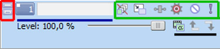
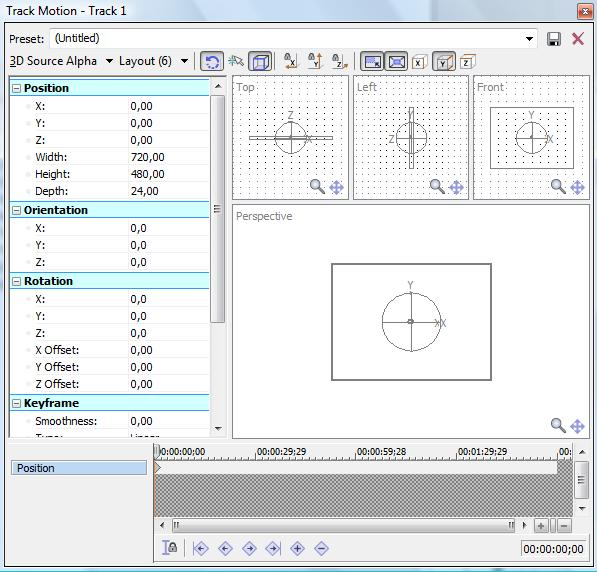
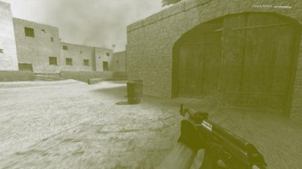
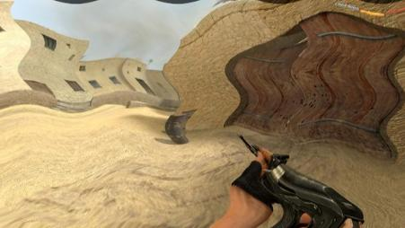

Vos vidéos font mal aux yeux ? Marre de Windows Movie Maker ? Les effets ne conviennent pas à votre superproduction ? Vos projets sont aussi passionnants qu'un épisode de Derrick ?
Eh bien ce tuto est fait pour vous ! A la fin, tous vos problèmes seront résolus, et je vous garantis que vous serez capables de beaucoup de choses ! Et là où Derrick échoue, vos projets déchaîneront les passions sous un déluge d'effets, de paillettes, et... euh je m'égare, là :) .
Avec lui (le tuto hein, pas Derrick :p ), je vais vous apprendre les bases de Vegas, un logiciel que j'utilise depuis plusieurs années, et dont je ne me suis jamais plaint.
Mais j'aimerais autant le signaler : j'explique tout en détails, c'est en fait assez simple, et sachez que je ne vous prends pas pour des imbéciles : c'est pour être sûr que nous sommes tous sur la même longueur d'onde ;) .
Avant de commencer, ça serait quand même bien de savoir exactement ce que nous allons voir tout au long de ce tutoriel. Et par la même occasion de se situer dans le monde impitoyable de la création de vidéo ! Vous n'êtes pas obligé de lire ce premier sous-chapitre, il n'est pas indispensable, mais il peut vous donner quelques pistes à explorer pour améliorer votre production, ou tout simplement pour avoir une marche à suivre ;) .
Voici un schéma qui représente, de manière très générale, la création idéalisée d'une vidéo.
Que d'étapes dites donc ^^ . Si vous ne comprenez pas, voici la version texte.
Tout d'abord, avant de commencer une vidéo... il faut savoir ce que l'on veut ! C'est idiot à dire, mais certaines vidéos sont gâchées parce qu'elles partent de rien, elles n'ont pas vraiment une idée. Or, et c'est un des meilleurs conseils que je peux vous donner, vous devez savoir ce que vous allez montrer. Et lorsque c'est fait, pour plus de facilité, vous pouvez le coucher sur papier ou dans un fichier texte ; ce document constituera le script de votre vidéo.
Bref, à la première étape, on "fait notre vidéo par écrit", on ne se lance pas directement dans les programmes. C'est un des meilleurs moyens de gagner du temps facilement ;) ;
Ensuite, il vous faudra bien des médias sur lesquels travailler.
Il y a deux façons d'avoir ces fameuses séquences : soit vous les créez par ordinateur (des images de synthèse par exemple), soit vous les créez "manuellement" (avec une caméra ou un appareil photo) ou les récupérez (des bouts de films,...).
La création d'un script de votre vidéo peut vous permettre de raccourcir cette deuxième étape. Ainsi, si je dois filmer une séquence dans la rue, je ne vais pas commencer à essayer plusieurs angles tout en embêtant les gens qui passent, car dans mon script il sera mis "la caméra sera dans telle position" ;
Maintenant que nous avons nos médias, on va pouvoir se lancer directement dans le montage vidéo ! Et c'est ici que ce tutoriel va intervenir ! La phase de l'imagination de la vidéo est primordiale, la création est cruciale, mais le montage est la clé de voûte ! Vous pouvez très bien avoir des séquences époustouflantes et une histoire géniale, mais tout peut rater à cause d'un montage foireux :( .
Le montage (vidéo ou sonore) consiste à aligner les séquences que vous avez créées suivant l'ordre défini par le script. Cela a l'air simple, mais c'est sûrement la partie qui prend le plus de temps ;) . C'est également ici que vous truquez vos séquences.
Concrètement, l'encodage transforme la vidéo que avez produite avec un logiciel de montage en une vidéo plus moche mais beaucoup moins lourde. Quand je dis "plus moche", il faut relativiser, des fois on ne voit pas la différence ;) . Cette dernière étape est facultative ; en effet, cela dépend de la manière dont vous voulez diffuser votre vidéo.
Si par exemple vous faites une simple vidéo que vous gardez pour vous, il n'est pas spécialement nécessaire de faire un encodage très poussé. Par contre, si beaucoup de personnes doivent la télécharger, autant la rendre la moins lourde possible ;) .
Nous reviendrons plus tard sur quelques étapes ;) .
Dis, j'ai vraiment besoin de faire tout ça pour ma vidéo ?! o_O
Non, du tout :p . C'est juste une manière de décomposer le processus de création de vidéo. Evidemment si vous lisez ce tutoriel juste pour faire un diaporama un peu moins moche que sous PowerPoint, vous pouvez oublier tout ce qui est marqué en haut et vous contenter des réglages par défaut :D .
Notez cependant que si vous faites une vidéo à plusieurs personnes et qu'il faut répartir le travail, je vous conseille de suivre le schéma (il faudrait même le complexifier) ; par exemple trois personnes écriront le scénario, deux autres se chargeront des images de synthèse, deux autres s'occuperont de la table de montage et enfin un dernier fera l'encodage final de la vidéo. Ce n'est qu'un exemple, mais ce n'est pas forcément une bonne idée de mettre tout le monde sur la même étape. De plus, il faut tenir compte des spécialités de chacun (3d, montage sonore,...).
Vous pouvez vous passer de certaines étapes ; ainsi, la plupart des logiciels de montage proposent une méthode d'encodage, certes pas très poussée, mais qui permet de faire de belles choses :) . Vous pouvez également générer certains types de médias, mais sans les tonnes de paramètres et la bien meilleure qualité que proposerait un logiciel dédié. C'est notamment le cas de Vegas, qui peut presque tout faire, mais de manière rudimentaire.
Ce tutoriel va donc vous apprendre à vous servir de Sony Vegas, LE logiciel de montage pour débutants et semi-professionnels ! Mais d'abord, il va bien falloir se farcir quelques notions théoriques pour continuer. Ne vous inquiétez pas, ça ne sera pas douloureux :lol: .
Non, ce n'est pas une bête question, et c'est même loin d'en être une, en fait. Il en découle quelques notions qui seront utiles par la suite.
Une vidéo, c'est une suite d'images. Évidemment, il y en a beaucoup ; on les compte en images par seconde, ce sont les FPS. C'est l'abréviation de Frames Per Second, qu'on appelle aussi le framerate. On peut dire que frame est une traduction possible d'image.
(Par exemple, le bout de vidéo que vous pouvez voir est à 10 FPS :) ;)
Malheureusement, il y a un minimum d'images par seconde, sinon la vidéo n'est pas fluide. On ne va pas trop rentrer dans les détails, mais pour faire court, vous devez toujours avoir un minimum de 25 à 30 images par seconde si vous voulez que votre vidéo ne soit pas saccadée.
Notez que plus vous avez de FPS, mieux c'est... Sans entrer dans l'excès ! Quelqu'un qui viendrait se plaindre d'une vidéo qui passe de 100 à 80 FPS serait une personne très exigeante ^^ . Mais ce genre de valeur (trop élevée pour être correctement perçue par nos yeux d'humains) est pratique lorsqu'on fera des ralentis (partie II, patience :p ).
Les standards vidéos
Voici trois mots dont vous avez certainement entendu parler, sans peut-être vous demander ce que cela signifie : PAL, NTSC et SECAM. Ce sont trois normes d'encodage pour les vidéos à destination des télévisions.
Hélas, cela ne veut pas dire la même chose, ce serait trop simple :p . Les normes diffèrent selon la localisation géographique, le framerate, la méthode d'affichage des couleurs et plusieurs paramètres du genre. On ne va aborder que les deux premiers, les plus intéressants à notre niveau :) .
On trouve du PAL dans la grande majorité des pays de l'Europe, en Amérique du Sud, au Proche et Moyen-Orient ainsi que dans une partie de l'Afrique. Son autre caractéristique principale est le fait que le PAL tourne à 25 images par seconde.
Si vous voulez plus de renseignements sur le PAL, vous pouvez aller sur Wikipédia ;) .
Le SECAM est utilisé en France (ainsi que le PAL), en Russie et en Afrique. Le framerate est aussi de 25 FPS (plus d'infos).
Pour finir, le NTSC est une norme américaine ; on la trouve surtout en Amérique du Nord et en Amérique centrale, et le framerate est cette fois-ci fixé à 30 FPS. Plus d'infos sur Wikipédia.
Heureusement pour nous, Vegas possède des presets, des paramètres prédéfinis, pour chaque norme vidéo. Vous n'aurez qu'à choisir entre PAL et NTSC, et c'est tout :) .
Notez que si vous ne destinez vos vidéos qu'aux ordinateurs, inutile de se tracasser pour cela ;) .
Non, il n'y a aucun rapport avec les (fausses :p ) promesses des fêtes de fin d'année. :)
Une histoire de pixels
La résolution, c'est le nombre de pixels en largeur et en hauteur affichés à l'écran. On la retrouve surtout dans les jeux vidéos, lorsqu'on trifouille un peu dans la configuration vidéo. Elle est également présente dans le movie-making, et elle est aussi importante que les FPS.
Plus la résolution est grande (donc, plus il y a de pixels), mieux c'est ; ce que l'on voit à l'écran est plus détaillé. Pour noter les résolutions, on commence toujours par la largeur, ensuite la hauteur.
Par exemple, la résolution de mon écran est de 1440 * 900.
Contrairement aux FPS, nos yeux n'ont pas vraiment de minimum en terme de résolution. C'est seulement au niveau du feeling qu'il y en a un. Retenez que plus elle est grande, plus il est agréable de regarder la vidéo...
Une histoire de ratio
Tout d'abord, un ratio est un rapport entre deux nombres, et on dit rate en anglais.
En movie-making, le ratio en terme de résolution, est le rapport entre la largeur et la hauteur en pixels.
Par exemple, le ratio de la plupart des écrans est de 4/3. Pourquoi ? Parce que le nombre de pixels en largeur divisé par le nombre de pixels en hauteur fait 1,3333..., c'est-à-dire 4/3.
Quelques autres résolutions en 4/3 : 640 * 480, 800 * 600, 1024 * 768,...
Si j'évoque le format "16/9", ça vous dit quelque chose ? Eh oui, c'est aussi un ratio ! Le nombre de pixels en largeur divisé par celui en hauteur vaut 1,77777..., soit 16/9.
Des résolutions en 16/9 : 800 * 450, 1024 * 576, 1280 * 720,...
Nos yeux interviennent encore dans l'histoire ; nous voyons en 16/9. Non, ça ne sert à rien de prendre une règle et de vérifier (vous aurez l'air juste bête :D ).
À votre avis, pourquoi de plus en plus de programmes à la télévision sont en 16/9 (on les reconnaît à leurs deux bandes noires au-dessus et en dessous de l'image) ? Parce que nous voyons en 16/9 : les métrages s'y adaptent, et ça marche ! Avouez que c'est plus agréable de regarder un film que le journal télévisé :) (sauf si vous êtes belges ; les journaux sont en 16/9).
Si vous en avez l'occasion, privilégiez le 16/9. ;) D'autant plus que les écrans d'ordinateurs au format 16/10 sont de plus en plus répandus ; la différence de lecture en terme de confort entre le 16/9 et le 4/3 est flagrante.
Voici un exemple de résolution et de format d'image avec des captures d'écran de Far Cry 2. La première capture est au format 4/3 et la seconde en 16/10.
On voit clairement que la version 16/10 est bien meilleur que celle en 4/3 ! Les zones en rouge de l'image ci-dessous représentent ce que vous ne verrez pas en 4/3.
Pour finir ce chapitre en beauté (si on peut dire), je vous ai fait quatre séquences tirées de Counter-Strike Source avec différents réglages, pour bien montrer que ces paramètres sont importants. ;) Je les ai mises dans un fichier .rar pour que le téléchargement soit le plus rapide possible. Les vidéos sont au format .wmv ; Windows Media Player suffit pour les visionner :) . Je vous conseille également de les mettre en plein écran, les différences ressortent encore plus !
On remarque d'horribles saccades, mais que c'est relativement "beau" et détaillé. Elles sont dues au pitoyable framerate (5 FPS :o ), et "la beauté" vient de la résolution, qui est de 640 * 360.
On peut voir, si on met en plein écran, que la qualité explose purement et simplement les yeux : on n'y comprend rien ! Cela est dû à la faible résolution : 320 * 180. Par contre, la vidéo ne saccade pas : on sent les 30 FPS !
Pour cette troisième séquence, je vous ai fait le cocktail miracle pour faire faire un arrêt cardiaque des yeux à n'importe qui ! ^^ Il s'agit de la même séquence, mais avec 5 FPS et avec une résolution de 320 * 180. C'est dire la très mauvaise qualité. :(
Voici la vidéo idéale ! 30 FPS et une résolution de 640 * 360.
Au passage, remarquez le poids des vidéos : quand c'est moche, donc les 3 premières, c'est relativement léger (toujours en dessous de 2 Mo), mais quand c'est agréable, la dernière en somme, le poids s'en fait sentir, avec près de 6 Mo.
Dans le movie-making, on peut dire qu'il y a un certain rapport entre la qualité et le poids. C'est un paramètre important quand vous mettez une vidéo sur Internet.
Plus tard, nous verrons comment arranger ce ratio. Par exemple, si nous utilisons un très bon codec (le X264) avec une vidéo de 30 FPS et une résolution de 800 * 600 (donc une assez bonne résolution), on peut obtenir des vidéos à 4 Mo la minute ! C'est quasiment un miracle, quand on regarde le .wmv qui a un ratio de 20 Mo par minute !
Bien, maintenant que vous savez ce qui fait qu'une vidéo est regardable, passons à un petit QCM !
Le chapitre sur les notions très importantes est terminé ! Il faut l'avouer, ce n'était pas très compliqué ;) . Voici d'ailleurs une petite synthèse, à me recopier 50 fois pour demain :
le framerate doit toujours être supérieur ou égal à 25 - 30 FPS ;
préférez les ratios supérieurs à 4/3 (16/9, ...) ;
le poids de la vidéo est proportionnel à la résolution, au framerate et au codec utilisé.
Maintenant, passons à du concret ! Dans le prochain chapitre, nous allons nous attaquer à Vegas :pirate: .
Avant de nous lancer dans le movie-making, parlons un peu du logiciel avec lequel nous allons nous familiariser, et téléchargeons-le par la même occasion :) .
Vegas est un logiciel de montage très utilisé dans le movie-making "amateur" ; j'entends par là qu'il est très accessible aux débutants. On dit que c'est un logiciel semi-professionnel :) .
Mais pourquoi Vegas ? Il y a d'autres logiciels pour faire du montage vidéo, non ?
Parce qu'il est très simple pour les débutants, qu'il est rapide et plutôt bien fourni en effets (nous verrons cela plus tard, pas d'inquiétudes ;) ).
C'est aussi, pour moi, un des meilleurs logiciels de montage. Voici une petite liste en contenant d'autres, que j'ai essayés auparavant, mais pas gardés.
Windows Movie Maker (WMM pour les intimes) : le logiciel installé en même temps que Windows. Je l'ai assez vite abandonné, car les possibilités étaient minimes, et on a vite fait le tour de la chose, sans y trouver son compte.
Pinnacle Studio : c'est en quelque sorte une version "plus" de Windows Movie Maker : il y a des effets en plus, et il est plus accessible. Malheureusement, il était encore trop limité pour ce que je voulais faire :( ;
Adobe Première : on peut dire que c'est une bonne référence en matière de logiciel de montage, mais en contre-partie, il est difficile à maîtriser :( . Je ne l'ai d'ailleurs jamais compris :euh: .
Vegas offre un excellent rapport facilité d'utilisation / possibilités. Mais il n'est pas simple à appréhender tout seul, c'est pour cela que j'ai écrit ce tutoriel ;) .
La version que je vais vous faire télécharger est un shareware. C'est-à-dire que vous ne pouvez l'utiliser "que" pendant 30 jours.
Je vous conseille aussi de prendre Vegas en anglais...
... pourquoi pas en français ?
Non c'est vrai, pourquoi ne pas nous faciliter le travail ? Il existe en effet des versions de Vegas dans la langue de Victor Hugo ! Tout simplement parce que, si vous voulez installer des plugins, vous pourriez rencontrer des incompatibilités.
De plus, vous avez plus de chance de tomber sur un tutoriel en anglais qu'en français : certains termes peuvent être radicalement différents !
Je comptais vous faire découvrir un plugin, WAX, dans un chapitre annexe, car il rajoute quelques trucs intéressants (des effets de transitions (dans la partie II, ça ;) ) en 3D notamment). J'ai essayé d'installer WAX sur une version française de Vegas, sans succès :( .
Dernier point à signaler : le téléchargement de Vegas.
Le tutoriel a été commencé avec la version 5.0 de Vegas. Étant donné qu'elle commence à dater, et que de nouvelles moutures de Vegas sont sorties, il est assez difficile de le trouver. Dès lors, vous pouvez toujours vous diriger vers la dernière version en date, la 9.0 : elle est certes un peu plus lourde , mais elle est simplifiée grâce à des repères de couleurs qui se créent lors du montage, mais vous découvrirez bien vous-mêmes ;) . D'ailleurs, je n'ai pas pu m'empêcher de terminer le tutoriel avec :p .
Note importante : il existe différentes déclinaisons : Vegas Pro, Vegas Movie Studio, Vegas Movie Studio Platinum,... Apparemment, il y a des problèmes d'effets spéciaux et de transitions inexistants, ainsi que des fonctions qui sont tout simplement absentes...
Si vous voulez acheter ou télécharger Vegas, prenez la version Pro. Normalement, les liens qui sont proposés sont des versions qui fonctionnent correctement. Si ce n'est pas le cas, n'hésitez surtout pas à le signaler en commentaire ;) .
Fin de la présentation de Vegas :) .
Je ne vais pas faire un chapitre pour l'installation, c'est comme n'importe quel logiciel.
Au menu du prochain chapitre : découverte de l'interface !
Allez, on se lance, on double-clique sur l'icône ! Après une petite fenêtre qui vous rappelle que vous avez une version shareware, sous vos yeux éblouis s'ouvre à vous la fantastique, que dis-je, la merveilleuse interface de Vegas !
Et maintenant, une liste de ce que vous voyez à l'écran :
1 : les tracks ;
2 : l'explorateur ;
3 : le volume ;
4 : la preview.
Passons à la décortication !
Les tracks
Les tracks (traduction de "pistes" en anglais) sont les "bandes" sur lesquelles vos médias (soit une vidéo, soit une image, soit un son) seront déposés. C'est là que vous passerez la plupart de votre temps.
L'explorateur
J'ai appelé cette fenêtre "explorateur", mais il faut savoir qu'il y a plein de fonctions ! Remarquez les petits onglets en dessous.
Nous allons les analyser un par un.
"Explorer"
Ici, c'est simple, c'est une bête fenêtre d'exploration, comme l'explorateur Windows. C'est pour trouver les médias présents sur votre ordinateur.
"Trimmer"
On peut dire que c'est un zoom sur la position d'un média sur un track. Personnellement, je n'en ai jamais eu besoin, donc je pense que vous pouvez oublier :) .
"Media Pool"
C'est dans cette fenêtre que se trouvent tous les médias qui ont été utilisés dans le projet. Je n'ai pas fait de photos, étant donné que c'est vide.
"Transitions"
C'est ici que sont répertoriés tous les effets de transitions. Dans la colonne de gauche, ce sont les classes de transition, et à droite, les effets de transition proprement dits :) .
Nous ne faisons que survoler, les effets de transition seront abordés en détail dans la partie suivante ;) .
"Video FX"
Ici se trouvent tous les effets applicables aux médias. Comme pour les effets de transition, il y a deux colonnes : une pour les catégories d'effet, et une autre pour les effets.
Autre point commun avec les effets de transition : nous n'allons pas en parler tout de suite, mais bien plus tard ;) .
"Media Generators"
Ici, ce sont des médias que vous pouvez configurer à votre guise. On y trouve du bête texte comme du bruit fractal. Mais je ne vais pas m'étendre sur le sujet, on en discutera plus tard, ne vous inquiétez pas, vous ne mourrez pas idiot :p .
Le volume
Attention, la fonction la plus dure à comprendre : le volume ! C'est grâce à cette barre magique que vous réglez le volume de votre vidéo :magicien: .
La preview
C'est dans cette fenêtre que vous voyez un aperçu de ce que vous faites. Notez qu'il est normal que ce soit saccadé, qu'on ne voit pas tout les effets ou qu'il y a des bugs : cela ne sera pas présent dans la vidéo lorsqu'elle sera créée ;) .
J'aimerais attirer votre attention sur quelque chose : juste en dessous de la preview, que voyez-vous ?
Les résolutions : ze come back :soleil: !
Ce que vous voyez ici sont les différentes résolutions de votre vidéo. Petites explications :
Project : 720 x 480 x 32 ; 29,970i
En rouge, nous reconnaissons donc notre résolution. En vert, c'est la profondeur des couleurs, ici 32 bits. Et enfin, en bleu, le framerate (FPS). Mention spéciale pour la petite lettre à côté des FPS : pour les intéressés, c'est la méthode de balayage, mais pour l'instant ce n'est pas important ;) .
Project, c'est les données du projet, et donc de la vidéo qu'il y aura à la fin. Preview et Display, ce sont les données de la preview, autrement dit de la petite fenêtre juste en dessous. Et enfin, Frame, c'est le numéro de la frame sur laquelle on se trouve, donc de l'image qu'on voit en preview.
Je termine ce chapitre sur une répétition : non, il ne faut pas paniquer parce que, quand vous regarderez votre vidéo en preview, c'est saccadé et parce que les effets ne s'affichent pas : c'est normal ! Dans le cas d'une vidéo complexe (beaucoup d'effets, beaucoup de média de gros volume, ...), on n'y comprend quasiment rien, mais quand on créera notre première vidéo, il n'y aura pas tout ces bugs et autres artefacts ;) .
Je vous épargne encore un QCM ; je ne pense pas que cela vaille la peine. ^^
Ainsi donc se ferme ce court chapitre sur l'interface de Vegas. Il a surtout servi à placer des noms, car plus tard, je les utiliserai sans modération. :D
Dans le prochain numéro, nous allons réaliser notre première séquence ! Ensuite, vous me ferez un petit TP, pour bien voir si vous comprenez. ;)
Donc, comme je l'ai dit, nous allons nous attaquer à notre première séquence. Pour ce faire, nous allons tout d'abord essayer de comprendre le principe des tracks. Ensuite, nous verrons comment importer un média (si vous n'en avez pas, je vous en fournirai un ;) ), et ensuite comment créer notre vidéo finale :) .
Courage, c'est la dernière notion théorique pour cette partie :p . Notez qu'elle est présente dans beaucoup de logiciels comme Photoshop, After Effects,...
On va simplifier grandement : un track, c'est une couche de média (image, vidéo ou son), comme une couche de peinture. Maintenant, si vous mettez une couche de peinture bleue sur une couche de rouge, on verra le bleu (logique). Dites-vous que c'est la même chose pour les tracks quand il y en a plusieurs !
Par exemple, je vais superposer deux calques de texte (nous verrons ce que c'est dans pas longtemps :p ), un de couleur rouge et un de couleur bleue.
(Oui, je suis belge... Et alors ? :p .)
Ici, on voit que le média "Vive les frites !" est au-dessus du "Vive les moules !", cela se voit bien dans la fenêtre de preview. Maintenant, si j'inverse les textes....
... c'est le contraire, les moules sont au-dessus des frites.
On voit facilement l'effet car le fond est transparent, mais s'il était plein avec une couleur unie, on verrait seulement le calque tout en haut.
Je vais vous donner un autre exemple : je vais vous dire qui sont mes plus grands amours... :euh: .
Ici, j'ai fait un trou dans les coeurs et j'ai placé les photos de Zozor et de Vegas en dessous. Voici la table de montage.
(Ne paniquez pas à cause des coeurs verts, nous verrons cela après ;) . Pour l'instant, dites-vous que c'est le trou pour voir ce qu'il y a en dessous.)
C'est logique parce que si les photos étaient au-dessus des coeurs, on aurait ceci :
Tout l'effet est cassé du coup :( .
Ceci est valable pour les images et les vidéos... mais pas trop pour les sons et les musiques :p . En effet, en les superposant, on les entend simplement en même temps. Pour en mettre un plus en valeur qu'un autre, il faudra diminuer ou augmenter le volume.
C'est une idée assez difficile à expliquer, mais nous allons revenir dessus très rapidement, et si vous n'avez pas capté ici, la pièce tombera par la suite ;) .
Ici, c'est la partie la plus facile : nous allons importer un média dans Vegas. Pour cela, il y a trois méthodes, toutes plus faciles les unes que les autres :) .
Dans l'explorateur de fichiers, recherchez le dossier (en bas à gauche, souvenez-vous) ;
Dans l'onglet File, tout au-dessus à gauche, appuyez sur Import Media, et recherchez votre vidéo. Dans les versions de Vegas plus récentes que la 5.0, il faut aller dans File, puis Import et enfin Media ;
Ouvrez le dossier "comme ça", dans une nouvelle fenêtre, qui contient la vidéo et glissez puis déposez-la sur un track. Normalement, un cadre représentant votre vidéo apparaît.
Dans les deux premiers cas, vous retrouverez votre vidéo dans l'onglet Media Pool, que nous avons survolé tout à l'heure. Il faut alors la prendre et la déposer sur les tracks. Normalement, voici ce que vous devez voir :
Sur nos pistes (les tracks) sont apparus deux rectangles. Ceux-ci représentent la partie audio et la partie vidéo du média.
Donc, c'est avec une certaine joie donc que notre première vidéo s'affiche sur nos tracks :) . Détaillons maintenant ce qui est apparu sur la gauche, c'est-à-dire ceci :
Ce sont les deux rectangles à gauche qui nous intéressent le plus. Pourquoi ? "Simplement" parce que c'est là que se trouvent les propriétés des tracks.
C'est normal que ces rectangles ne soient pas les mêmes ?
C'est normal ; sur un track, on ne mélange pas de l'audio et de la vidéo. En clair, un track sert à mettre un média soit visuel (vidéo ou image), soit sonore (musique, bruit).
Analysons-les maintenant :) .
Nous n'allons pas voir chaque paramètre en détail, mais seulement un petit effet assez sympa, et très simple de surcroît.
Le track 1 (la vidéo)
Dans les propriétés du track 1 (donc le premier rectangle), il y a une ligne en dessous de laquelle il est marqué Level : 100.0 %. Cela représente le pourcentage de pixels du track qui sera visible ; c'est l'opacité. Pour se rendre compte de l'effet, prenez le curseur, déplacez-le sur la gauche et observez ce qui se passe en preview.
Ici, j'ai réglé l'opacité à 50 % :
50 % des pixels de tous les médias du track deviennent transparents.
Euh, ils ne deviennent pas noirs, par hasard ?
Du tout :p . En fait, le "fond" de Vegas par défaut (quand il n'y a rien, en quelque sorte) est noir.
On va faire un petit test pour démontrer cela : en bas à gauche, dans Media Generator de l'explorateur, sélectionnez Solid Color à gauche. Par exemple, on va prendre du rouge ! Sélectionnez la couleur Red, et glissez-la sur le track 3.
Si le track 3 n'existe pas, le fait de déposer un média dessus le crée ;) .
Arrangez-vous pour que votre couleur soit en dessous de la vidéo (glissez-la sur le track), et mettez le curseur de navigation dessus (le trait qui clignote). Voici ce que vous obtenez :
La vidéo a donc une opacité de 50 % : 50 % des pixels sont devenus transparents. Cela implique que l'on voit ce qui se trouve en dessous : on voit le rouge.
Le track 2 (l'audio)
Au suivant ! Ne vous fiez pas aux apparences : ce n'est pas parce qu'il y a deux fois plus de lignes avec un curseur que c'est compliqué :D . C'est même beaucoup plus simple !
La première, Vol, c'est simplement le volume du track en décibels. Sur la gauche, il diminue (le chiffre devient négatif), et sur la droite, il augmente.
La deuxième ligne, quant à elle, donne la position dans l'espace du track (donc, des sons qui se trouvent dessus). Si on met le curseur sur la gauche, le son sera à gauche, au centre, il est au milieu, et à droite, je ne vous cacherai pas qu'il est à droite ^^ .
Je ne vais pas entrer dans les détails, tellement ce n'est pas compliqué (si on résume : plus fort, moins fort, à gauche, au milieu, à droite :p ) !
Couper un média
Après l'importation, la deuxième des choses à savoir quand on fait du movie-making est le découpage de séquences, ou split en anglais. Il suffit de placer le curseur de navigation à l'endroit où on veut couper et d'appuyer sur la touche S (comme Split). Ou bien vous allez dans l'onglet Edit et vous cliquez sur Split. Dans les deux cas, le résultat est le même :
Notez que si aucun média n'est sélectionné, en "splittant", vous découpez toute la table de montage à l'emplacement du curseur. Ainsi, si vous avez des médias en dessous ou au-dessus, ils seront coupés aussi. La solution est donc de sélectionner le média avant de le couper.
Cette fonction est très pratique notamment pour couper les moments que vous ne souhaitez pas voir dans votre vidéo :) .
Supprimer un média
Ce sera une des seules touches avec le "S" à vraiment retenir, celle pour supprimer un média : Suppr ou Delete ! En ayant d'abord sélectionné le média bien sûr :p .
Les outils de sélection
Imaginons par exemple que vous avez aligné une dizaine de séquences avec plein de textes, et tout... , mais pas de chance, vous en avez oublié une :o . La solution serait de sélectionner tout et de tout décaler... Avec cinq ou six médias, ça va encore, mais avec une table de montage bien remplie, avouez que c'est casse-pieds de tous les prendre un à un ^^ .
C'est ici qu'interviennent 4 outils qui vont nous permettre de manipuler la table de montage beaucoup plus facilement ! Ils se trouvent en dessous de la barre des onglets, c'est le deuxième groupe d'icônes en partant de la droite.
(Ici, je voudrais intercaler la couleur noire ; les outils de sélection sont entourés en rouge... et ne cherchez surtout pas l'utilité d'une telle table de montage, vous vous faites du mal pour rien :lol: .)
"Normal Edit Tool"
Le premier est l'outil "normal", de base, et qui vous permet de tout faire.
"Envelope Edit Tool"
Le deuxième, je le réserve pour beaucoup plus tard dans le tuto :p .
"Selection Edit Tool"
Le troisième vous permet uniquement de faire des sélections. Vous pouvez par exemple laisser le clic-gauche de la souris enfoncé et sélectionner plusieurs médias, alors que l'outil de base ne le permet pas :) .
"Zoom Edit Tool"
Enfin, le dernier vous permet de... faire des zooms sur la table de montage :p . Vous sélectionnez la région à agrandir et elle se redimensionne automatiquement à la taille de la fenêtre. Pour dézoomer complètement, vous devez cliquer sur un endroit de la table de montage, "comme ça", sans faire de sélection. Vous revenez ainsi à une table de montage de taille très réduite.
Les groupes
C'est bien beau d'utiliser les outils de sélection, mais quand il faut tout le temps sélectionner les mêmes médias... C'est pour cela qu'existent les groupes ! En sélectionnant une bonne fois pour toutes des médias, vous pouvez créer un groupe : vous en sélectionnez un, tous ceux du groupe le sont aussi.
Pour créer un groupe donc, vous devez sélectionner tous les médias que vous désirez, faire un clic-droit sur l'un d'entre eux (n'importe lequel, ça n'a pas d'importance), puis aller dans Group et Create New.
(Ici, j'ai groupé les médias rouges.)
Le groupe est ainsi créé, ce qui facilite énormément la sélection ;) .
Maintenant, imaginons que vous avez fait un groupe d'une dizaine de médias, mais que vous voulez le supprimer. Alors faites un clic-droit sur un des membres du groupe, allez dans Group et cliquez sur Clear : le groupe sera supprimé (les liaisons, pas les médias :p ), tous les membres redeviennent indépendants.
Mais si vous ne voulez bouger qu'un seul membre ? Hé bien clic-droit sur ce membre, Group et Remove From : le membre sera exclu du groupe !
Lorsque j'importe une vidéo avec du son, je n'arrive pas à les séparer, ils sont comme qui dirait...
... groupé ! Par défaut, lors d'un import, le son est groupé à la vidéo. Et pour les délier, il suffit de supprimer le groupe comme dit plus haut ;) .
La durée des médias
Il y a moyen de rallonger et de raccourcir la durée de vie des médias. Il vaut mieux savoir faire cela, imaginez que vous voulez faire une vidéo dans laquelle on analyse un tableau. Sachant qu'en important "bêtement" une image elle durera 5 secondes... le commentaire devra être rapide :lol: .
Cependant, on ne peut pas allonger tous les médias "comme ça" ! En fait, pas pour 66 % des cas :waw: . Faisons une petite liste de ces médias, accompagnées de la méthode pour les prolonger dans le temps.
Les images
Nous allons commencer par le plus facile à notre niveau : les images. Je vais utiliser cette image :
Si vous êtes gentils, pour notre premier travail pratique, vous aurez encore des chats :D .
Après importation, voici ce que nous obtenons :
Si vous aimez les chats vous trouvez qu'on ne voit pas assez longtemps l'image, on peut facilement rallonger "sa durée de vie" (aucun méchant jeu de mots avec le contexte de la photo >_ ).
Pour cela, il faut pointer le côté droit du média avec la souris (le curseur se transforme en petit rectangle avec une flèche), appuyer sur le bouton gauche de la souris, et étirer le média sur la droite. Relâcher le bouton pour s'arrêter.
Aussi simple que ça :soleil: !
C'est après que tout va se compliquer !
Les vidéos
Nous allons, pour cette partie, reprendre la vidéo d'entraînement de tout à l'heure.
Le résultat est totalement différent si on fait la même chose que pour le chat :
Nous pouvons remarquer l'apparition d'un petit cran, ici entouré en vert.
Contrairement aux images, une vidéo ne s'allonge pas comme cela. Avec cette méthode, elle se répète. Appuyez sur Play, et vous verrez que la vidéo se répète après le cran.
Les sons
Je ne vais pas m'étendre, parce qu'ici, il se produit exactement le même phénomène qu'avec les vidéos : il y a formation d'un cran et la musique ou le son se répète. Et tout comme les vidéos, nous verrons dans la partie II comment allonger un bruit en le ralentissant :) .
Bien bien bien, maintenant que vous savez comment torturer des chats manipuler des médias, nous allons voir comment en faire une vidéo :) . Mais avant, il va falloir la paramétrer.
Propriétés de la vidéo
La première chose à faire est de régler la vidéo ; allez dans l'onglet File et cliquez sur Properties. Une fenêtre apparaîtra avec les paramètres essentiels de la vidéo !
Nous retrouvons notamment les indispensables résolution (Width et Height) et Frame rate. Il y a également quelques options en plus, comme le ratio des pixels, mais ce n'est pas l'objet de ce tutoriel ;) .
Notez la présence du paramètre Template : il permet de choisir des paramètres prédéfinis. Il y a notamment les normes NTSC et PAL, pour les vidéos à destination des platines ;) .
Si vous réalisez une vidéo "simple", il n'est pas nécessaire de changer quoi que ce soit. Par contre, si vous voulez une vidéo en 16/9, il faudra changer les paramètres Width et Height ;) .
Encodage de la vidéo
Ce que je vous invite à faire, c'est créer un petit montage tout simple : vous importez la photo du chat de tout à l'heure, et celle qui est en dessous de ce paragraphe. Mettez-les sur le même track, pour plus de facilité, et collez-les. Réduisez ou allongez-les pour que tout cela dure environ 15 secondes (pour vous repérer, utilisez la graduation en haut, ou même la barre de navigation et le temps, qui est indiqué en haut à gauche ;) ).
Normalement, cela ne devrait pas vous prendre trop de temps ^^ . Voici à quoi cela devrait ressembler (sinon, relisez ce chapitre depuis le début ! ;) ) :
Notez qu'il existe un certain magnétisme entre les médias : si vous les rapprochez assez, ils "se collent". Cela évite d'avoir des trous noirs :) . Il en est de même avec le curseur de navigation.
Nous allons maintenant faire un render de notre petite séquence.
What is a "render" ?
Un render, c'est la version finalisée de notre vidéo. C'est grâce à cette opération que nous allons obtenir notre vidéo. C'est aussi un excellent moyen d'avoir un bon aperçu de sa vidéo quand il y a beaucoup d'effets ! (La preview rame beaucoup et oublie souvent d'afficher des effets. :euh: )
Pour commencer, nous allons sélectionner la partie de notre vidéo qui sera créée.
Pourquoi faire cela ? Le fait de faire un render ne crée pas toute la vidéo ?
Mise en situation : vous avez une énorme vidéo, très longue et bourrée d'effets. Tellement énorme qu'il lui faut 3 heures pour faire un render o_O . Vous avez juste envie de savoir si un petit passage est bon.
Solution : sélectionner grâce à la barre de render (nous allons voir ce que c'est ;) ) la partie concernée.
La barre de render se trouve au-dessus des tracks. Si je vous dis que les bords sont des triangles jaunes...
Eh oui, c'est le petit bidule jaune qui est entouré en vert ! En fait, la barre est repliée sur elle-même. Appuyez sur le petit bout jaune et étirez-le sur la droite, et là, magie, notre barre apparaît :magicien: !
Maintenant, reprenez le bout de droite, et mettez toute votre vidéo en bleu. C'est ce qui sera gardé pour votre séquence finale.
Dès que vous avez tout sélectionné, allez dans l'onglet File, en haut à gauche, et appuyez sur Render as.... La magie de l'informatique fait apparaître une fenêtre ; elle va vous permettre de configurer la vidéo qui sera créée. Screenons tout cela :) .
Voici ce qui correspond aux chiffres :
1 : c'est tout bêtement l'endroit où sera sauvegardée votre séquence :D ;
2 : je ne vous cacherai pas que c'est le nom que vous donnerez à la séquence ;
3 : c'est plus intéressant ici ; cette liste déroulante vous permet de choisir le format de sortie de la vidéo ;
4 : c'est bien de choisir un format, encore faut-il le configurer ! Les templates sont des configurations pour la vidéo (résolution, FPS, ...) qui ont été prédéfinies.
Nous n'allons pas traîner sur les templates et les formats, un chapitre en parlera :) .
On ne va pas faire compliqué pour notre vidéo ; dans le chemin où sera sauvegardée la vidéo et dans le nom, mettez ce que vous voulez ! Par contre, pour le format, sélectionnez "Windows Media video V9 (*.wmv)", comme sur la photo précédente. Dans les templates, laissez celui par défaut ("default template").
Il ne reste plus qu'une opération à faire, et de loin la plus compliquée : appuyer sur Enregistrer >_ . Après, la fenêtre se fermera, et un compteur apparaîtra. Il vous dit quand votre vidéo sera prête, et vous donne même la possibilité de l'ouvrir tout de suite, pour les plus paresseux ^^ .
Normalement, il ne vous faut pas des heures pour que cela se crée. La durée est déterminée par :
la complexité du montage (si c'est bourré d'effets, il vous faudra sûrement plusieurs heures) ;
le type de média utilisé (si mes médias sont des vidéos qui pèsent 15 Go / minute, j'en ai pour toute la journée :waw: ) ;
la durée de la vidéo (un projet de 1 h 30 aura sûrement besoin d'une journée entière pour faire un render ) ;
les paramètres de la vidéo ; la résolution et le nombre de FPS, entre autres.
Dans notre cas, ce ne sont que de bêtes photos (compromettantes pour moi :-° ), il n'y a aucun effet et la durée de la vidéo est très faible (15 secondes). Il y a cependant la résolution qui ne joue pas en notre faveur ; par défaut, elle est quand même élevée : on le voit, pendant le render, en dessous de la preview, dans les données de la vidéo : 720 * 480 à 29.97 FPS (le 29,970i). Nous verrons plus tard comment modifier ces détails. ;)
Il ne vous reste plus qu'à ouvrir votre magnifique vidéo ! Le lecteur Windows Media Player suffit amplement.
Et voilà ! Le tuto est terminé !
:waw: Pas maintenant ! :'( .
Meeeuh non, c'est pour rire :p . C'est sur ces quelques phrases que je termine la partie consacrée aux bases de Vegas.
Théoriquement (enfin, si vous avez bien tout suivi), vous devriez être capables de faire un petit montage du niveau de Windows Movie Maker à partir de photos ou de vidéos . Certes, il n'est pas compliqué, mais c'est toujours cela de gagné ;) .
Ce que nous avons appris, ce sont des trucs sur lesquels je ne m'étendrai plus. Si je vous dis, d'une voix forte et virile : "Faites des renders pour tester vos séquences", je ne ré-expliquerai pas comment faire ! De plus, il faut l'avouer, c'est si simple !
Dans la partie II, nous nous attarderons sur ce qui fait qu'une vidéo est une vidéo : les transitions, les effets, et pleins de petits trucs ! Mais avant tout cela, faisons un petit travail pratique !
Trêve de blabla passons maintenant à de la pratique ! En plus de vérifier si vous savez vous débrouiller avec tout ce que j'ai raconté, nous allons découvrir comment mettre du texte :) .
... est de hacker le Site du Zérocréer un genre de diaporama d'environ une minute avec des photos accompagnées de commentaires.
Pour cela, je vais utiliser les images qui suivent ; vous pouvez les prendre, ou utiliser vos propres photos, cela n'a pas d'importance :) . Appuyez dessus et faites un clic droit et Enregistrer l'image sous... si vous les utilisez.
(Non, non, non, je n'ai rien contre les chats. :-° )
Les calques de texte
C'est quoi, un calque ? Nous n'avons jamais vu ça !
En fait si, mais nous l'avons appelé autrement ; un calque, c'est un média, "une couche" de quelque chose, une vidéo, une image,... Un calque de texte, c'est le nom que l'on donne aux médias de Media Generator qui servent à afficher du texte. Si vous ne comprenez pas, le déclic se fera sûrement lorsque vous saurez en mettre un ;) .
Allez dans l'onglet Media Generator, et dans la catégorie Text, cherchez Default Text. C'est un calque avec du texte (vous pouvez lire, sur la miniature, Sample text) sur un fond transparent (toujours dans la miniature, le damier en arrière-plan). Cliquez dessus, glissez-le et déposez-le sur un track autre que celui où se trouvent les images. Dès que vous l'aurez lâché, une fenêtre apparaîtra : c'est pour configurer notre calque.
Nous parlerons en détails de toutes les options plus tard, dans le chapitre approprié ;) . Nous allons aller directement à l'essentiel.
Le premier onglet (Edit) sert à écrire ce que vous verrez.
A la place de Sample Text, écrivez ce que vous désirez, en rapport avec une photo si possible. Profitez-en pour changer la taille (sinon, cela cachera la photo), et la police si cela vous tente :) .
Allez ensuite dans l'onglet Placement. C'est ici que nous pouvons déplacer notre texte à notre guise. Mettez-le où vous voulez. Si vous voulez être correctement alignés, n'hésitez pas à utiliser les coordonnées, en haut du schéma ;) .
Tiens, je vais le mettre en bas : il suffit de glisser le texte sur le schéma où on veut :) .
Sur la table de montage, il doit y avoir deux tracks utilisés (non grisés) : celui avec les photos et un autre avec le calque de texte.
Notre but est de mettre les textes au-dessus des images, sinon, on ne les verra pas (rappelez-vous la notion de super-positionnement ; c'est pour cela qu'on a choisi un texte avec un fond transparent).
Sur la gauche de la table de montage, il y a les propriétés des tracks (les rectangles) ; sélectionnez celui avec le texte, laissez le bouton de la souris appuyé et glissez-le au-dessus du track avec les images.
Et voici ce que l'on obtient si on met le curseur de navigation sur le texte.
Notez que j'ai mis le texte au niveau d'une image qui est en rapport avec :) .
C'est aussi compliqué que cela :D . Je vous laisse continuer seuls, le reste n'étant pas difficile à faire ;) . Rappelez-vous des consignes : le tout doit durer environ une minute et chaque image doit avoir un commentaire différent, en étant synchronisé (les images sont de la même durée que le texte).
Après quelques minutes de dur labeur, voici ce que vous devriez à peu près voir :
Je ne vais pas vous broyer les doigts avec un étau si vous n'avez pas la même chose que moi :D . Le principal est que vous ayez respecté ces points :
la durée de la séquence : environ une minute (grosso modo 7,5 secondes par photo / texte) ;
la synchronisation textes / images : cela signifie qu'ils ont la même durée, et qu'ils commencent et terminent au même moment.
Il faut l'avouer, ce petit TP n'était pas la mort, et j'espère qu'il ne vous a pas fallu des heures pour le réaliser :p .
Un des objectifs était de vous donner un aperçu des calques de texte. Nous allons bientôt nous y attarder, dans la partie II, qui parlera aussi des transitions et autres effets spéciaux :) .
Enjoy !
Fin de la partie I ! Vous êtes désormais capables de faire des vidéos avec une réalisation simple, vous connaissez le principe des tracks et vous savez faire des rendus. Il ne vous reste plus qu'à attaquer la partie II, histoire que vos productions soient bien plus attrayantes. A l'abordage :pirate: !
A l'abordage ! Sus aux effets de transition, ceux qui rendent une vidéo agréable :pirate: ! Ne les laissez pas s'échapper, ils nous serons extrêmement utiles !!!
Un effet de transition, c'est un effet qui permet de passer d'un média A à un média B ; c'est une manière plus élégante que d'afficher brutalement une image ou une vidéo après une autre.
Il faut aussi distinguer deux types de transitions : les dégradés et les transitions complexes.
Les dégradés jouent sur l'opacité : l'opacité du média A passe de 100 % à 0 %, tandis que celle du média B passe de 0 % à 100 %. Un média se dégrade, tandis que l'autre s'affiche progressivement.
Pour rappel, l'opacité est le pourcentage de pixels visibles sur un média ; le reste des pixels est transparent. Voici ce que cela donne, si on devait faire un graphique.
(En rouge, le média A et en bleu, le média B)
Les effets de transition, que je qualifierais de "complexes", sont plus compliqués (nooon ^^ ) et montrent plus de diversité. Ne vous inquiétez pas, vous comprendrez tout de suite après ;) .
Allez, je vais vous montrer une exemple de chaque type, pour qu'on se fasse une bonne idée de la chose :) .
Maintenant que nous savons ce que c'est, voyons comment les insérer dans notre projet :) .
Les dégradés
Pour ce chapitre, je vais reprendre deux images que j'ai utilisées pour le TP de la partie I. Les revoici, pour les intéressés :
-
Pour pouvoir faire une transition, les deux médias doivent obligatoirement se trouver sur le même track. Ainsi, on doit avoir ceci :
Prenez la 2ème photo, gardez le bouton de la souris enfoncé, et rentrez-le dans la première. Cela devrait s'enfoncer comme un couteau dans du beurre, et une croix se forme au centre.
Cela vous rappelle quelque chose ? Oui, évidemment, c'est le petit schéma qui se trouve au début de ce chapitre :) .
Il ne vous reste plus qu'à admirer le fruit de votre "dur" labeur, en appuyant sur Play, et en regardant la preview : au lieu d'avoir un changement brutal d'image, c'est devenu progressif, et du coup plus agréable :) .
Si vous voulez que la transition dure un peu plus longtemps, libre à vous de faire rentrer un peu plus le média B. Plus la croix est longue, plus la transition sera longue.
Il existe plusieurs sortes de dégradés : pour les voir, il suffit de faire un clic-droit sur la croix, et de mettre le curseur sur Fade Type (que l'on pourrait traduire par Type de dégradé).
Je ne pense pas que ce soit utile pour le commun des mortels ; à réserver aux perfectionnistes ou ceux qui recherchent un effet bien particulier ;) .
Les transitions complexes
C'est ici que cela devient intéressant :) . Nous allons enfin exploiter la fenêtre qui se trouve en bas à gauche (Explorer, Trimmer, ...). Mais avant cela, il faut avoir une transition de type dégradé. C'est pour cela que je vais reprendre celle que j'ai faite un peu plus haut.
Nous allons d'abord choisir un effet de transition. Rendez-vous dans l'onglet Transitions, en bas à gauche.
Pour rappel, la partie de gauche recense toutes les catégories de transitions, tandis que la partie de droite montre ce que la catégorie contient, ainsi qu'un aperçu de l'effet. C'est ici que média A et média B prennent leur sens. Pour avoir un aperçu, il suffit de mettre le curseur sur un effet :) .
Pour notre exemple, je vais prendre l'effet nommé White Wash, dans la catégorie Portals.
L'effet doit être déplacé sur la croix ; cliquez sur la transition, laissez appuyé, glissez-la sur la croix et lâchez-la. Une fenêtre apparaîtra, pour configurer l'effet ; fermez-la (la fenêtre, hein ^^ ), nous n'allons pas nous y attarder pour l'instant ;) .
La croix a fait place à une barre blanche qui contient le nom de l'effet.
C'est fait, vous venez de placer votre premier effet de transition complexe, une opération vraiment trèèèèès compliquée !
Le cas des médias audios
Petite parenthèse sur les chansons : tout comme les images et les vidéos, elles peuvent avoir, entre elles, un effet de transition, mais uniquement un dégradé.
En effet (combien de fois dirai-je ce mot dans cette partie II ?), si on réfléchit un peu, les effets de transition proposés dans l'onglet Transitions sont visuels, alors que les chansons sont du domaine du sonore. Les dégradés sont heureusement là ! On peut même choisir le type de dégradé, via la même manipulation que tout à l'heure : clic droit sur la croix et Fade Type.
Une transition dans le vide
C'est bien beau tout cela, mais si je veux passer d'un "rien" à une image, comme pour ta vidéo d'exemple, je fais comment ?
Reprenons notre pacha :p .
Pour passer d'un "noir" (j'entends par là, aucun média) au média via une transition, il faut mettre le curseur sur un des coins supérieurs de l'image (gauche ou droite ou les deux, à vous de voir ;) ). Celui-ci va d'ailleurs changer de forme (une flèche avec un triangle dont l'hypoténuse est un arc de cercle). Cliquez, maintenez le bouton enfoncé, et avancez vers l'intérieur de la vidéo (vers la droite si vous faites la transition depuis la gauche, et vers la gauche si vous faites votre transition depuis la droite). Une courbe, qui représente l'opacité du média, s'affiche sous nos yeux ébahis o_O .
Le principe est le même qu'avec la croix : si vous voulez mettre une transition complexe, glissez celle que vous voulez depuis l'onglet Transitions sur la courbe, ou si vous voulez changer la forme de la courbe, un clic droit et un Fade Type :) .
C'est tout pour les effets de transition ! Passons maintenant au frère : les effets spéciaux ;) .
Après les effets de transition, ce sont les effets spéciaux qui sont maintenant dans notre ligne de mire ! Et ne vous inquiétez pas, vous ne serez pas déçus de savoir vous en servir ^^ !
Il s'agit d'effets qui modifient l'apparence visuelle d'un média.
Voici un petit exemple avec la vidéo d'entraînement.
L'effet ajouté permet d'inverser les couleurs :) .
Aussi appelés Video FX, ils peuvent s'appliquer aux vidéos comme aux images, mais pas aux sons et musiques (puisqu'il s'agit de médias sonores). Ils sont extrêmement importants dans la manière de présenter les choses.
Par exemple, si je fais une vidéo pour montrer mes plus belles actions sur Counter-Strike Source, mais que c'est bourré d'effets, le spectateur n'aura plus envie de rester jusqu'à la fin ! De même, je dois quand même en mettre quelques-uns, de sorte que le spectateur ne s'embête pas. Il faut savoir les doser correctement. Ne nous voilons pas la face, c'est avec la pratique, en sachant ce que donne tel effet, que ça viendra :) .
Les effets spéciaux sont répertoriés dans l'onglet Video FX, en bas à gauche, juste à côté de Transitions. Je vous invite à l'ouvrir :) .
(Bouuuh ! Je suis l'oeil qui voit touuuuuut ! :ninja: )
C'est exactement la même chose pour les effets de transitions : catégories à gauche, aperçus à droite.
Je vais prendre, pour notre exemple, l'effet Infrared, dans la catégorie Color Curves.
Pour l'appliquer à un média, il suffit de cliquer dessus, de maintenir le bouton de la souris enfoncé, et de le déposer sur notre média :) . Comme au chapitre précédent, une fenêtre s'ouvre pour configurer : ne vous en souciez pas pour l'instant, et fermez-la :) .
Un petit coup de preview, et voilà ce que cela donne.
> (Booouuh, je suis le méchant Predator :diable: ) Il y a encore moins de travail à faire que pour appliquer un effet de transition :D . Et nous n'allons pas nous arrêter en si bon chemin !
Appliquer deux effets
Comme le suggère le titre, il y a moyen d'appliquer plusieurs effets spéciaux sur le même média. C'est d'ailleurs ici que la fenêtre de configuration va nous aider :) .
C'est le même principe, il faut prendre un effet et le glisser sur le média. Mais il faut prendre garde à appliquer de bons mélanges ! Je déconseille par exemple l'association d'un effet Infrared et d'une inversion à 100 % des couleurs (Invert > Inversion 100%), à moins de vouloir faire un documentaire sur les cigarettes qui font rire :lol: .
Retirer un effet spécial
Comme il n'est pas facile d'associer un autre effet à Infrared sans que cela ne tache, nous allons le bouger. Remarquez sur le média une petite croix un peu bizarre, qui apparaît si on applique un effet sur le média en question.
Appuyez dessus, et faites un accueil triomphal à la fenêtre de configuration de l'effet !
Ce n'est pas la configuration de l'effet qui nous intéresse, mais la barre tout en haut, avec le rectangle Color Curves ; elle représente, via un rectangle portant le nom de la catégorie, les effets qui sont appliqués au média.
Commençons par supprimer notre Infrared : clic droit sur le rectangle, Remove, et la fenêtre se coupe, enlevant l'effet par la même occasion !
2 Effets en même temps !
Maintenant, partez à la recherche de l'effet nommé White Highlights (Glow) et de Standard Lens (Lens Flare). Ensuite, appliquez-les sur le média, et ouvrez la fenêtre de configuration.
Les deux catégories d'effets (Glow et Lens Flare) se sont affichées sur notre ligne, tout en haut.
Bon d'accord, le mélange obtenu est assez limite, mais si on le configure correctement, le résultat sera de toute beauté !
Appliquer un effet sur un track
Mise en situation : vous devez appliquer un effet à plein plein plein de médias, mais seulement, vous êtes paresseux :euh: . Solution : appliquer un effet sur tout le track !
Pour cela, il suffit de sélectionner l'effet désiré (je vais reprendre l'Infrared) et de le glisser sur le rectangle de configuration du track. Voici ce que l'on obtient :
Et si vous appuyez sur le petit losange qui est apparu, une liste se déroule, avec tous les effets appliqués au track.
Et, tout comme avec les médias, on peut appliquer plusieurs effets !
(Vegas, ou comment retourner dans les années 80 légalement :lol: .)
Appliquer un effet à toute la vidéo
Mise en situation : vous voudriez appliquer un effet spécial à tous les calques de votre vidéo, mais il y a plein de tracks et vous êtes atteint de flemme chronique :-° . Solution : appliquer des effets spéciaux sur la sortie de la table de montage !
Ce n'est pas bien compliqué : vous n'avez qu'à glisser l'effet spécial sur la preview ; enfantin, non ? :p .
Pour avoir accès aux effets que vous avez appliqué à la vidéo en sortie, il faut cliquer sur la même icône verte que pour les médias, et qui se trouve juste au-dessus de l'image de la preview (entouré en rouge).
Et c'est ainsi que se referme le chapitre sur les effets spéciaux ! Comme je l'ai dit dans l'introduction de la partie II, nous y reviendrons pour pouvoir en profiter pleinement ;) .
J'ai un bon conseil à vous donner avant d'aller plus loin : jouez avec les effets de transition et spéciaux. Fouinez et essayez, pour vous familiariser avec, et pour pouvoir vous y retrouver facilement ! Vous pouvez même essayer de faire des mélanges, pour voir qui va bien avec qui,... En clair, entraînez-vous ;) .
Les ralentis sont les effets les plus courants dans les fragmovies. Ce sont également ceux qui donnent le meilleur rendu et qui permettent de profiter pleinement de l'action. Sans plus attendre, nous allons apprendre à nous en servir, et vous verrez, ce n'est pas sorcier ;) .
(Lentement ? Ok, je sors. :-° ) Mais avant d'aller plus loin, comment fonctionne un ralenti ?
Un ralenti joue sur le nombre de FPS affiché.
Par exemple, on veut ralentir une vidéo de 30 FPS qui dure 10 secondes. Avec une des méthodes que nous allons voir, nous allons pouvoir régler la vidéo en 15 FPS avec une durée de 20 secondes.
Aucune image n'est éliminée, on les prend plus lentement. Du coup, la durée de la vidéo augmente, de la même façon que le nombre de FPS diminue.
A l'inverse, si je fais une accélération de 200 % (comprenez que 100 % est la vitesse normale), avec la même vidéo, le nombre de FPS montera à 60, tandis que la durée sera de 5 secondes.
En revanche, si notre vidéo fait 60 FPS à une vitesse normale, à 50 %, elle aura 30 FPS :soleil: .
Pour notre exemple, je vais prendre une vidéo que j'ai enregistrée à 90 FPS. Si vous avez bien compris ce que j'ai essayé de vous dire, on peut ralentir à un maximum de 30 %.
Si vous essayez de la lire avec Windows Media Player ou via Vegas, ne vous étonnez pas que tout soit saccadé, la cause étant le 90 FPS. Mais pas de panique, après un render, rien n'y paraîtra ;) .
Pour ralentir un média, nous avons deux solutions : utiliser la vélocité, ou la touche Ctrl :) . Nous allons commencer par celle-ci, qui est la plus simple ;) .
La touche Ctrl
Vous avez donc importé la vidéo d'exemple dans Vegas.
Positionnez votre curseur sur le côté droit du média, comme pour l'allonger. Appuyez et laissez enfoncée la touche Ctrl ; une vague se forme en dessous du curseur. Allongez maintenant le média vers la droite, pas trop loin, toujours avec Ctrl enfoncée. Une ligne brisée se forme alors dans le média.
Vous n'avez plus qu'à déguster le fruit de votre dur labeur :D (si c'est nécessaire, faites un render pour bien vous rendre compte de la chose).
Aaaaaah, mes oreilles ! Y a le son qui va pas du tout !!!!
C'est qu'il est farceur, ce Vegas :p . Il faut activer un effet pour que le son soit aussi ralenti ; faites un clic droit sur le son du média, et allez dans Properties. Il vous faut cocher la case Lock to stretch, à côté de Pitch change, en bas de la fenêtre (entourée en rouge).
Ce que j'ai entouré en bleu est une valeur pour l'effet. Elle varie en fonction du rallongement que vous avez effectué sur la vidéo. N'y touchez pas, cela vaut mieux ;) .
Là, vous pouvez faire un render : le frag est tout simplement jouissif :D !
Avec la méthode de la touche Ctrl, le but est de rallonger / raccourcir le frag jusqu'à la durée souhaitée. Cependant, cela reste assez grossier et imprécis.
Oui mais bon, j'aimerais juste ralentir une partie de ma vidéo, pas l'intégralité !
Il y a bien un moyen ; nous allons reprendre notre exemple, qui est le cas typique d'un ralenti à un endroit précis.
Le truc est de découper la vidéo en 3 parties :
la 1ère est le début de la vidéo, qui n'a pas besoin d'être ralenti ;
la 2ème est la partie à ralentir ;
la 3ème est le reste de la vidéo : pas besoin de ralentir.
Il faut d'abord visionner la vidéo et s'arrêter au moment où on désire voir un ralenti. Celui-ci sera pointé grâce au curseur de navigation :) . Par exemple, je vais m'arrêter ici :
Voici ce que je vois ; c'est le moment juste avant le frag :) .
Il faut maintenant délimiter la 1ère partie, en pressant la touche S (rappelez-vous, le Split :) ). Voici ce que vous devez obtenir :
Maintenant que la 1ère partie est à part entière, il ne reste plus qu'à placer le curseur à l'endroit où on veut arrêter le ralenti et à répéter l'opération.
(J'ai mis la seconde partie sur un autre track, pour que ça soit plus facile à ralentir, sinon elle va interférer dans les autres parties :) .)
Pour arrêter le ralenti, j'ai pris le moment après le frag, et j'ai laissé encore un peu de vidéo, pour le style ^^ .
Enfin, vous pouvez ralentir la 2ème partie comme bon vous semble, et vous pouvez tout remettre sur le même track, dans le bon ordre.
Pour un meilleur rendu, il est quand même souhaitable d'ajouter un filtre ou deux (des effets spéciaux, en d'autres mots) et des effets de transitions :) . De plus, c'est encore plus beau quand on synchronise un effet, grâce à la timeline (le prochain sujet du cours ;) ).
La vélocité
Deuxième méthode : la vélocité. Elle permet de faire des réglages pointus au niveau du ralentissement, contrairement à la "méthode Ctrl", où il n'y a rien qui nous donne des informations précises, comme la vitesse de la vidéo.
Remettez le média à une vitesse normale, en utilisant la touche Ctrl, et en le rétrécissant : normalement, vous devriez "sentir un petit cran", et la ligne brisée disparaîtra quand vous aurez atteint la vitesse d'origine. Ou supprimez-le et réimportez-le, cela n'a pas d'importance ;) .
Faites un clic droit sur la vidéo, portez le curseur au niveau de Insert/Remove Envelope et appuyez sur Velocity. Une ligne verte apparaît dans la vidéo.
Maintenant, prenez la ligne verte, en gardant le bouton gauche de la souris enfoncé, et montez ou descendez-la. Une toute petite fenêtre apparaît, avec quelques informations, dont une très importante : la vitesse de la vidéo, exprimée en %.
100 % est une vitesse normale ; en dessous de 100, c'est un ralenti ; et au-dessus de 100, c'est un accéléré.
C'est chouette ton truc, mais toute la vidéo est ralentie, pas seulement une partie...
... c'est pour cela que les développeurs ont créé les points !
. ?
Nenni, pas ceux-ci ;) . Il est possible de fractionner la barre verte en mettant des points. Grâce à ceux-ci, des portions de droites prennent forme, que l'on pourra accélérer ou ralentir :) .
Pour ce faire, faites un double clic sur l'endroit voulu de la vidéo.
Oui bon, un seul point ne suffit pas, il faut en mettre plusieurs pour créer une portion "de la ligne principale".
(Ici, la portion est correctement définie. Il ne reste plus qu'à la faire descendre, avec le bouton gauche de la souris, comme tout à l'heure ;) .)
(Et voilà :) .)
Pour régler le % de la vitesse, c'est une méthode assez grossière, je l'avoue. Et puis, si on fait trop de points, c'est galère pour travailler :( . Heureusement, tonton Jipé à la solution :D .
Faites un clic droit sur le point que vous voulez régler, et regardons deux minutes le menu qui s'offre à vous.
1 : Set to 300% Forward Velocity : met la vélocité (la vitesse) du point à 300 % (la valeur maximale).
2 : Set to Normal Velocity : met la vélocité du point à 100 %.
3 : Set to 100% Reverse Velocity : met la vélocité du point à -100 %, à ne surtout pas confondre avec la commande juste au-dessus ! Ici, la vidéo est inversée ;
4 : Set To... : met le point au pourcentage souhaite, compris entre -100 et 300 % ;
5 : Delete : fonction magique qui supprime le point :D ;
6 : les Fade : ce sont des réglages qui permettent de modifier la manière dont on passe d'une vitesse à une autre. On pourrait comparer cela aux différentes croix des dégradés, dans les effets de transition. Ne vous en tracassez pas maintenant, on reviendra dessus :) ;
A gauche, j'ai sélectionné "Fast" et à droite "Sharp". Il faut mettre ce paramètre au point avant la ligne oblique (ils sont entourés).
7 : les outils de sélection : outils que je n'ai jamais utilisés non plus ; ils permettent de sélectionner et désélectionner le point.
Vous devez donc, pour entrer un pourcentage précis, cliquer sur Set to..., et entrer le nombre qui vous convient :) .
Je pense que nous allons nous arrêter ici pour les ralentis :) . Maintenant, je vais vous harceler de questions :diable: .
Le chapitre sur les ralentis touche à sa fin. Le concept n'est pas compliqué en lui-même, mais il faut bien s'entraîner pour correctement le maîtriser ;) .
Bien bien bien, maintenant que nous savons maîtriser les effets de transition, les effets spéciaux et les ralentis, passons à la timeline, ou "ligne du temps" en français. Grâce à ces 4 notions, je vous garantis que si vous y ajoutez un peu d'imagination, les personnes qui regarderont vos vidéos ne s'ennuieront pas, et vous prendrez du plaisir à les créer ;) .
Voici ce que j'ai trouvé sur Wikipédia, et qui répond très bien à une partie de la question.
Citation : Wikipédia
Une frise chronologique ou ligne du temps est une représentation linéaire qui associe des événements à leurs positions dans le temps le long d'une échelle graduée...
Le principe est simple : chaque média peut-être représenté par une ligne graduée, sur laquelle il est possible de placer des valeurs, pour un effet par exemple. On peut faire varier une valeur, et c'est là qu'est l'intérêt !
Par exemple, dans un média de 10 secondes, je place un événement, qu'on appelle keyframe, tout au début, avec pour valeur 0. Maintenant, je place une autre keyframe, à la fin cette fois, à 10 secondes, avec la valeur 100.
Si je fais un render de ce média, on verra l'effet varier pendant les 10 secondes : toutes les valeurs comprises entre 0 et 100 seront affichées.
(Le phénomène modélisé sous forme de droite ; les deux keyframes qu'on pose sont en rouge.)
Notez que dans Vegas, par simplification, à une keyframe on associe plusieurs paramètres (toute la fenêtre de configuration en fait) et pas un seul. Néanmoins, on peut en faire varier un seul comme on peut en faire varier plusieurs ! Mais par contre si vous vous essayez à After Effects , vous pourrez faire varier très précisément chaque paramètre. C'est plus pratique, mais il faut savoir s'y retrouver ^^ .
Voyons comment on peut faire varier dans le temps les effets spéciaux ! Pour cela, je vais reprendre la 1ère vidéo d'entraînement, et je vais lui appliquer l'effet Medium Blur, dans la catégorie Gaussian Blur (entendez "floué par blur, un chapitre y est consacré dans la partie III). Dans la fenêtre de configuration de l'effet, mettez Vertical range à 0 et Horizontal range à 1 (tout à droite). Voici la fenêtre...
... et voici le bouillon de pixels qu'on obtient !
Ce que nous allons faire, c'est faire passer le paramètre Horizontal range de 1 à 0, pour qu'on puisse enfin distinguer quelque chose. Pour cela, jetons un coup d'oeil tout en bas de la fenêtre de configuration de l'effet.
Oui, c'est notre ligne de temps, objet de tant de désirs :) .
A gauche, c'est la liste des effets qui sont appliqués sur le média ; dans notre cas, il n'y en a qu'un, c'est le Gaussian Blur. A droite, notre ligne du temps, que nous allons tout de suite utiliser ;) .
Les Keyframes
Tout d'abord, voici deux keyframes :
(A droite la keyframe est sélectionnée et à gauche elle ne l'est pas.)
Rappelez-vous toujours qu'à une keyframe est associé la fenêtre de configuration, donc tous les paramètres qu'elle contient !
Ainsi, si vous prenez le petit curseur sur la ligne du temps et que vous le faites bouger, vous verrez le résultat dans la preview. Et comme il n'y a qu'une keyframe, la vidéo restent tout le temps avec le même niveau de flou.
Que se passe-t-il si on ajoute une keyframe ? Faites un double clic sur la timeline, à l'endroit que vous voulez, pour faire apparaître une nouvelle keyframe.
Sélectionnez la keyframe que vous avez créée et mettez la valeur de Horizontal range à 0.
Récapitulons : nous avons deux keyframes :
la première, au temps 0 du média, avec la valeur 1 ;
la deuxième, à 2 secondes (il est marqué en bas à droite de la fenêtre), avec la valeur 0.
Maintenant, reprenez le curseur et faites le bouger entre les deux keyframes : vous verrez non seulement la barre de réglage qui augmente et diminue mais également le flou dans la fenêtre de preview qui apparaît et disparaît !
Quelques screens aux points-clés.
1ère keyframe :
Résultat : soupe de pixels.
Entre les keyframes :
Résultat : c'est déjà mieux, mais peut mieux faire :) .
2ème keyframe :
Résultat : image normale.
Il n'y a plus qu'à faire un render, et le tour est joué ;) .
Où je peux utiliser les keyframes ?
On utilise les keyframes avec...
... les effets spéciaux ;
... les Media Generator (surtout pour jouer avec les positions, mais cela sera bientôt abordé ;) ).;
... les crops, le chapitre suivant :D .
Et tout se passe également dans la fenêtre de configuration !
Au niveau des tracks
Imaginons que l'on veut faire varier un effet, non pas juste sur média, mais à l'échelle de tout un track, et que vous avez la flemme de vous occuper des médias un par un (ce qui est compréhensible ^^ ).
Nous allons reprendre notre Gaussian Blur, l'appliquer au track (comme nous l'avons vu dans le chapitre des effets spéciaux) et dérouler la liste.
Cette ligne, qui longe tout le track, ne vous dit rien ? Mais si, c'est une timeline !
Elle fonctionne exactement comme la timeline d'un média. Il faut juste double-cliquer sur le nom de l'effet, dans le rectangle de configuration, pour pouvoir ouvrir la fenêtre de configuration de l'effet, ou encore double-cliquer sur une keyframe, mais il s'agit de la même chose que pour un seul média :) .
Mouhahaha, maintenant je suis le maître du temps ! Mouhahahaha :diable: :diable: :diable: ...Ah, que... quoi ! Je suis sur le site du Zéro ?! En direct ?! :euh: ... C'était pour rire ^^ (mince !).
La conclusion de ce chapitre est que la timeline est un outil qui permet de faire de grandes choses. Le principal intérêt est que vous pouvez animer tous les effets spéciaux que l'on a vu précédemment ! Et dans les prochains chapitres nous verrons comment étendre encore plus les possibilités de montage.
Maintenant, faisons la connaissance du crop, avec un petit retour sur les ratios en prime :) .
Faisons la connaissance de la fonction de crop sur Vegas ! En plus, nous verrons la méthode pour faire des masks, qui sont une sortie de crops personnalisés, grâce à la vectorisation :) .
Un crop est une fonction qui permet de recarder une image en retirant une partie. Cette technique est surtout utilisée pour changer le ratio d'une vidéo.
Par exemple, voici une image sans crop au ratio 4/3.
Voici la même image, mais avec un crop 16/9.
(J'ai mis le crop en rouge pour qu'on puisse bien faire la différence :) .)
Nous pouvons remarquer que ce n'est "qu'un découpage" ; un rectangle au format 16/9 est créé (on appelle cela un mask, retenez ce mot !), et il sélectionne la partie de la vidéo souhaitée, tout en rendant le reste transparent. Cela se manifeste habituellement par les deux bandes noires qu'on retrouve dans 99 % des films. Elles sont noires car le fond est noir par défaut ; dans mon cas, j'ai mis un fond rouge, avec un simple calque Color, de l'onglet Media Generator :) .
Autant le préciser tout de suite : le champ de vision en 4/3 ou en 16/9 est radicalement différent ! Ce n'est pas en appliquant un crop 16/9 sur une image ou une vidéo en 4/3 qu'on le transformera en "vrai 16/9", car le champ de vision reste le même avant et après.
Renversons la vapeur : voici un vrai 16/9.
Et maintenant, j'y applique un crop 4/3.
On ne va pas tourner longtemps autour du pot : c'est plus agréable de voir du 16/9 que du 4/3 (c'est assez difficile de se le représenter avec une image, mais en vidéo, on le sent bien), car le 16/9 couvre un champ de vision à peu près égal à celui de l'oeil humain (environ 180°).
Champ visuel : espace visuel périphérique vu par l'oeil. Il s'étend normalement de 60° en haut, 70° en bas et 90° environ latéralement. (Note de jipe47 : 90° pour un côté, donc 180° au total ^^ )
Le fait de mettre une vidéo 4/3 en 16/9 est donc là pour rendre la vue plus agréable, sans pour autant être comme du 16/9 natif (comprenez par natif "à l'origine") ; si vous en avez la possibilité, lors de vos enregistrement, utilisez directement du 16/9 ;) .
Et à part rendre une vidéo un peu plus agréable, à quoi cela sert de mettre un crop ?
Nous le verrons un peu plus tard, il sera possible de créer des effets sympas, en nous aidant de la timeline ;) .
J'ai compris ce qu'était un crop... mais c'est quoi un mask alors ?
Un mask est également un découpage de vidéo. La différence avec un crop est que vous pouvez faire un mask de n'importe quelle forme !
En effet, avec un crop, vous devez obligatoirement avoir un rectangle avec un ratio bien défini (16/9, 4/3,...). Avec un mask, vous pouvez faire des carrés, des rectangles, des ronds, et j'en passe :) .
Cela peut paraître assez flou comme outil, mais quand vous verrez comment l'utiliser vous ne saurez plus vous en passer :lol: .
Pour ce chapitre, je vous invite à reprendre la vidéo d'exemple ou bien une à vous.
Mettre un crop
On l'importe et on jette un petit coup d'oeil sur la table de montage : remarquez le tout petit carré, présent sur chaque média, juste au-dessus de la croix pour afficher la fenêtre de configuration des effets.
Appuyez dessus (sur le carré) pour ouvrir la fenêtre du crop.
Décomposons ce que nous voyons :) .
1 : c'est le petit menu déroulant qui contient les crops prédéfinis de Vegas. Allez, cliquez pour voir, bande de curieux :D .
On y retrouve tous les ratios, et même des petits nouveaux ; le 1/1 (un carré, franchement pas utile) et le 1.85/1 (un rien plus petit en largeur que le 16/9, c'est le ratio du cinéma) ;
2 : c'est le menu de configuration du crop, qui nous donne de nombreuses informations, mais il est franchement inutile de s'y attarder, car la plupart des options sont directement modifiables à la souris dans la zone 3. Cependant, il nous aidera lorsqu'on voudra utiliser des masks :) ;
3 : c'est dans cet espace que vous pouvez définir la position du crop. On y revient dans un instant ;) ;
4 : vous la reconnaissez ? Eh oui, c'est une timeline ! Notez la présence d'une case à cocher nommée Mask : c'est grâce à ça qu'on pourra découper l'image ;) .
Sans plus tarder, nous allons appliquer un crop sur la vidéo :) . Comme elle est en 16/9, on va mettre un crop 4/3. Pour cela, cliquez sur la liste déroulante (la zone 1) et appuyez sur 4:3 Standard TV aspect ratio, et magie de Vegas, il y a du changement dans la zone 3 !
Le rectangle avec un F au milieu s'est redimensionné : il a pris un ratio 4/3. Et maintenant, jetons un coup d'oeil à la preview :) .
Manipulation du crop
Vegas vous permet de faire varier la position d'un crop et sa taille ! Pour cela, rien de plus simple, mettez le curseur de votre souris sur le rectangle avec le F, et laissez le bouton gauche de la souris appuyé, pour pouvoir le déplacer, comme on déplace n'importe quel objet !
Pour modifier la taille, il suffit de cliquer sur un des points qui se trouvent sur le rectangle (sur les sommets et au milieu de chaque côté), de laisser le bouton gauche appuyé, et de le redimensionner comme bon vous semble ;) .
Et pour terminer, rotons !
Dis donc, malpoli va !
Allez j'avoue, elle était facile :p .
Pour faire une rotation, il suffit de faire pivoter le cercle qui est tracé tout autour du rectangle avec le F.
Voici un exemple où j'ai zoomé et roté au niveau du type qui va se prendre une balle ^^ .
Animer un crop
Parce que oui, il est possible d'animer un crop ! D'autant plus que vous savez déjà le faire ;) .
Pourquoi ? Tout simplement parce qu'un crop, pour être animé, a besoin, comme les effets spéciaux, ... d'une timeline ! Or, celle-ci se trouve tout en dessous de la fenêtre des crops, en zone 4, et s'utilise exactement de la même façon qu'avec des effets spéciaux !
Dès lors, il existe des tonnes de possibilités !
Le zoom, un coup classique
Voici une des questions qui me sont le plus posées : comment faire un zoom "animé" ?. La réponse tient en 2 lignes : il suffit de créer une keyframe, avec une position normale, et d'en créer une seconde un peu plus loin, avec un rectangle plus petit. Pour créer le "dézoom", vous devez remettre une keyframe avec zoom, et encore une autre avec une position normale. C'est magique, non ? :magicien:
Si certains ne comprennent vraiment pas de quoi je parle, je les invite à relire ce chapitre et celui sur la timeline (juste avant) :p . Sinon, voici un exemple avec 2 zooms : lorsqu'on voit pour la première fois l'anti-terroriste et sur le message de frag.
Un petit screenshot de la timeline...
Et de plus amples explications :p .
La première chose à faire est de repérer l'endroit où on veut démarrer le zoom. Cela sera une keyframe avec une position normale (1). Ensuite, il faut mettre une keyframe où le zoom s'arrêtera, où on sera proche de l'image, donc une keyframe avec un rectangle F plus petit et centré sur l'anti-terroriste (2) .
Pas de chance, l'anti-terroriste bouge, on va donc faire aussi bouger le zoom pour le suivre : un peu plus loin il faut donc mettre une keyframe dont le rectangle est ajusté à la position du personnage (3) . Enfin, il faudrait penser à remettre à un zoom normal :lol: . Pour cela, une keyframe avec une position normale et le tour est joué ;) (4).
Avec ces 4 keyframes, vous avez un zoom qui suit l'anti-terroriste ; le meilleur truc est d'essayer par vous-mêmes ;) .
Pour le zoom sur le frag, c'est la même chose : d'abord une keyframe avec une position normale (5), ensuite une dont le rectangle est centré sur le frag (6) et enfin une dernière pour revenir à une position normale (7)
Imaginons que vous avez fait n'importe quoi, et qu'il vous est impossible de remettre un crop dans sa position normale. C'est ici que le clic droit intervient !
Faites un clic droit sur le crop pour afficher le menu des positions pré-sélectionnées pour les crops.
Restore : remet le crop à sa position initiale, ainsi qu'aux dimensions d'origine ;
Center : je ne vous cacherai pas que cela remet le crop au milieu de l'image ^^ ;
Flip Horizontal : effectue au crop une symétrie d'axe Y ;
Flip Vertical : effectue au crop une symétrie d'axe X ;
Match Output Aspect ajuste le ratio du rectangle F au format de sortie de la vidéo ;
Les crops, c'est bien... mais les masks, c'est mieux ! :D
La première chose à faire est d'activer la création d'un mask pour le média : il faut pour cela cocher la case Mask que nous avons survolée au début de ce chapitre. Du coup, le menu change, et le rectangle avec le F disparaît.
C'est ici la partie la plus marrante : vous devez tracer le mask ^^ . Pour ce faire, il va falloir recourir à ce qu'on appelle le dessin vectoriel. Au début, ce n'est pas aussi facile que sur Paint, vous verrez on s'y habitue vite, jusqu'à ne plus savoir s'en passer :p . Je ne ferai pas un cours sur le dessin vectoriel, je vais juste vous donner les bases pour pouvoir vous lancer.
Voici l'idée : pour tracer une forme, vous devez mettre des points. Au fur et à mesure que vous en ajouterez, des lignes s'ajouteront entre eux. Lorsque vous fermez votre forme, la boucle sera bouclée, et vous aurez ce qu'on appelle un tracé vectoriel, que l'on va exploiter :) .
La pratique sera plus efficace qu'un texte :p . Remarquez d'abord que lorsque vous mettez le curseur sur la zone avec l'image, il devient un genre de stylo : cela signifie que vous êtes dans le mode de tracé vectoriel. Et si vous cliquez une fois, un point apparaît. Et si vous cliquez un peu plus loin, un deuxième point apparaît, ainsi qu'une ligne entre ce dernier et le premier point.
(Par exemple, je vais découper ces caisses :-° .)
De fil en aiguille, en plaçant des points, je crée ainsi la forme que je désire, ici des caisses. Lorsque vous voulez fermer le mask, cliquez sur le premier point que vous avez placé. Voici ce que l'on obtient.
C'est ici que commence l'exploitation de la forme : la partie grisée est la partie qui sera transparente dans la vidéo, tandis que la partie "en couleur" sera celle qu'on verra. Maintenant, vous pouvez jeter un coup d'oeil dans la preview : on ne voit que les caisses ! Ce n'est pas exactement ce que l'on veut faire, c'est même l'inverse, mais on va améliorer cela ;) .
Vous ne l'avez peut-être pas remarqué, mais le menu a changé, et on va devoir l'utiliser :D .
X et Y : c'est la position du point sélectionné, mais nous n'allons pas nous soucier de cela maintenant ;) ;
Mode : c'est ce paramètre qui va nous permettre de dire quelle zone sera affichée : sur Positive, ce qui se trouve dans le crop sera affiché, tandis qu'avec Negative, ce sera la partie en dehors du crop qui sera affichée. C'est justement cette option qu'il faut changer pour que nos caisses sont retirées et non le reste ! Allez, mettez moi ça sur Negative
!
(Tout de suite c'est beaucoup mieux :) .)
Anti alias : on ne se servira pas de cette fonction ;) . En fait, elle permet d'adoucir les courbes du masque, comme pour les jeux vidéos avec les côtés d'un objet ;
Opacity : c'est l'opacité de la partie qui sera affichée. Personnellement, je n'ai jamais touché à ce paramètre :) ;
Feather type : c'est un paramètre qui, une fois activé, crée un dégradé entre la partie translucide et la partie affichée du crop. In signifie que le dégradé rognera la partie affichée ; Out signifie que la partie translucide sera "mangée" par le dégradé ; Both indique que les 2 parties seront rognées ; None désactive le dégradé :) ;
Feather (%) : permet de régler le dégradé. Pour plus de facilité, appuyez sur le bouton de liste déroulante, juste à côté, pour afficher une barre et un curseur (le réglage est dès lors beaucoup plus facile qu'avec des chiffres :) ) .
Voici une image avec un Feather en Out, réglé à 7,5 %.
Et en preview :
Ce n'est pas très très beau, mais cela peut donner des idées pour vos propres masks ;) .
La partie Workspace ne nous intéresse pas pour l'instant, car c'est la même que celle décrite dans la première sous-partie de ce chapitre, c'est-à-dire des options qui sont directement modifiables à la souris.
Un truc m'embête... On ne sait que tracer des droites dans le dessin vectoriel ?! Et les courbes alors ? o_O
Il est possible de tracer des courbes en dessin vectoriel, mais elles ont des contraintes entre elles. La pratique sera plus explicite ; pour obtenir une courbe, placez votre point mais maintenez le bouton gauche de la souris appuyé, et déplacez le curseur. Vous avez alors la possibilité de modifier la tangente du tracé en ce point, donc de transformer votre droite en courbe :) . Lâchez le bouton et votre courbe sera en place.
(Sans les courbes, il serait assez difficile de découper le contour de la lunette :p .)
C'est ici que ça se complique un peu : le prochain segment que vous placerez sera aussi courbé, ce qui est normal vu qu'une des extrémités est un point qui a déjà une tangente, celle que vous avez placé juste avant. Ainsi, il faut bien calculer la position des points, et ne pas hésiter à recommencer, pour obtenir la bonne forme ^^ .
Ici, la forme à découper est un cercle ; en plaçant mon point au premier quadrant, je n'ai qu'à simplement en placer un nouveau au quadrant suivant. Grâce à la tangente que j'ai mis auparavant, pas besoin d'en faire plus, la courbe suivra bien le contour :) .
(Dans cet exemple, on est avantagé par la symétrie de la forme.)
Voici quelques petites méthodes pour modifier le mask, mais je ne rentre pas trop dans les détails, car la vectorisation n'est pas trop mon sujet :euh: .
Dis, j'aimerais mettre un deuxième mask. Je peux ?
Bien sûr :lol: . Vous n'avez qu'à fermer le premier et à en recréer un (même méthode que pour le premier). Faites toutefois attention, le menu à gauche est propre à chaque mask ; pour que les masks ne soient pas tous différents, à chaque nouveau mask, il faut configurer le menu :) .
Par exemple, par défaut, le mask est en Positive. Vous le mettez en Negative et vous créez votre deuxième mask : celui-ci sera en Positive, à mettre donc en Negative aussi.
Mince, j'ai mis un point en trop !
Ben oui, cela peut arriver ;) . Pour réparer cette erreur, mettez le curseur sur le point en question, faites un clic droit dessus, allez dans la section Delete et appuyez sur Anchor. Pouf, disparu !
Remince, j'ai oublié de mettre un point !
Décidément, vous êtes bien distrait ^^ . Il suffit de mettre le curseur à l'endroit où on veut placer un point, en l'occurrence un segment. Un petit "+" apparaît alors sous le stylo ; faites un clic gauche, et un point est ajouté :) .
J'ai raté une courbe, comment je fais pour la modifier ?
Il y a deux moyens : vous pouvez passer la souris sur le point dont la tangente doit être modifiée. Vous ferez apparaître la tangente, que vous pouvez déplacer à loisir en sélectionnant les petits losanges :) . Ici, l'avantage est que vous pouvez modifier indépendamment la tangente avant et après la courbe.
Une autre méthode est de sélectionner l'outil modification de tangente, dans la barre d'outils à gauche, juste au-dessus de la loupe. Ensuite, vous pouvez cliquer sur le point et refaire la tangente. Par rapport à l'autre méthode, avec cet outil les deux morceaux de tangente seront les mêmes, comme lorsque vous tracez le mask.
Décidément ! J'ai fait un peu n'importe quoi, et j'aimerais recommencer...
Le clic droit va encore nous aider :) . Faites-en un sur le mask, et sélectionnez Reset mask.
J'aimerais avoir un petit exercice, moi !
J'allais le proposer, tiens ^^ .
Voici l'exercice : avec l'image qui suit, vous allez devoir découper le verre de lunette pour le remplacer par un Media Generator de couleur bleu :) .
Je vous laisse travailler :) .
.... ... .. .
Fini ? Allez, rapide correction !
Tout d'abord, voici ce que vous devriez avoir dans la fenêtre du mask.
Voici à présent ce qu'il devait y avoir dans la table de montage.
Et enfin, en preview.
Bon, évidemment, cet exercice n'a que très peu d'intérêt, sauf si :
le bleu est remplacé par une vidéo ;
on crée un effet de zoom avec la timeline, qui va se rapprocher de plus en plus des masks, jusqu'à être totalement dans le fond et passer à une autre vidéo.
Et si vous placez correctement votre effet, c'est le succès garanti ;) .
Le chapitre sur les crops est fini ! Passons aux calques :) .
Petite traduction : Checkerboard signifie... damier ! Oui, comme le plateau des joueurs d'échec, ou encore comme le drapeau des courses d'automobiles.
Mais dans le cadre de l'informatique, il désigne plutôt un objet mathématique abstrait. Pour plus d'infos, rendez-vous sur une page de Wikipédia (en anglais).
Dans Vegas, le damier est une forme de référence qu'on peut modifier comme bon nous semble. D'ailleurs, tous les autres calques dans la catégorie sont des variantes (comme dans la quasi-totalité des autres catégories). Mais on ne va pas trop s'attarder dessus, car je pense que ce type de calque est très peu utilisé :) . Cependant, 2 options reviennent assez souvent lorsqu'on configure un calque : les couleurs et le positionnement.
Prenez le damier "normal" (Large Tiles, tout en haut à gauche de la partie de droite) et mettez-le sur la table de montage.
Décomposons un peu tout cela :) .
Tile Dimensions
Ici, on spécifie les dimensions des carrés. Notez que comme ce sont des carrés, les deux valeurs sont donc proportionnelles (si la longueur d'un côté augmente, les autres grandiront de la même façon). Pour désactiver ce rapport et obtenir des rectangles, décochez Square ("carré" en anglais).
Edge Blending
C'est une option que l'on pourrait traduire par "fusion des côtés" ; c'est le degré de fusion des côtés des carrés dans le fond. Tout comme la taille, les deux valeurs sont proportionnelles (propriété désactivable également). L'effet qui en résulte est un dégradé avec le fond.
(Ce qui se passe quand le Edge Blending est à fond.)
Color 1 et Color 2
Voilà qui est intéressant : les couleurs.
Pour choisir la couleur désirée, on peut soit la sélectionner dans l'échantillon, soit en entrant les valeurs, soit en prenant la pipette, en bas à gauche.
Il y a également deux méthodes avec les valeurs : la méthode RVB (Rouge Vert Bleu, Red Green Blue en anglais, comme dans Vegas(RGB)) et la méthode TSL (Teinte Saturation Lumière, Hue Saturation Light en anglais (HSL)). Par défaut, c'est la méthode RGB, mais pour passer au HSL, il suffit d'appuyer sur le bouton juste au-dessus de la pipette :) .
Il est également possible de faire varier la transparence d'une couleur, l'alpha. Pour régler cela, on peut soit entrer une valeur (le "A", entre 0 et 255), soit jouer avec le curseur en haut à gauche (avec la couleur qui part en dégradé vers un damier).
Grid position
Ça aussi, cela nous sera bien utile lorsqu'on configurera les effets spéciaux :) .
Dites-vous que l'espace en blanc est ce que l'on verra. Avec la souris, vous pouvez bouger un curseur, qui indiquera la (les) position(s) d'un effet.
Ici, il est un peu mal foutu, parce qu'il est par défaut dans le coin supérieur gauche, mais si on le prend, voilà à quoi il ressemble.
Ce curseur, aussi petit et moche soit-il, sera d'une importance capitale quand on configurera la position de certains effets : une source de lumière, un miroir, une distorsion, ... Et je ne vous parle pas de son importance en animation ;) .
Dans la catégorie Color Gradient, nous retrouvons tout un tas de calques relatifs aux dégradés de couleurs.
Voici une capture d'écran de la fenêtre de configuration.
A notre niveau, je ne pense pas que ce soit très intéressant, mais une petite note pour ceux qui veulent jouer un peu avec : lorsque vous voudrez changer la seconde couleur du dégradé, il faut sélectionner le second curseur sur Control Points.
Credit Roll est un synonyme de... générique ! Par Credit, on entend le nom des personnes qui ont participé à un projet, et par Roll, quelque chose qui tourne ou qui défile.
Il existe plusieurs types de génériques, mais le plus utilisé est celui des films : les noms vont du bas vers le haut. C'est d'ailleurs le premier qui est proposé ; jetons un coup d'oeil à sa configuration :) .
Dans la partie gauche de la fenêtre, on va entrer tout le texte qui sera affiché. De plus, il est possible de mettre un attribut à chaque ligne : il déterminera des paramètres comme la police ou la couleur.
Pour changer le texte, il faut double-cliquer sur la ligne. Pour changer l'attribut d'une ligne, appuyez sur le carré à gauche de la ligne en question, maintenez le bouton appuyé, et sélectionnez l'attribut désiré.
On utilisera plutôt le premier des carrés (à partir de la gauche), Header, pour les gros titres (exemple : producteur, casting, ...). L'attribut du milieu, le bloc de lignes bleues, convient pour du texte ou pour un simple nom (le nom du producteur, des remerciements, ...), tandis que le dernier attribut crée deux colonnes, pour des listes notamment (la liste des acteurs, avec à gauche le nom et à droite, le nom du personnage interprété).
Pour ajouter une nouvelle ligne, il faut remplir la dernière et appuyer sur la touche Enter :) . De même, vous pouvez laisser un vide pour passer une ligne si besoin est ;) . Et si vous avez mis une ligne en trop, sélectionnez-la et appuyez sur la touche Delete de votre clavier ; à l'inverse, pour ajouter une ligne, appuyez sur Insert ;) .
Voici un petit exemple de ce que l'on peut faire.
Et dans la preview.
Passons à la partie de droite, qui va personnaliser tout cela (parce que ce n'est pas spécialement de toute beauté :-° ).
Dans l'onglet Properties, on a tout de go le choix du type de défilement avec Effect : soit Scrolling Credits (un défilement normal), soit Timed Sequence(comme des fiches avec le texte qui s'affichent l'une après l'autre).
Avec Scrolling Credits
On peut régler la largeur du texte qui défilera, soit avec le schéma et les deux curseurs, soit avec les valeurs sur la droite (l'abscisse du plan, sachant que 1 vaut toute la largeur).
Enfin, on peut régler la direction de défilement avec Scroll direction : du bas vers le haut (Up) ou du haut vers le bas (Down).
Avec Timed Sequence
Dans le schéma, avec les curseurs ou avec les chiffres sur la droite, on règle la taille des "fiches" qui apparaîtront.
Dans In et Out, on paramètre l'effet de transition lorsque la fiche s'affiche (In) et disparaît (Out). Voici une liste des principales classes d'effets, avec une petite description.
Les Fades : ce sont tout simplement des dégradés ! Notez qu'il y a les fades normaux, mais aussi des fades plus rapides (Fast fade) ;
Les "enter/exit" : la fiche entre et sort par la droite, la gauche, le haut (Top) ou le bas (Bottom). Il existe également une deuxième sorte d'effets, comme les dégradés, mais à l'opposé : on a des entrées et des sorties lentes (Slow enter/exit) ;
Le zoom : un zoom :) ;
Les "Wipes" : c'est un effet de transition que l'on retrouve également dans l'onglet "Transitions" ; une ligne invisible balaye la fiche, et laisse apparaître la suivante.
=>
=>
=>
Enfin, le paramètre Display indique quand il faut "couper" la liste les credits, afin de définir les "fiches".
Par défaut, Up to next Header est sélectionné, ce qui signifie qu'à chaque header correspond une fiche (d'où l'importance de bien organiser ses textes ;) ).
One at a time signifie qu'à une phrase correspond une fiche. Header and Single Subitem signifie que l'on prend le header et qu'on met une phrase après l'autre, avant de passer à l'autre header.
Dans ce dernier cas, et si on reprend ce que j'ai fait sur le screenshot plus haut, avec la liste des programmes utilisés, on verra "Programmes utilisés - Counter-Strike Source Vegas", et sur la suivante, on verra "Programmes utilisés - Fraps mon cerveau". Le header est répété jusqu'à ce que toutes les lignes en dessous soient passées.
Enfin, Up to next Header or Single Item signifie qu'on coupe à chaque header et à chaque texte "normal" (la classe des lignes bleues).
Le détail des manières de faire passer les "credits" est fini, passons à la personnalisation de tout cela :) .
La première chose à faire est de sélectionner le type de texte que vous voulez éditer : soit Header, soit Single Item, soit Dual Item.
La première ligne sert à définir la police, la taille et la couleur du texte. La seconde définit l'alignement. L'option kerning, mot intraduisible, permet d'automatiser l'espace entre les lettres. La différence est cependant minime, et cela ne vous coûtera rien de l'activer :) .
Les options suivantes sont intéressantes : Tracking permet de définir l'espace entre les lettres. N'hésitez pas à utiliser cette option, le rendu est meilleur avec :) .
(Sans tracking, barre à 1.)
(avec tracking, barre à 2.)
Pratique pour les header ;) .
Les deux barres suivantes, Space above et Space belong, servent à spécifier l'espace entre le texte respectivement avant et après. Enfin, Background Color nous permet de choisir la couleur de fond :) .
Si vous avez sélectionné Dual Item, pour personnaliser les colonnes, vous avez une fenêtre d'option un peu différente ; en effet, vous pouvez modifier à votre guise les deux colonnes !
Si on repart du dessus, c'est quasiment la même chose, avec la possibilité de personnaliser différemment les deux colonnes. Rien ne change pour le Tracking ni pour les deux Space. En revanche, voici deux nouveaux venus : Center width et Connect sides with .
Center width est tout simplement l'espace entre les deux colonnes. Quant à Connect sides with, c'est une option qui permet de mettre quelque chose entre les deux colonnes, pour relier les deux éléments.
Par exemple, avec une liste d'acteurs et de personnages, cette option sera utilisée, pour ne pas se mélanger les pinceaux :) .
On nous donne le choix de l'élément : Space (rien), Dots (des pointillés), Underline (des underscores), Dashes (des traits d'union), Centered Circles (des ronds), Centered Dots (des pointillés centrés, au niveau des traits d'union), Solid Square (des carrés), Hollow Squares (une autre sorte de carrés), Sparse Dots (des pointillés écartés) et Very Sparse Dots (des pointillés très écartés :p ).
Hey, mais c'est quoi un bruit fractruc ?
C'est la partie suivante :p .
Un peu d'éthique
Au cas où certains ne le saurait pas, l'éthique est un ensemble de règles morales ou de moeurs. Un peu plus d'infos sur Wikipédia.
Mais qu'est-ce que tu viens nous enquiquiner avec cela ?!?
Doucement, doucement, c'est important quand même ;) . Je parle de cela maintenant car on reviendra sur les génériques ; cela tient surtout de la réflexion, et cela nous permet de se poser quelques questions sur ce que l'on fait :) .
Je suis sûr que beaucoup de Zér0s utilisent des logiciels qui ont été... euh... Ah je sais ! Je vais le cacher, au cas où ^^ .
Quand tu prends une branche, et que tu la brises en deux, ça fait CRACK(és) !
Le sujet est assez tabou sur internet, mais je pense qu'il est intéressant de se pencher sur le cas du movie-making.
On ne va pas le cacher plus longtemps, les internautes utilisent fréquemment des logiciels piratés, qu'ils utilisent alors qu'ils n'ont pas acheté la licence. Je vais juste leur poser cette question : que feriez-vous sans eux (les logiciels, hein !) ?
Par exemple, si je fais une vidéo Counter-Strike Source, que pourrais-je faire sans Fraps ou Videomach, sans Vegas, sans After Effect, ou sans Photoshop ? Je serais d'autant plus bloqué si je n'avais pas Winrar et Filezilla (ou un autre logiciel de gestion de FTP).
Créer un logiciel n'est pas une mince affaire (les Zér0s apprenant le C et C++ ne diront pas le contraire :) ), et les développeurs investissent énormément de temps et d'argent dedans (en particulier pour les logiciels précédemment cités, souvent utilisés en movie-making). Je pense que la moindre des choses est de citer leurs créations : vous leur rendez la pareille ;) .
Que pouvons-nous faire ? Plusieurs possibilités s'offrent à nous :
dans le générique, en faisant un listing des logiciels utilisés. Je l'ai d'ailleurs fait sur les screenshots de mon exemple :) (comment ça, mon cerveau ne compte pas ? :colere2: :lol: ) ;
dans un fichier texte qui accompagne la vidéo ; c'est assez fréquent, et on utilise aussi ce fichier pour donner des informations sur la vidéo (taille, codec, ...) ;
sur une page internet, en mettant un lien avec la vidéo, ou dans la vidéo.
C'est à vous de voir, mais je pense que pour "remercier" tous les gens qui vous permettent de faire ce que vous aimez (design, movie-making, images de synthèse, ...), mais en utilisant des copies piratées, vous pouvez au moins citer leur produit.
De plus, si des personnes sont intéressées par vos productions, elles verront avec quel logiciel il faut travailler, ...
Je pense aussi que cette petite règle peut s'appliquer aux chansons, ainsi qu'aux personnes qui ont participé à la vidéo (par exemple dans une fragmovie, citer le nom des joueurs, le site web de leur team, ...). On peut aussi énumérer les sites internet qui hébergent notre vidéo, ou encore faire un clin d'oeil à un ami ou à un autre, ...
De même, vous pouvez aussi, mais c'est plus conseillé de mettre cela sur un site internet ou dans le fichier texte, dire où vous avez appris à faire la vidéo. Vous pouvez citer jipe47 le pgm le Site du Zér0, ou les tutos des autres logiciels que vous avez utilisés (j'en cite quelques-uns dans une annexe consacrée à cela).
Vous n'êtes pas obligés de faire cela, hein ;) . Mais d'un côté, vous aidez indirectement les développeurs, les spectateurs de vos vidéos, et tous ceux qui vous ont aidé, par le biais de tutos ou de conseils ;) .
Mon prof d'histoire, "Citez vous sources, sinon je vous enlève la moitié des points !". Ici, ça sera double ration de coups de fouet :lol: .
Fin du premier volet de la trépidante aventure des Zér0s au pays des calques :lol: . La suite au prochain numéro chapitre :D .
2ème partie du tuto sur les calques ; je l'ai volontairement découpé en deux parce qu'il y a quand même beaucoup à dire avec un type de calque : les textes :) .
Si je devais traduire Noise Texture, je le ferais par bruit fractal !
Commençons par le commencement : qu'est-ce que c'est une fractale ? On va demander à monsieur Wikipédia :) .
Citation : Wikipédia
On nomme fractale ou fractal (nom masculin moins usité), une courbe ou surface de forme irrégulière ou morcelée qui se crée en suivant des règles déterministes ou stochastiques.
Waw o_O . Bon, pour faire simple, au lieu d'une définition, une petite illustration, et attention c'est magique :magicien: .
(Oui oui, tout cela fait grâce à des maths ^^ .) Un peu plus d'infos pour les intéressés et les matheux (dont votre serviteur fait partie :p ).
Parce que le sujet de ce sous-chapitre est le bruit fractal, qui découle des fractales... et puis pour la culture générale aussi :p .
Voici à présent un bruit fractal, qui a été réalisé sous Vegas.
(C'est mieux quand ça bouge ;) .)
Mais on dirait du brouillard, ton truc !
On peut appeler cela comme ça, oui ^^ . Ne vous fiez pas aux apparences, ce type de calque est très utile et offre un magnifique rendu, s'il est bien combiné avec les options de fusion, mais j'en parle juste après ;) .
Je vais maintenant vous expliquer quelques petits trucs au lieu de vous dire à quoi sert chaque option, et pour cause : il y a des tonnes de réglages possibles, et donc de nombreuses possibilités. Jetons quand même un coup d'oeil sur la fenêtre de configuration, au moins pour l'option d'animation :) . Cliquez sur Noise Texture, toujours dans l'onglet Media Generator, et déposez le premier calque sur la table de montage.
(Ce n'est pas pareil qu'au-dessus, mais on va rapidement arranger cela ;) .)
On va juste voir 2 - 3 options assez intéressantes. Si vous voulez avoir "d'autres formes", les autres calques de cette catégories sont là pour vous aider ;) .
Le premier truc utile à savoir, c'est augmenter la complexité du calque, parce qu'il est atrocement moche, là ! Faites-moi plaisir, l'option tout en haut, Number of layers (nombre de couches), mettez-la à fond !
(Aaah, c'est déjà mieux :) .)
Deuxième option intéressante, c'est l'animation : Progress. Déplacez la fenêtre de configuration (à la limite, rétrécissez-la) de façon à pouvoir voir la fenêtre de preview, et jouez avec l'option Progress :) .
Waaa, ça bouge ! Mais quand je lis ma table de montage, ça bouge plus :'( .
Si vous avez bien compris (et si j'ai bien expliqué :D ), il faut utiliser la timeline pour animer cela, car il doit y avoir un changement d'option dans le temps pour que quelque chose s'anime, en l'occurrence notre Progress. Voilà comment j'ai arrangé ma timeline : au début à 0, et à la fin à 10.
Voilà, vous avez un beau bruit fractal :) !
Mais à quoi est-ce que cela va nous servir ?!?
Dans un premier temps, je vous invite à expérimenter les autres types de bruits, ce sera plus simple que de commencer à configurer toutes les options !
Enfin, nous y reviendrons 2 secondes lorsqu'on parlera des calques de texte, et puis nous en reparlerons avec les options de fusion dans la 3ème partie ;) .
Finis les bruits fractals, welcome to Solid Color and Test Pattern !
C'est la plus petite sous-partie dans les calques, et pour cause : il n'y a pas grand chose à dire, et encore moins à faire :p .
Solid Color
Ce ne sont ni plus ni moins que des calques d'une couleur unie !
Il n'y a franchement rien à dire, si ce n'est que pour choisir la couleur, c'est le même principe qu'on avait vu au début, avec les damiers.
Test Pattern
Les Test Pattern, ce sont les trucs qui viennent gâcher les longues soirées d'hiver, lorsqu'on veut regarder un film génial à la télé, et quand ça va pas :p . On pourrait traduire cela par "carte-test".
Je ne vous fais pas de screenshot de la fenêtre de configuration, et pour cause : il n'y en a pas ! On peut juste choisir le type de test à faire !
Sans plus tarder, présentation des calques de textes, ceux que vous utiliserez beaucoup, beaucoup, ... et beaucoup ! Mettez le premier calque, Default Text, et arrêtons-nous sur la fenêtre de configuration :) .
Onglet "Edit"
Ce n'est pas bien compliqué, c'est là que vous mettez ce qui sera affiché. Je ne vais pas vous expliquer comment mettre une autre police ou changer la taille, je suppose que vous savez le faire ^^ .
Voici l'exemple que je vais prendre pour le reste du chapitre :) .
Onglet "Placement"
C'est dans cet onglet que l'on peut positionner notre texte, et qu'on peut aussi l'animer sans souci :) .
Vous pouvez soit utiliser la souris, laisser appuyé le bouton gauche, et déplacer le texte, soit utiliser les coordonnées en haut (pour les ajustements, ou pour aligner de manière précise 2 textes), soit en choisissant une position prédéfinie, dans Free Form.
De mon côté, je vais m'arranger pour que le texte fasse le tour de l'écran dans le sens anti-horaire :p .
Onglet "Properties"
C'est grâce à cet onglet qu'on va pouvoir tout personnaliser !
C'est du connu, tout cela ! Mais attention, le choix de la couleur à droite est pour le fond et à gauche, c'est pour l'écriture ! Tracking, comme nous l'avons vu dans les génériques, c'est pour l'écart entre les lettres.
Cependant, deux inconnus se profilent à l'horizon : Scaling et Leading :ninja: !
Scale signifie en anglais "échelle" ; c'est la proportion de la taille du texte : à 1 c'est normal, à 2 c'est deux fois plus gros, à 0,5 c'est deux fois plus petit, ...
Enfin, Leading règle l'espace entre les ligne, s'il y en a plus de deux dans le calque bien sûr.
J'ai mis un fond blanc à l'avant-dernière keyframe, et à la dernière j'ai mis la couleur de fond du SdZ en arrière-plan (R : 232, G : 240 , B : 244, A : 255) et un texte en bleu.
J'ai également mis le Scaling différent, pour avoir un effet de zoom constant : je l'ai mis à 0 à la première frame, à 0,8, puis à 1 au milieu, ensuite à 1,7, et enfin à 2 pour la dernière :) .
Onglet "Effects"
Pour finir en beauté, dans le dernier onglet, on nous propose de mettre quelques petits "plus", toujours sympas s'ils sont utilisés à bon escient ;) .
Outline désigne le fait de mettre un contour autour du texte qui s'étend vers l'intérieur. Il faut cocher la case pour pouvoir l'activer ; on peut régler la couleur, le dégradé entre la ligne et le fond (Feather) et la taille de la ligne (Width).
Une idée pas mauvaise est de mettre la taille à fond et de mettre Feather à 0,8 ou plus ; l'effet n'est pas trop mal ;) .
Un autre truc, pas si moche que cela non plus, est de mettre la couleur du texte et le fond du calque en transparent, et d'activer le contour : le résultat peut être saisissant avec un effet Light Ray ;) . Mais pas de panique, c'est l'objet de la prochaine partie :) .
Shadow signifie "ombre" en anglais ; c'est l'option pour mettre une ombre au texte. Comme pour le contour, il faut cocher la case pour pouvoir l'utiliser. Feather est là pour faire un dégradé entre le fond et l'ombre, et X Offset et Y Offset servent à positionner l'ombre par rapport au texte (ce sont en fait des coordonnées ; à 0,0, l'ombre est sur le texte).
Voilà ce qu'on obtient avec un Feather à 0,5, X Offset à 0,072 et Y Offset à 0,11.
(Pensez à désactiver une éventuelle Outline, sinon tout pourrait être gâché ;) ).</italique>
Enfin, nous avons Deformation, qui, comme son nom l'indique, déforme le texte. Amount sert à régler l'intensité de la déformation.
Voici un tableau qui reprend les types de déformation possibles :) .
Illustration
Description
Commentaire
Aucune déformation
-
Shear Horizontally (Amount à 0,475)
Je n'ai pas mis une valeur extrême, cela dépassait :) .
Shear Vertically (Amount à -1)
-
Squish Top (Amount à 0,75)
C'est l'effet inverse pour Squish Bottom : le bas est écrasé.
Squish from Right (Amount à 0,5)
Squish from Left est la même chose, mais à gauche :) .
Compress Horizontally (Amount à 0,6)
La compression est verticale avec Compress Vertically.
Curve Top (Amount à -1)
Curve Bottom | Left | Right produisent le même effet, mais avec une origine différente ; ne vous étonnez pas si les valeurs sont "bizarres", leurs effets sont opposés selon les côtés (gauche | droite, haut | bas).
Bend Vertically (Amount à -1)
Pour Bend Horizontally, il vaut mieux avoir une seule ligne, sinon l'effet sera gâché (c'est pour cela que le texte a été un peu modifié). L'effet n'est pas le même que Curve Top : le milieu garde la même taille, alors qu'avec les Curves tout le texte est déformé.
Et voilà, vous avez à présent toutes les cartes en main pour faire de beaux calques de texte ;) .
Et c'est sur les calques de texte que s'achèvent ces deux chapitres sur les calques générés par Vegas ! Je vos conseille fortement de vous entraîner et de tous les maîtriser (ou en tout cas les principaux : calques de texte, de générique et les couleurs unies). En effet, il y a énormément de chance que vous les utilisiez dans vos vidéos ;) .
Un chapitre sur les ProType Titler sera ajouté (probablement dans un avenir lointain). Il s'agit d'un type de calque introduit à partir de la version 8 de Vegas et qui regroupe plusieurs effets, mais qui intègre surtout de l'animation ! Si vous en avez l'occasion, essayez par vous-mêmes, n'attendez pas que je fasse une sous-partie dessus :p .
Fin de l'acte II de ce tutoriel. A ce stade, vous devriez être capable de gérer la majorité des fonctionnalités de Vegas. C'est dans la partie III que les choses deviennent intéressantes :D .
L'effet chroma keyer (ou effet chromatique en français) est un effet qui permet de remplacer une couleur dans un média par du transparent ; un mot compliqué pour un concept simple :) .
Mais à quoi cela pourrait-il bien vous servir ? Voici quelques exemples, tirés d'histoires vraies :) .
Une Zér0 m'a ajouté sur MSN pour me dire (à peu près) ceci : "J'aimerais faire un clip pour mon groupe de musique, mais j'aimerais qu'on les voie danser devant des nuages" (je m'excuse auprès de la Zér0 en question si j'ai un peu changé ses propos :-° ). La solution coule de source !
En effet, pour que notre amie puisse faire son effet, il faut que le groupe chante devant un fond d'une couleur unie... mais pas n'importe laquelle ! Par exemple, il faut éviter le blanc ou le noir, et toutes les couleurs qu'on risque de trouver dans ce qu'on veut voir ! Vous imaginez, des bouts de chanteurs qui donnent sur des nuages o_O .
Il faut donc absolument avoir une couleur unie, et si possible, flashante. Moi, par exemple, j'ai l'habitude de prendre du vert fluo ! (En RGB : 0, 255, 0.)
Pour finir, le groupe va chanter devant un fond d'une couleur unie (et spécifique, très important !) ; on le retire avec l'effet chroma keyer, et on peut mettre des nuages... pourquoi pas un bruit fractal ;) (cf. chapitres précédents, s'il faut un rappel).
Une autre utilisation est dans le monde cinématographique ; si vous voulez avoir une vidéo de deux acteurs qui regardent New York depuis un immeuble, mais que vous avez la flemme de vous taper des dizaines d'étages (avec l'ascenseur en panne), vous n'avez qu'à les faire jouer devant un fond vert (ou souvent bleu foncé), effet chromatique, une prise de vue de Big Apple, et c'est gagné :) .
Un dernier exemple, surtout réservé pour ceux qui font des frag movies : à votre avis, comment est-ce que le movie maker a fait pour obtenir ceci :
(Pour les intéressés, la vidéo s'appelle Trinity, une création de Ratquirit :) .)
Ce n'est pas sorcier : il "suffit" d'allumer Photoshop ou The Gimp, de démarrer sur un fond vert fluo, de faire toutes les décorations que l'on veut, d'enregistrer ; on importe sous Vegas, effet chromatique, et le tour est joué !
L'effet chromatique n'est pas difficile à maîtriser ; d'ailleurs, je me demande comment je vais meubler la sous-partie qui suit ^^ .
Pour notre exemple, je vais prendre notre cher L33t de Counter-Strike Source, en train de manifester pour l'élection de Zozor à la tête du pays ! On va l'intégrer à une photo de manifestation écolo ^^ .
Avant de continuer, j'ai une question à vous poser : pourquoi ne pas utiliser du vert fluo en fond comme je l'ai dis plus haut ?
Réponse :
Parce que la veste du personnage est verte, elle risque donc d'être transparente. Avec du bleu, aucun problème :) .
Des variantes de l'effet se trouvent dans la catégorie Chroma keyer de l'onglet des effets spéciaux. Prenez le Pure Blue Screen, et glissez-le sur le calque du type avec la pancarte.
La partie la plus intéressante de la fenêtre de configuration, la palette de couleur, ne devrait pas vous poser de problème ^^ . Il s'agit de la couleur que l'on veut retirer.
(Les puristes peuvent utiliser la fonction Pan event/crop pour ajuster la taille du bonhomme et sa position ;) .)
Petit paragraphe pour les options en dessous de la sélection de couleur : Low threshold et High threshold sont des options pour régler le niveau de lumière au niveau du découpage. Pour être franc avec vous, je ne sais pas correctement l'utiliser ; si vous remarquez des endroits où la couleur est mal retirée sur votre calque avec un fond, jouer avec ces options peut vous permettre de retirer ce genre d'artefacts ;) .
Enfin, Blur amount ajoute un flou, et Show mask only transforme tout ce qui n'est pas enlevé par l'effet en... blanc ! En fait, cette option créé un masque en utilisant la couleur que l'on retire, mais nous en reparlerons par après :) .
Au prochain chapitre, nous passerons en revue l'effet Cookie cutter :) .
A l'origine, cookie cutter est un ustensile de cuisine qui permet de donner aux cookies une forme bien particulière. Avec Vegas, c'est pareil, mais le cookie est remplacé par la vidéo :) .
L'effet Cookie cutter est un effet qui permet de créer un masque avec une forme que l'on peut configurer.
Si on vulgarise, un masque ("mask" en anglais) est une forme composée de un ou plusieurs vecteurs à laquelle on peut appliquer des traitements divers. Par exemple, je peux dessiner un rond, et dire que l'intérieur est transparent, je peux mettre un bord rouge, ... Pour plus d'infos, voyez le chapitre sur les crops et les masks de la partie II ;) ;
Dans l'introduction, j'ai dit que c'était un peu le frère de l'effet chromatique : là où l'effet chromatique retire une couleur, le cookie cutter retire une forme. On va prendre un exemple tout simple pour illustrer, et dans la prochaine sous-partie, on essaiera en "situation réelle" :) .
Je vais superposer deux calques, un bleu et un rouge, et je vais appliquer l'effet Cookie Cutter au bleu. Le masque que je vais faire est un rond avec un bord blanc.
Le masque a donc une forme ronde, et un paramètre me permet de "faire le vide à l'intérieur". Tiens, je vais faire le vide aux alentours, pour voir ^^ .
Avec ces 2 exemples, j'espère surtout vous faire comprendre le principe ; mais nous allons maintenant nous attaquer à une situation qui pourrait arriver à vous, movies-makers en herbe ;) .
Nous allons essayer le cookie cutter sur cette image :
Vous aurez certainement compris que nous allons retirer l'écran ^^ .
Importez l'image dans Vegas, allez dans la catégorie Cookie Cutter des effets spéciaux et appliquez n'importe quel effet. Comme dit précédemment, ce sont en fait des variantes, mais nous allons directement voir comment configurer l'effet.
Je vais utiliser Circle - center ; voici ce que cela donne dans la preview et la fenêtre de configuration de l'effet.
Pour pouvoir découper notre écran, il faut utiliser une forme rectangulaire : dans Shape, sélectionnez Rectangle. Si vous regardez un peu la liste, vous verrez qu'il y a un bon paquet de formes : carré (Square), triangle, des flèches (Arrow),... Cette option sert donc à définir la forme du découpage.
Cependant, par défaut, l'effet est inversé : il faudrait découper à l'intérieur et non à l'extérieur de la forme. C'est pour cela que l'option Method existe : avec Cut away section, l'intérieur est supprimé, et avec Cut away all but section, c'est l'extérieur qui disparaît.
Vous n'avez plus qu'à placer correctement le rectangle avec le schéma et le curseur, et à le mettre à une bonne taille avec l'option Size.
Et maintenant, vous n'avez plus qu'à insérer dans l'écran ce que vous voulez ;) .
J'ai choisi ce screenshot pour vous montrer une situation typique où il vaudrait mieux utiliser un crop. En effet, il faut avoir un beau coup de bol pour avoir une forme exacte (si les proportions entre les côtés sont respectées, ça peut aller, comme avec les carrés). Cela montre que la méthode des masks prévaut..
Avec les masks, il suffit de suivre le tracé de l'écran avec le petit stylo, et en moins de deux, on obtient un résultat de meilleure qualité !
Tout cela pour arriver à ce conseil : si vous devez utiliser cet effet, tentez d'abord d'utiliser le cookie cutter ; ensuite, si cela ne donne pas bien (comme ici), utilisez les masks (en quelque sorte, on crée une forme de Cookie Cutter personnalisée).
Je vais finir ce chapitre en vous donnant 2 mots sur les autres options.
Feather permet de créer un dégradé entre la zone découpée et le reste de l'image. Border créé un bord autour de la forme. On peut lui mettre une couleur, que vous pouvez choisir sur la droite. Repeat-X et Repeat-Y permettent de dupliquer la forme soit horizontalement (X) soit verticalement (Y). Enfin, Size règle la taille de la forme :) .
Le Cookie Cutter permet d'incruster des vidéos pour faire, comme au-dessus, des fausses télévisions, mais il vous permet aussi de montrer plusieurs vidéos en même temps.
Par exemple, dans certaines émissions, lorsqu'on visionne un reportage, on ajoute un cadre plus petit où on voit une autre vidéo avec la réaction d'un invité. On pourrait utiliser le crop, en agrandissant le rectangle F, mais en y ajoutant le Cookie Cutter, on peut donner une forme un peu plus originale (un cercle,...).
(Exemple de l'émission "Les enfants de la télé" ; image trouvée sur www.videos-droles.com . La qualité n'est pas terrible mais on peut voir un invité en bas à gauche :) .)
Notez qu'ici il y a deux manières de faire apparaître l'invité : soit on applique le Cookie Cutter sur le reportage et on retire l'intérieur de la forme (Cut away all but section), soit on l'applique sur l'invité et on retire ce qui est extérieur (Cut away section).
Notez que ça serait bien mieux de le mettre sur l'invité, histoire qu'on ne voit pas un cadre vide dans le reportage quand on ne passe rien dedans, à moins de l'animer pour qu'il se referme (le paramètre Size ; le faire croître/décroître).
Cet effet n'est pas spécialement facile à cerner, et c'est pour cela qu'on va se faire un petit TP, basé sur une série télé assez connue : 24H Chrono :) .
Ouuuaiiis Kiefer, on t'adoooooooooooore !!
Pour ceux qui ne connaissent pas la série 24H Chrono, je vous renvoie sur Wikipédia si cela vous intéresse ;) .
Ce que nous allons imiter est l'effet Split Screen, autrement dit "écran coupé". Je vais m'expliquer :) .
La particularité de la série 24H Chrono est le fait que tout est en temps réel, et pour renforcer cette impression, on divise l'écran pour afficher des actions qui se passent en même temps. Par exemple, quand deux personnes se téléphonent, on en voit une sur une partie de l'écran et l'autre dans un coin :) .
(Un autre exemple de split screen.)
Non, ne vous inquiétez pas, ce n'est pas des conversations téléphoniques que vous allez utiliser, mais une scène de désamorçage de bombe :D . Vous allez avoir diverses vidéos, représentant toutes la même scène, mais avec des points de vue différents :) .
Votre mission est donc, si vous l'acceptez, de créer une séquence en split screen de l'action de désamorçage ci-dessous. Toutes les vues sont différentes, et de durée inégale. De ce fait, elles ne commencent pas toutes par l'arrivée du terroriste sur le point de bombe !
Je vais vous proposer cela sous forme de tableau avec une description ; je vous conseille fortement de prendre d'office les deux premières ;) .
Aperçu (cliquez sur l'image pour zoomer)
Description et lien
Aperçu
Description et lien
Vue en 1ère personne de l'anti-terroriste ; cette vidéo couvre toute la séquence. Télécharger.
Vue en 1ère personne du terroriste ; cette vidéo couvre toute la séquence. Télécharger.
Vue du point de bombe depuis le plafond ; elle couvre toute la séquence. Télécharger.
Vue sur le point de bombe depuis le sol ; elle couvre toute la séquence. Télécharger.
Vue à l'extérieur sur l'arrivée du terroriste dans le bâtiment. Télécharger.
Vue dans le cabanon sur la porte, lorsque le terroriste l'ouvre. Télécharger.
Vue à l'intérieur du bâtiment sur l'arrivée du terroriste. Télécharger.
Vue centrée sur le terroriste lorsqu'il plante la bombe. Télécharger.
Vue près de l'échelle, lorsque l'anti-terroriste se dirige vers sa place de couverture. Télécharger.
Vue sur la place que couvre l'anti-terroriste, au moment où la bombe est plantée. Télécharger.
Vue sur l'échelle, lorsque l'anti-terroriste arrive. Télécharger.
Une autre vue sur l'échelle, un peu plus longue que la première. Télécharger.
Vue sur l'échelle, au moment où l'anti-terroriste la grimpe pour aller désamorcer la bombe. Télécharger.
Vue à l'extérieur, la fin de la vidéo, lorsque l'anti-terroriste quitte le point de bombe. Télécharger.
Inutile de vous dire que c'est l'effet Cookie Cutter que vous allez devoir utiliser abusivement :p .
A vos marques... Prêt... Movie-makez !
... .. ..
C'est fait ? Je pense que normalement, vous ne devriez pas avoir trop de problèmes :) . Si vous voulez voir un exemple de ce qu'il fallait faire (parce que toutes les manières sont bonnes pour illustrer ce désamorçage, ou alors parce que vous ne comprenez rien ^^ ), dévoilez le texte caché juste en dessous :) .
Je ne vais pas vous montrer comment on fait la vidéo entièrement, mais comment faire l'effet de split screen ; de toute façon, ce sera différent chez quasi tout le monde :p .
Voici un screen de la preview avec l'effet et la table de montage.
Et la configuration de l'effet Cookie Cutter, appliqué au média au-dessus.
Rien de bien compliqué : on fait un trou avec un carré qu'on fait répéter horizontalement (sur l'axe X), tellement qu'on ne voit plus les trous entre les carrés. Cela forme à la fin une ligne qu'il suffit d'ajuster pour qu'elle coupe environ la moitié de l'écran :) .
Là, je ne sais pas trop que faire, à part vous conseiller de relire les précédents chapitres. Si vous ne comprenez pas, ou que vous avez des suggestions à faire pour qu'on comprenne mieux, ou encore que vous souhaitez des explications supplémentaires concernant la vidéo que j'ai faites (je ne l'ai pas fais ici, contraintes de temps :( ), n'hésitez pas à m'envoyer un mp ou à commenter ce chapitre(et mettre 20/20 par la même occasion :-° :-° ).
J'espère que ce TP ne vous a pas trop démoli ^^ . Pour déstresser un peu, ce qui suit est un chapitre sur les flous ; n'hésitez pas à relire ce chapitre sur le Cookie Cutter, à bien le comprendre, et à tester par vous-même, avec vos vidéos, car pour la suite il sera bien pratique ;) .
(Si quelqu'un trouve un nom de chapitre plus tordu que celui-ci, je dis bravo :p .) Ainsi donc, dans ce chapitre, nous allons apprendre à utiliser un effet assez intéressant : le flou, ou Blur en anglais.
C'est un chapitre assez simple, qui vous permettra de souffler un peu après le Cookie Cutter, mais profitez-en, parce que le chapitre qui va suivre va mettre vos connaissances à rude épreuve :diable: .
Les flous sont les catégories d'effets qui commencent pas "Flou" dans la version française, ou finissent par Blur dans la version anglophone. Elles se trouvent toutes, bien évidemment, dans la partie inférieure gauche, comme le reste des effets spéciaux ;) .
Flou gaussien
Le flou gaussien, ou Gaussian Blur, est le "flou de base". Si on doit prendre un exemple, pensez aux appareils photo : lorsque le "focus" est mal réglé, votre photo sera floue.... c'est notre flou gaussien ! Notez que sur les appareils photo numériques de maintenant, une fonction automatisée fait le boulot à votre place, mais sur les moins récents il fallait le faire à la main !
Voici une comparaison de screenshots, avec et sans flou. J'ai pris Medium Blur pour info :) .
-
Autre exemple : à votre avis, à quoi servent les lunettes (ou les lentilles) ? A gommer le flou intempestif qui pourri la vie des myopes et autres presbytes ! En fait, pour parler simplement, vous enlevez un flou gaussien qui est appliqué sur vos yeux :) .
On utilise souvent ce flou gaussien dans les introductions : tout est flou, on ne voit rien du tout, et progressivement (ou alors en synchronisation avec la vidéo), la puissance du flou diminue, pour devenir nulle. Et dessus, on peut mettre du texte, un logo,...
Pour les Belges, la pub Belgacom avec les tours de magie utilise ce principe : on voit le tour de magie, puis tout devient flou et du texte est affiché. Cela permet de garder une certaine esthétique :) .
Pourquoi qualifie-t-on ce flou de "gaussien" ?
C'est juste pour la culture générale (et pour les matheux :lol: ), mais le principe nous vient d'un certain Carl Friedrich Gauss, un type génial qui a beaucoup travaillé dans les maths et la physique. Il est à l'origine de la fonction gaussienne, utilisée ici pour créer le flou...
.. eh oh, ne partez pas, la parenthèse est finie ! ^^ Passons aux options de config ;) .
(Je n'ai pas pris toute la fenêtre, histoire de ne pas faire péter le quota d'upload :lol: .)
Horizontal range règle la puissance du flou horizontalement et Vertical range verticalement :) . Quant aux cases à cocher, avec les couleurs, elle permettent d'appliquer le flou à certaines chaînes de couleurs.
Je pense que c'est suffisant pour cet effet, à vous de tester les différents réglages ; nous verrons un très bel exemple de son utilité dans le TP qui va suivre ;) .
Flou linéaire
Le flou linéaire, ou Linear Blur, est un flou qui possède une direction (d'où "linéaire").
Tenez, on va reprendre notre appareil photo deux minutes ; imaginons que vous utilisez le TGV, et vous vous exclamez "Wah, quel beau paysage !". Vous dégainez ainsi votre appareil photo, vous tirez le portrait à la vue qui s'offre à vous, et de retour chez vous... vous lancez un juron parce que la photo est toute floue !
Il s'agit d'un flou linéaire dont la direction est donnée par la direction du train. Rajoutez à cela que plus la vitesse sera grande, plus le flou sera important. Il peut-être pratique dans certaines situations, comme celle-ci.
(L'image de Super-lapin a été empruntée ici et le ciel ici, pour ceux qui veulent essayer ;) .)
Ce type de flou donne l'impression d'un déplacement ; dans l'image, on a (un peu ^^ ) l'impression que notre Super-lapin s'envole.
Angle nous permet de modifier la direction du flou, et Amount en règle la puissance.
Dans le cas de notre lapin, l'angle a été réglé à environ 45-47 degrés et la puissance (Amount) à 0,125.
Flou radial
Le flou radial, ou Radial Blur, est un flou qui part d'un point. Bon ici, un dessin vaut mieux que des explications :) .
-
Avec le flou radial, on donne une source au flou (qui part en cercle, d'où "radial"). Cela peut conférer à l'image une impression de vitesse (un peu hein ^^ ).
Vous aurez deviné que le schéma sur la gauche indique l'origine du flou ^^ . Type permet de régler le type du flou. Si vous mettez Proportionnal, la valeur du flou changera en fonction de la position sur l'image (elle est proportionnelle), et si vous mettez Fixed Radius (= rayon fixe), la valeur sera la même partout. Enfin, Strength règle littéralement la force du flou :) .
Fin du chapitre sur les flous ; je vous conseille vivement de vous entraîner à manipuler les derniers effets que vous avez appris, parce qu'avec le TP juste après, vous allez en avoir besoin ;) .
La consigne est la suivante : vous devez décoder une vidéo...
Non non, ne vous en allez pas :lol: . L'objectif de ce TP est de vérifier si vous savez reconnaître les différents effets qui ont été utilisés. Si vous voulez essayer de refaire la vidéo, vous pouvez, je ne vous oblige pas ;) . Ce que j'aimerais surtout, c'est que vous puissiez la décomposer et en retirer toutes les choses que j'ai utilisées.
Plus vous jonglez facilement avec tous les outils qui sont à votre disposition, plus vous décoderez les vidéos facilement et plus vous pourrez faire la vôtre rapidement et efficacement ;) .
Téléchargez déjà la vidéo en cliquant sur l'image ci-dessous.
(Pour ceux qui cherchent la signification de mon pseudo, répétez-le tout haut et relativement lentement :lol: .)
Vous aurez également besoin de cette image pour continuer.
(Vous voyez l'effet chromatique venir, hein ^^ ; l'image a été trouvée sur ce forum.) Le dernier (mais non des moindres) média dont vous aurez besoin est la chanson : c'est "Reload" de "Rob Zombie", que j'ai trouvé dans la bande-son de la trilogie Matrix.
Notez qu'ici la musique est relativement importante : c'est elle qui donne tout le rythme à la vidéo. Ainsi, c'est relativement calme, on passe l'intro, puis ça monte à crescendo, on va tout doucement vers le frag, ... Si vous pouviez l'utiliser, ça serait vraiment pas mal pour le rythme, mais aussi pour avoir une limite de durée pour les différentes parties. A vous de voir ;) .
Enfin, voici le schéma des parties de cette vidéo, qui est d'ailleur commun à un grand nombre de production :
l'introduction : on présente le movie-maker, un éventuel studio, un titre, un logo,...
l'action : le frag en lui-même.
l'outro, ou le générique.
Petite précision : le début, avec "Vidéo d'entraînement #1", est juste là pour mettre un nom, et j'ai rajouté un effet ou deux, mais un peu hors de votre portée, donc oubliez ;) .
Nous allons bientôt commencer, mais je vais d'abord vous expliquer 2-3 petites choses avant de continuer ;) .
Les marqueurs sont en fait des repères que vous pouvez insérer dans votre table de montage et que vous pouvez nommer. Par exemple, vous pouvez séparer les 3 parties, c'est-à-dire l'intro, le frag et le générique. Il se présente sous la forme d'un trait orange avec un numéro.
Pour insérer un marqueur, il faut aller dans l'onglet Insert et appuyez sur Marker.
Si vous voulez la déplacer, il suffit de prendre le numéro en gardant le bouton gauche de la souris enfoncé et de le translater horizontalement. Vous pouvez également lui assigner un nom, en faisant un clique-droit, en appuyant sur Rename et en tapant ce que vous désirez.
Oui mais bon, ce projet est quand même "petit", ça ne vaut pas trop la peine d'utiliser des marqueurs.
Dans un sens oui, mais les marqueurs ont une particularité ; tout comme la barre de navigation, ils sont magnétiques, c'est-à-dire que si vous approchez un média d'un marqueur, il s'y collera automatiquement :) . Cette méthode est pratique lorsqu'on veut synchroniser le son et l'image.
Par exemple, dans la vidéo que vous devez analyser, j'ai synchronisé les transitions en fonction grâce aux marqueurs. Pareil pour les numéros qui défilent lors de l'action, sauf que je me suis basé sur la vidéo ;) .
La barre horizontale
Au milieu de la vidéo, vous avez un effet un peu étrange qui se présente comme ceci.
Je serais quand même vache de ne pas vous dire ce que c'est, étant donné que nous l'avons juste survolé, et que ce n'est pas évident à trouver tout seul ^^ .
La barre horizontale est créée en dupliquant horizontalement la forme carrée du Cookie Cutter. Le réglage s'appelle Repeat-X ; dans ce cas-ci, il faut le mettre au maximum, pour qu'une barre se forme, et pour qu'elle prenne tout l'écran. Voici un exemple, avec le paramètre de répétition à 1 puis à 10.
Donc vous devez donc mettre le Repeat-X de votre Cookie Cutter à fond pour obtenir l'effet désiré ;) .
Avant de commencer
Si vous n'êtes pas très sûr de vous, que vous hésitez à vous lancer, n'hésitez pas à relire les chapitres, car j'utilise massivement les effets ! N'ayez pas peur de reculer un peu dans le tuto pour vous remémorer les gros morceaux.
Regardez la vidéo maintenant, et si vous ne vous sentez pas trop capable de le faire, voici une petite liste des effets que j'ai le plus utilisé (je la masque pour ceux qui veulent faire sans ;) ). De même, si vous bloquez un peu, vous pourrez l'utiliser pour procéder par élimination ;) .
les flous ;
Cookie Cutter ;
l'effet chromatique ;
la transition qui produit un flash (Flash) ;
le crop ;
un générique ;
un bruit fractal.
Pour finir...
J'ai utilisé un effet spécial que nous n'avons jamais vu : Pixelate. Comme son nom l'indique, il permet de pixeliser un média.
Une dernière chose aussi : ne vous tracassez pas si vous ne trouvez pas exactement les mêmes effets de transition que moi ; le principal but de ce tuto est de mettre en pratique des grosses notions (crop, Cookie Cutter,...), et non de savoir si vous connaissez par coeur vos tables de multiplication effets de transition... même si c'est mieux de les savoir (ou tout du moins connaître "l'allure" générale d'une catégorie).
Tout est dit, je vous laisse travailler...
.... ... .. . Déjà ?! Non, je ne vous crois pas ^^ .
Allons, essuyez moi ces grosses gouttes de sueur qui perlent sur votre front, c'est fini ^^ .
Je vais corriger comme suit : je vais décomposer la vidéo en images, et je décrirai ce que mon esprit tordu vous a mijoté ;) .
L'introduction
Tout d'abord, par un coup de chance, j'avais une partie de mon frag où je tenais une grenade en main, et en supprimant le HUD (voir l'annexe sur l'enregistrement de vidéo avec Counter-Strike Source), j'avais une bonne petite intro ^^ .
J'ai ralenti fortement cette partie (et même un peu trop, pour être dans les temps avec la chanson ; si vous vous rappelez les premiers chapitres, un rendu de ce genre est obtenu lorsque le framerate est assez bas), et j'ai appliqué un effet de flou gaussien :) . Bon, jusqu'ici, rien de très sorcier ;) .
Ici, j'ai pris deux calques de texte avec un effet de transition Spiral. J'ai également activé les ombres des textes et changé les couleurs, mais ça c'est pour les pointus ^^ . Le flou est toujours le même.
Ici, 3 calques entrent en jeu ; les deux premiers sont évidemment des calques de texte, avec une transition 3D Cascade, et le troisième est Zozor :) . C'est surtout lui qui va nous intéresser.
Pour arriver à avoir Zozor, j'ai utilisé l'image que je vous ai proposée tout à l'heure, appliqué l'effet chromatique (Chroma Keyer) et sélectionné le vert. Un effet de transition (3d Flip In/Out) pour qu'on ait l'impression qu'il vient du fond vers nous et le tour est joué, Zozor est une superstar :soleil: .
Même chose que précédemment.
Ici, j'ai paramétré la timeline pour que le flou descende à 0, et j'ai utilisé deux médias : le ralenti qui est utilisé depuis le début, et le reste de la vidéo à une vitesse normale, avec entre les deux un effet de transition Flash.
Pour résumer, voici une capture d'écran de la table de montage de l'introduction :) .
Le frag
Jusqu'ici, rien de spécial, c'est juste après que cela se complique :D .
Tout d'abord, j'ai remis un flash entre la vidéo et le petit morceau qui suit. Ce dernier a, par ailleurs, un crop animé ; le rectangle F est rétréci et voyage dans la vidéo, en synchronisation avec la musique, tout ça grâce à la timeline :) .
Ensuite, il y a mon action :soleil: .
Ici, un simple calque de texte, qui va rester présent sur le début de la séquence suivante.
C'est ici que ça devient intéressant :D . Nous avons donc 3 calques, dans cet ordre :
en fond : la séquence avec un effet de flou ;
l'action avec un zoom (au centre) et avec un Cookie Cutter ;
le calque de texte.
C'est ici que le Cookie Cutter est configuré pour former une ligne, comme je vous l'ai expliqué plus haut. La différence tient dans la présence d'un bord :p .
Le Cookie Cutter doit être configuré en Cut away all but section, c'est-à-dire que toute l'image est transparente sauf la partie qui est dans la forme.
A partir d'ici, j'ai bougé le calque avec "Replay + zoom", et j'ai inséré 5 calques de texte, avec 0, 1, 2, 3 et 4. Notez qu'ici j'ai utilisé les marqueurs pour avoir une synchronisation parfaite entre l'image et les numéros ; les calques sont mis l'un à la suite des autres et ils se collent, sans effet de transition.
Voici la table de montage, pour ceux qui sont perdus :) .
Passons à la suite : le générique.
Et pour finir un petit mix de tout :p .
Le fond : c'est un bruit fractal de lave qui est animé. Si vous avez un trou de mémoire, les bruits se trouvent dans Media Generator, puis dans Noise Texture :) .
le générique : pour le rendre transparent, je vous rappelle qu'il y a une petite option Background color lors de la configuration du générique, dans l'onglet Style tout en bas ;) .
le dégradé : c'est facile, c'est un calque noir avec un Cookie Cutter en forme d'ovale et avec un dégradé (l'option Feather)
Et voilàààà :D . Dites, j'espère que je ne vous ai pas trop tué avec ce TP ^^ . En fait, vous devriez être capable de refaire cela sans trop de problème, si vous avez bien suivi mon tuto.
Ce TP doit vous permettre de vous situer ; si vous avez eu des très grandes difficultés pour décoder certaines séquences, il serait bon que vous vous entraîniez encore un peu ;) .
Le prochain chapitre est là pour souffler un peu après cette masse de travail :D . Au programme... un peu de tout !
Commençons par un petit rappel : une keyframe est littéralement une image-clé qui contient une valeur et qui est placée sur une ligne du temps. En plaçant plusieurs keyframes, des variations entre les valeurs sont créées.
Par exemple, pour ce cube, j'ai utilisé 2 keyframes, une pour sa position au début et une pour son autre position à la fin. Entre les deux, toutes les valeurs qui sont comprises entre les valeurs des keyframes sont appliquées à un paramètre, par exemple la position. Si la position est de départ est de 0 et que la position d'arrivée est 10, le cube va aller en 0, puis 1, puis 2,... jusqu'à 10 ! Et il en résulte un déplacement, en voici une brève illustration :
Si cela ne vous dit pas grand chose, je vous conseille vivement de vous replonger dans le chapitre sur la timeline. Mais ce qui va nous intéresser, ce sont les différentes manières de passer d'une keyframe à une autre.
En effet, on pourrait vouloir, par exemple, ne pas vouloir passer par toutes les valeurs intermédiaires, ou encore ralentir sur la fin. Pour notre plus grand bonheur, Vegas intègre des options pour régler ça. Cependant, comme ce n'est pas spécialement facile à percevoir en regardant un effet animé ou même un déplacement, je vais utiliser des schémas qui représente le passage d'une frame à une autre.
Il faut savoir que ces options s'appliquent à toutes les keyframes, qu'elles soient dans la timeline ou dans la ligne verte de la vélocité (pour ralentir). Je vais d'ailleurs travailler sur cette dernière, l'effet est mieux visible :) . Vous pouvez également retrouver ces options dans les transitions de type dégradé, mais on verra ça juste après !
Les transitions
Pour notre exemple, je vais animer un texte qui va aller de la gauche vers la droite. Je vais aussi lui appliquer un effet de ralenti avec la ligne de la vélocité. Le texte va se déplacer à une vitesse normale puis il va s'arrêter progressivement jusqu'à l'immobilisation totale.
Pour afficher les différentes transitions, vous devez faire un clic-droit sur le point qui marque le début de la transition, donc celui sur la gauche.
On avait déjà jeté un coup d'oeil à ce menu lorsqu'on a découvert les ralentis. Et à l'époque, je vous avais dis de ne pas vous tracasser pour les Fades ^^ .
Les Fades, ce qui signifie "fondu" en anglais, sont en fait les différents types de transitions. Pour en activer un, il faut simplement cliquer dessus. Nous allons les passer en revue un par un, ils possèdent tous leur particularité :) . Et en plus, rien qu'en les traduisant, vous avez une idée de leur effet :lol: .
Linear Fade
Il s'agit d'une transition linéaire, la vitesse de changement est constante durant toute la transition. La forme de la ligne obtenue est d'ailleurs très explicite.
Fast Fade
Cette transition a la particularité d'être rapide au début (d'où le nom) et plus lente sur la fin.
Slow Fade
C'est exactement l'inverse de la transition rapide : la transition est lente au début et rapide sur la fin.
Smooth Fade
C'est la transition par défaut ; elle donne une impression de fluidité, de douceur (smooth signifie "lisse" en anglais). Elle est appréciable lorsque la transition est très marquées, par exemple lorsqu'on passe de 300 à 0% dans la vélocité.
Sharp Fade
Sharp signifie "fort" en anglais, mais dans le sens "une pente forte" par exemple ; notre fondu est en fait rapide au début et à la fin, avec entre une sorte "d'étape", où la transition est moins marquée. Je vous ai fait un 2ème screenshot pour mettre en évidence cette étape :) .
-
Hold
Ici, on ne fait pas dans la dentelle, on passe brutalement d'une valeur à l'autre, le schéma en est la preuve vivante :lol: .
Les enveloppes (Envelope en anglais) sont en quelque sorte des paramètres qu'on applique à un track ou à un média vidéo. C'est une méthode très intéressante et simple d'utilisation ; elle permet notamment de modifier au cours du temps les paramètres des tracks, ceux dans les cases tout à gauche :) .
Il y a 8 enveloppes dans Vegas, 3 pour les tracks audios, 3 pour les tracks vidéos et 2 pour les médias vidéos. Je vais prendre un de mes frags, on aura le son et les images comme ça ;) .
Où se trouvent les enveloppes ?
Pour voir les différents types d'enveloppe, vous devez faire un clic-droit sur le track ou le média vidéo de vos désirs. Ils se trouvent dans le sous-menu Insert/Remove Envelope. Voici un screenshot qui les reprend tous.
On va les reprendre au cas par cas, vous allez voir, ils ne sont pas méchants :p . Toujours est-il que si vous avez suivi tout le tuto, vous savez déjà les utiliser ! Rappellez-vous, le chapitre sur les ralentis, la vélocité... c'est une enveloppe !
Comment utiliser une enveloppe
En cliquant sur une des enveloppes, une ligne apparaît dans le track ou dans le média ; elle représente visuellement votre paramètre.
Pour animer votre paramètre, vous devez "casser" la ligne, la découper en morceaux , grâce à des points. Je vais par exemple prendre le paramètre Composite Level pour le track vidéo, ce qui correspond au paramètre Level (l'opacité). Pour rappel, c'est le pourcentage de pixel qui sera affiché et le reste devient transparent ; par exemple si on met 20%, cela veut dire que 20% des pixels de la vidéo/du track seront affichés.
Dans certains cas, la ligne est par défaut tout au-dessus, comme ici, et c'est relativement logique (100% au-dessus, 0% en dessous). Pour insérer des points, vous devez double-cliquer sur la ligne ; un point apparaît, ce qui détermine une portion de ligne que vous pouvez animer. Pour que ce même morceau soit indépendant, il faut placer plusieurs points.
Pour animer, il suffit de prendre un point ou une portion de ligne et de le monter ou descendre :) . Inutile de dire que vous pouvez mettre autant de points que vous voulez.
(Je l'avoue, j'ai un peu fais n'importe quoi, et ça ne sert surtout à rien :p .) La valeur a laquelle se trouve le point est affichée lorsque vous le sélectionnez et que vous maintenez le clic-gauche enfoncé. Si vous voulez mettre un point à une valeur particulière, faites un clic-droit dessus et appuyez sur Set to.... Vous n'avez plus qu'à entrer la valeur et c'est fait :) .
Notez que vous pouvez utiliser plusieurs enveloppes pour un même track/média, il suffit de ne pas se tromper de ligne :p . L'opération est exactement la même, un clic-droit sur le track/média, Insert/Remove Envelope et un clic sur l'enveloppe désirée pour la cocher et c'est fait :) . Pour en bouger une, il faut re-cliquer dessus.
Les enveloppes et leurs effets
Comme pour les transitions des keyframes, si vous connaissez un peu d'anglais, il y a moyen de vous y retrouver facilement ^^ . Néanmoins, on va tous les passer en revue, car certains sont un peu particulier.
Track audio
Nous avons donc Mute qui, je ne vous le cacherai pas plus longtemps, coupe le son ! C'est un cas spécial, car on ne peut pas animer progressivement ce paramètre ; soit on entend le son, soit on ne l'entend pas.
Voici par exemple ce qui est affiché lorsque je mute une partie de la piste audio de mon frag.
(Le morceau en gris représente la partie de la bande son qui est mutée.) On ne le voit peut-être pas bien, mais c'est comme si on avait appliqué la transition Hold à aux keyframes. Il n'est cependant pas possible de changer ça :( .
Walala, mais comment je vais faire pour créer une variation de volume ? Mettre de la musique à fond par exemple, la baisser pour un dialogue, et la remettre ensuite ?
C'est là qu'intervient l'enveloppe Volume :magicien: . Elle permet de régler le volume du track, tout simplement ! Inutile de nous attarder dessus, ce n'est vraiment pas compliqué.
La dernière enveloppe, Pan, est intéressante a plus d'un titre : elle permet de balancer un son à gauche, à droite ou au centre (par défaut). Plus vous montez la ligne plus le son ira à gauche et inversement, plus vous la descendez, plus le son tend vers la droite ;) .
Track vidéo
Pour les tracks de vidéos, nous avons tout d'abord Mute, qui fait la même chose que le Mute du son, il bloque la vidéo :) . Composite Level, comme on l'a vu un peu plus haut règle le niveau de l'opacité du track.
La dernière option, Fade to color, est un genre de filtre qui faire tendre le track vers une couleur si on monte la ligne et vers une autre si on la descend. Par défaut, c'est du noir en bas et du blanc en haut, mais vous pouvez changer cela ; faites un clic-droit sur le track, allez dans Fade Colors et appuyez sur Top... ou Bottom.... Une fenêtre apparaît, et vous pouvez choisir la couleur.
Personnellement, je ne vois pas trop l'utilité de cette fonction, mais si un jour vous devez l'utiliser (dans le cadre d'un autre tutoriel par exemple), vous saurez où la trouver ;) .
Média vidéo
Je ne reviendrai pas sur la vélocité (Velocity, ou Rapidité dans certaines versions françaises), vous la retrouvez en détail dans le chapitre sur les ralentis ;) . Transition Progress est une enveloppe un peu spéciale ; elle permet de modifier le type de Fade d'une transition. On ne peut utiliser cette enveloppe que sur les médias qui ont un effet de transition différent des dégradés .
Concrètement, c'est la transition des transitions :lol: . Et grâce à ça on peut plus facilement voir visuellement la différence entre les différents fades ; essayer avec la transition Iris, c'est très frappant ;) .
Voici dès à présent une vidéo qui utilise les deux notions vues, les enveloppes et les transitions des keyframes :) .
Téléchargez-la, ça en vaut la peine car elle est trop bien faite car on y voit une bonne utilisation des enveloppes au niveau des sons, ça pourrait vous donner des idées ;) .
(Attention, derrière toi :o !)
Dans cette vidéo, mon but a été de créer une atmosphère un peu stressante, lugubre. Bien sûr, ce n'est pas qu'avec des images qu'on la créé, cette ambiance, mais c'est surtout avec des musiques et des bruitages ; imaginez un peu un film d'horreur sans musique :euh: .
Justement, celle que j'ai utilisée est tirée de la bande son du jeu S.T.A.L.K.E.R., s'appelle Sleeping In Ashes v2 et est interprétée par Mooze. D'ailleurs, si cela vous intéresse, la bande originale est disponible gratuitement en téléchargement ici ;) . Le bruit du coeur a été trouvé sur FindSounds, un moteur de recherche pour les sons. Tapez "heart", et vous en trouverez quelques-uns ;) . Pour les bruits de pas et celui de la respiration et de l'attaque du zombie, j'ai utilisé ceux de Counter-Strike Source (je ne peux pas les mettre en téléchargement car c'est du contenu protégé, désolé :( ).
Voici la table de montage ; attention, l'image est quand même grande, il y a 17 tracks :D .
Les enveloppes ont été utilisées au niveau sonore, pour le bruit des pas. Voici un zoom de la partie en question.
Dans la vidéo, cette partie est située dans 2 plans : celui où le fantôme s'approche du bonhomme, et celui où on est dans la vue du personnage qui se retourne. Du coup, c'est deux idées assez différentes : dans la première, dans la vue du fantôme, au niveau des bruits de ses pas, ils sont tout à fait audibles et centrés. Dans la seconde, le fantôme se trouve à la droite dans le dos du personnage, et on l'entend progressivement. Pour pouvoir simuler cet impression de mouvement, il faut animer deux enveloppes : une pour le volume (Volume, en bleu) et une pour la localisation (Pan, en rouge).
Pour la première séquence, inutile de changer les enveloppes, elles sont bien où elles sont :) . Pour le changement d'une séquence à l'autre, la transition doit être immédiate, tout comme la vidéo. Donc, il faut mettre une keyframe de type Hold (changement instantané), et ce pour les deux paramètres.
Ensuite, le son doit être à droite, donc le Pan doit être descendu, et étant donné que le son est tout le temps à droite, il reste tout en bas :) . Enfin, le volume doit être assez bas, puis progressivement il augmente. Donc, nouvelle keyframe plus haute que la première. Au niveau de la transition, c'est du pareil au même, tant que ce n'est ni rapide (Fast), ni lent (Slow), ni instantané (Hold), car ça clocherait un peu ^^ .
En résumé : le Pan passe du centre à droite et le Volume d'un niveau normal, puis il devient bas et revient progressivement à un niveau normal.
Bien bien, passons maintenant aux calques rouges pour les douleurs :) .
Tout d'abord, il faut que vous vous rappeliez comment changer de type de dégradé :p . Faites un clic-droit sur la ligne du dégradé et allez dans Fade Type :) .
Si vous avez bien fait attention à la sous-partie précédente, vous remarquerez que ces courbes sont exactement les mêmes que celles des transitions des keyframes ! Elles y sont toutes, dans l'ordre Fast, Linear, Slow, Smooth et Sharp, sauf Hold. Devinez pourquoi :p .
Par définition, Hold est une transition instantanée, en fait il n'y a pas vraiment de transition. Comment ne pas mettre de transition ? En prenant la courbe et en la plaquant contre le bord de la vidéo pour la faire disparaître ;) .
La manière dont s'enchaîne les transitions sont les mêmes pour les deux calques de douleurs, simplement parce qu'elles ont la même nature.
Quand vous avez mal, la douleur vient très vite, elle est quasiment instantanée. La transition doit être donc être brève et rapide. Enfin, quand la douleur disparaît, ça doit être beaucoup plus progressif. Dès lors, la transition est plus longue et de type lent.
C'était donc un exemple d'utilisation des enveloppes et des différentes manières d'interpréter une transition, j'espère que ça donnera des idées à certains ;) .
Dans Vegas, il existe un système génial qui permet d'organiser les fenêtres comme bon vous semble :D . Je vais vous demander de jeter un coup d'oeil sur l'interface, plus particulièrement dans les fenêtres avec les effets spéciaux, de transitions,... Remarquez les 6 points qui sont alignés verticalement dans le coin supérieur gauche.
Ces points servent en fait à déplacer la fenêtre (ici celle des effets spéciaux). Il faut cliquer dessus, gardez le bouton de la souris enfoncé et vous pouvez bouger la fenêtre, la retirer de l'endroit où elle se trouve.
A partir de là, vous pouvez l'encastrer dans un autre endroit. "Où ?" allez vous me dire ^^ . En fait, tout ce qui est en dessous de la table de montage (les tracks) est un espace entièrement personnalisable : vous pouvez mettre autant de fenêtre l'une à la suite de l'autre que vous voulez, vous pouvez les rassembler également,... Bon, des exemples valent mieux que du texte ^^ .
Par exemple, je veux mettre les effets spéciaux dans une fenêtre, à part du reste. Je la prend donc avec les points, je la "sors" du groupe qui est déjà créé par défaut, et je n'ai plus qu'à l'encastrer à côté.
Il suffit d'approcher la fenêtre pour qu'elle s'insère automatiquement. Et si vous voulez la remettre dans son groupe par défaut, vous n'avez qu'à la prendre et la déplacer exactement sur la fenêtre : elle se remettra dedans.
En sachant cela, c'est simple vous grouper 2 fenêtres à part : vous en prenez une, vous la sortez du groupe par défaut, et vous la mettez exactement sur celle qui constituera le groupe.
Sauvegarder l'interface
En répartissant ainsi vos fenêtres, vous créez une nouvelle interface, qu'on appelle aussi layout. Vous pouvez aussi en sauvegarder plusieurs, et choisir celle que vous voulez en fonction du type de projet dans lequel vous êtes par exemple.
Pour sauvegarder une interface, il faut aller dans l'onglet View, puis dans Window Layouts. Décortiquons ce sous-menu :) .
1 : Organize Layouts ouvre une fenêtre qui permet d'organiser (si, si, je vous jure !) les interfaces, mais comme nous n'en avons pas encore, on laisse de côté.
2 : Save Layout et Save Layout As permettent de sauvegarder l'interface.
3 : Reload Default Layout recharge l'interface sélectionnée, mais puisque nous n'en avons pas, ça reste grisé. Cette option est pratique si vous modifiez votre interface sans le faire exprès :) .
4 : Load Default Layout remet l'interface par défaut ; c'est utile si vous avez fermé une fenêtre sans le faire exprès ;) .
5 : C'est la liste des interfaces que vous pouvez utiliser, mais tout est encore vide (Empty).
Cliquez sur Save Layout As ; une fenêtre s'ouvre pour spécifier un nom et un emplacement dans la liste (Shortcut). Il y a également le dossier où sera sauvegardée l'interface, mais je vous conseille de ne pas y toucher ;) .
Mettez un nom et appuyez sur "Ok". Retournez dans l'onglet View et Window Layouts, et votre interface se trouve dans la liste :) .
Maintenant, si vous voulez changer l'emplacement, ou si vous voulez insérer d'autres interface, cliquez sur Organize Layouts.
Dans la colone de gauche se trouvent toutes les interfaces que vous avez sauvegardées. Vous pouvez en enregistrer autant que vous voulez, mais vous ne pouvez en mettre "que" 10 dans les emplacements, et c'est le rôle de la seconde colonne.
Vous pouvez les faire monter et descendre (Move Up/Down), les effacer (Clear),...
Nous y voyons ici un avantage de Vegas : la possibilité de personnaliser à fond l'interface, et de passer d'une interface à une autre facilement.
Utilisation de plusieurs moniteurs
Voici un petit paragraphe pour ceux qui possèdent 2 écrans ou plus :) . Oui oui, il est possible de rentabiliser votre résolution monstrueuse et votre bureau gargantuesque :lol: .
Vous pouvez agrandir considérablement votre espace de travail en bougeant des fenêtres et en les glissant sur l'autre écran !
Par exemple, j'ai basculé la fenêtre de la preview sur mon autre écran, et j'ai mis à la place la fenêtre des effets spéciaux. Voici ce que ça donne en pratique.
(J'étrangle le premier qui se moque de mon tapis de souris Pokémon :lol: .)
Et voilà le screenshot, attention la résolution est monstrueuse (2880 * 900 :p ) .
Ici, l'avantage est que vous avez une preview de meilleur qualité et bien plus détaillée, mais au prix de performances bien moindres. Il y a cependant moyen d'améliorer la fluidité, en diminuant la qualité de la preview.
Dans la fenêtre de la preview, cliquez sur Preview (Auto) (ce n'est pas ce qui est marqué sur le screenshot, mais c'est le même emplacement, et le nom change selon le réglage, vous allez voir ;) ).
Il y a 4 sous-menus, Draft, Preview, Good et Best, qui contiennent tous les mêmes éléments : Auto, Full, Half et Quarter.
Pour parler simplement, les 4 sous-menus donnent le niveau de rendu de l'image ; Draft donne une image moche, Preview (par défaut) une bonne idée de ce que sera la vidéo, Good c'est mieux, et Best encore mieux ^^ . Ce mode se choisit selon les performances de l'ordinateur, n'hésitez pas à en tester plusieurs !
Les 4 éléments servent eux à déterminer dans quelle proportion sera rendue l'image ; Quarter c'est un quart de l'image, Half la moitié et Full la totalité. Tout comme les 4 modes de rendu, plus on va vers Full plus c'est beau ^^ . Je vous conseille cependant de cocher Auto, qui adapte la qualité de l'image tout seul.
Ce menu sert surtout à définir la profondeur du rendu de la preview ; dans mon cas, pour que mon 2ème écran donne une image relativement bonne sans trop ramer, je dois descendre un peu, à la limite mettre sur Draft.
Ok, maintenant préparez-vous à affronter un petit TP-tout-mimi, et ensuite 2 gros chapitres : les filtres :diable: .
Depth Field est, je vous l'accorde, un mot tout moche, mais oh combien présent dans la vie de tous les jours ! Nous allons d'abord voir ce que c'est exactement, ensuite vous devrez le refaire sous Vegas :D .
Quand j'ai vu pour la première fois ce mot (Depth Field, ou profondeur de champ en français), j'avoue avoir un peu paniqué :lol: . On va commencer par un simple exercice ;) .
Tout d'abord, allez dans une pièce ou dans un espace relativement grand (plus c'est grand plus l'effet sera visible). Ensuite, mettez votre main devant vous, et regardez-la, concentrez-vous dessus. Et remarquez que le reste de la scène (la grande pièce ou le paysage) devient de plus en plus flou, au fur et à mesure qu'on s'éloigne. Voilà ce que c'est la profondeur de champ ;) .
C'est en quelque sorte lorsque nos yeux font la mise au point (le focus de l'appareil photo) sur un objet, et selon les distances, le reste devient plus ou moins flou. Si vous n'avez pas encore compris, voici une image qui devrait vous aider.
Ici, la mise au point a été faite sur la tige avec les gouttes d'eau, et le reste est en flou.
Ce phénomène est bien pratique, notamment pour mettre en évidence des trucs, ou pour faire apparaître quelque chose de manière originale.
Imaginez par exemple un cow-boy qui s'apprête à tirer dans le dos de l'autre, et que la caméra se trouve à la hauteur de leur visage ; on aurait d'abord un plan avec le cow-boy à l'arrière, qui dit "Tu ne m'échapperas pas !", ensuite on applique l'effet sur l'autre cow-boy, on le voit très clairement et il dit à ce moment-là "Oh que neni !".
Dans cette optique, on met en évidence celui qui parle. C'est d'ailleurs très utilisé dans les séries TV, pour ne citer que les Experts ^^ .
(On voit ici que le personnage est bien net tandis que le reste de l'image l'est un peu moins.)
Pour ceux qui ont un esprit assez logique, ça ne devrait pas être trop compliqué ; ce TP est un très bon entraînement, car vous devez utiliser les connaissances que vous avez acquises et les mélanger pour faire quelque chose de concret. C'est d'ailleurs une des grandes difficultés quand on commence, savoir utiliser toutes ces fonctions comme il faut. Et je parle en connaissance de cause : la question que les Zéros me posent le plus souvent est "comment refaire cet effet ?" alors que la réponse tient en 2 calques et un effet spécial :p .
Mais je ne leur jette pas la pierre, on passe tous par là, et ce TP est là pour vous faire avancer ;) . Bon, revenons à nos moutons calques.
Si vous avez lu le tutoriel jusqu'ici, vous ne devriez pas avoir trop de mal à me dire quel effet spécial est utilisé pour le flou ^^ (la réponse est dans la question en plus). Mais la principale difficulté est de trouver comment l'appliquer à un plan et pas l'autre.
Donc voici la situation : j'ai une vidéo avec des terroristes qui tirent, et je veux qu'un anti-terroriste passe derrière eux. L'effet de profondeur de champ serait appliqué d'abord sur lui, ensuite sur les 2 terros, dont voici l'enregistrement.
Vidéo des terroristes(3,4 Mo)
Comment dois-je faire pour y mettre mon anti-terroriste ? Comment l'enregistrer ? Astuce : qui dit 2 plans différents dit... 2 tracks, non ? C'est logique : un track sera le fond (les terros) et l'autre sera notre anti-terro. Mais alors comment incruster notre personnage ? ...
Ah mais non, je vous en ai déjà trop dit, je vous laisse mijoter :p . Je ne vous fournis volontairement rien de plus sur l'anti-terroriste, sinon vous trouveriez trop facilement ^^ .
Si vous ne savez pas faire le TP avec le jeu (vous n'avez pas Counter-Strike Source, pas le temps de démarrer le jeu,...), vous pouvez essayer avec cette image.
La question serait alors plutôt "comment modifier l'image pour l'intégrer à la vidéo avec la profondeur de champ ?"...
Si vous avez trouvé la solution ou si de la fumée s'échappe de vos oreilles, vous pouvez lire la solution ;) .
Donc, comme on l'a dit, il faut 2 tracks : un qui sert de décors et l'autre qui est l'objet/le personnage à mettre en évidence.
Pour l'exemple je vais utiliser une vidéo avec un anti-terroriste qui s'avance, s'arrête et repars en riant (car c'est un méchant et qu'il va leur faire faire quelque chose, vous verrez dans la suite du tuto :D .) Si vous voulez tenter l'expérience, les liens sont juste en dessous, en vidéo ou en HLTV, il faut cliquer sur les images :) . Notez qu'il vous faut absolument une carte pour pouvoir utiliser les HLTVs, le lien se trouve un peu plus bas.
Vidéo de l'anti-terroriste
HLTVs
Par contre, je ne peux pas vous fournir le rire, étant donné que c'est du contenu protégé. Sachez tout de même que c'est le rire du pyro dans Team Fortress 2. Je l'ai choisi car je trouve qu'il colle bien à l'anti-terroriste, avec son masque ^^ .
Pour intégrer l'anti-terroriste, j'ai décidé d'utiliser le principe de l'écran vert (l'effet Chroma Keyer). Mais si, rappelez-vous :p . C'est le plus simple, alors on ne va pas s'en priver !
Voici une image de la table de montage.
Avouez que ce n'est pas la mer à boire :p . La subtilité se trouve dans la synchronisation des niveaux de flous avec les keyframes. Lorsqu'un flou est activé, l'autre ne l'est pas et inversement ; c'est d'abord le flou du calque de l'anti-terroriste qui est activé, ensuite progressivement il arrive à une valeur nulle tandis que le flou du calque des terroristes s'active.
Voici un schéma qui représente la synchronisation des flous.
Si vous ne comprenez pas, peut-être qu'en regardant le résultat la pièce tombera ;) .
J'ai sans le faire exprès volontairement fait une erreur pour vous montrer l'inconvénient de cette méthode ; si vous lisez la vidéo avec la résolution d'origine ou en plein écran, vous remarquerez que l'anti-terroriste est pixelisé. Oui, c'est pas beau ( :( ) : la différence de pixel entre les 2 plans est trop différente, simplement parce que j'ai beaucoup trop zoomé sur l'anti-terroriste... Il aurait fallu soit que j'enregistre la vidéo plus près soit que j'utilise une résolution plus grande (mais je suis limité par mon écran :p ). Pensez à ça si vous refaites ce TP avec des autres médias ou dans vos vidéos ;) .
Pour le plaisir des yeux, j'ai fais la même chose pour la marmotte :D . Voici la table de montage :p .
Je me suis permis de faire un "petit plus" au niveau de l'animation, je vous invite à regarder la vidéo finale juste en bas pour comprendre :) .
(J'avoue, c'est du grand n'importe quoi :lol: .)
Tout d'abord, comme pour l'anti-terroriste, il faut un fond vert. Voici l'image modifiée.
Et dans un élan de folie, j'ai pris la bouche de la marmotte et je l'ai refermée, merci Photoshop :p . En effet,la bouche est d'abord fermée, puis ouverte quand la marmotte rigole et elle est fermée à la fin car le son du rire n'est pas éternel.
D'abord j'ai importé l'image avec la bouche fermée. Je l'ai retourné pour qu'elle soit bien derrière les deux terroristes ; j'ai été dans le Pan/crop, j'ai fais un clic droit et j'ai appuyé sur Flip Horizontal. C'est en quelque sorte une symétrie d'axe vertical, et comme ça la marmotte change de côté sans que ça ne soit moche :) .
(On passe de la marmotte de gauche à celle de droite.)
Et puis, toujours dans le Pan/crop, je l'ai animé pour qu'on la voit monter. C'est ainsi beaucoup plus naturel qu'un dégradé ou qu'un autre effet de transition. Non, une marmotte, dans la nature, n'apparaît pas avec des flashs :p . C'est le track 1.
Enfin vient l'animation, le plus marrant :p . Déjà, pensez qu'il faut utiliser l'image avec la bouche ouverte. Je l'ai importé, j'ai copié la keyframe de la position finale de la marmotte avec la bouche fermée dans le Pan/crop (je l'ai sélectionnée, clic droit et "Copy") et je l'ai collée sur la keyframe du début du Pan/crop de la marmotte à bouche ouverte (clic droit sur la keyframe tout au début et Paste). En fait, je place la marmotte à bouche ouverte exactement à la même place que celle à bouche fermée :) .
Si vous n'avez pas capté la méthode, voilà le résultat schématiquement au niveau des timelines.
(Les keyframes entourées et reliées sur les mêmes :) .)
Ensuite, pour montrer qu'elle rigole, non seulement elle doit avoir la bouche ouverte mais elle doit aussi bouger. J'ai ainsi copié/collé le calque, je suis retourné dans le Pan/crop et je l'ai déplacé vers le bas. Et en collant les images l'une contre l'autre on a notre marmotte qui rigole :) . Mais ce n'est pas avec un seul mouvement que ça va marcher : il faut copier/coller les images, successivement, pour que le mouvement perdure. Je vous conseille de mettre une des 2 images sur un track et l'autre sur un autre, comme je l'ai fais, c'est beaucoup plus facile pour régler ;) . Ainsi, le mouvement est représenté par les tracks 2 et 3.
Et enfin, quand le rire est terminé, on remet un calque de la marmotte à la bouche fermée :) . C'est le calque un peu plus long, à la fin, sur le track 3.
En conclusion, retenez surtout que l'effet de profondeur de champ est pratique pour mettre en évidence des plans, que ce soit un personnage ou un objet. C'est très utilisé dans le monde du cinéma et des séries, et ça marche aussi très bien pour le movie-making amateur :) .
J'espère que vous n'avez pas eu trop de mal pour ce TP, normalement si vous aviez suivi tout le tutoriel ce n'est qu'un petit défi pour vous. J'espère que cela vous donnera des idées pour vos productions ;) .
Maintenant, un chapitre dans lequel nous allons nous pencher sur quelque chose que nous manipulons depuis un moment... De leurs petits yeux globuleux ils nous observent, silencieusement, tel un berger allemand devant un champ de pommes de terre... Je veux bien sûr parler... des tracks ! :waw: * musique dramatique *
Dans ce chapitre, nous allons nous pencher sur les options des tracks, bref tout ce qui se trouve sur la gauche de la table de montage :) .
Voici comment on va procéder : dans le premier sous-chapitre, nous allons parler de la manipulation concrète du track. Ensuite, on enchaînera avec les modes de fusions, un peu de 3D et le système de parent-enfant(s).
Jetons d'abord un coup d'oeil aux options des tracks.

Ce qui est souligné en noir sera vu dans le prochain sous-chapitre. Pour l'option Level, nous l'avons déjà croisée dans le tutoriel, elle sert à régler l'opacité d'un track, nous n'y reviendrons pas ;) . Voyons de plus près le reste.
Dimension d'un track
Vous pourriez deviner facilement à quoi servent les boutons encadrés en rouge ; le premier bouton permet de rétrécir, de minimiser la taille du track. Un nouveau bouton apparaît, qui vous permet de lui rendre sa taille normale :) . Le second bouton lui donne la plus grande taille possible, en ré-appuyant dessus l'ancienne taille est restaurée. Jusqu'ici, ce n'est pas hyper compliqué :p .
En bleu, c'est en fait un petit champ qui vous permet de donner un nom au track. Il suffit de double-cliquer dessus pour le changer ;) .
Motion Blur
Les icônes encadrées de vert sont beaucoup plus intéressantes :p . Ainsi, le premier bouton (
) permet d'activer le Motion Blur... Vous vous demandez sûrement à quoi peut servir ce truc ^^ .
Décomposons le mot : en anglais, Motion signifie "mouvement", et Blur "flou", comme on l'a vu dans un chapitre précédent. En obtient donc flou de mouvement. Je vous l'accorde, on n'avance pas énormément :p . En fait cette option est à utiliser dans des cas assez spécifiques.
Dans un passé pas si lointain que ça, dans les films, les animations étaient faites à la main. Parce qu'à cette époque, les ordinateurs n'étaient pas assez puissants pour obtenir les rendus photo-réalistes auxquels on est quasiment habitués de nos jours.
On va prendre deux exemples de film un peu "vieux", qui illustrent parfaitement notre cas.
Terminator, le premier volet, et particulièrement la fin. Si vous ne vous en rappelez plus, on voit le robot "à nu", le squelette en métal, sans le packet de muscles de Schwarzy :p . Voici un lien vers la fameuse scène ;
la saga Robocop, notamment les scènes où on voit des robots différents de Robocop, bref ceux qui ne pourraient être interprétés par un acteur. Je pense notamment au reste de robot à droite.
La technique utilisée pour l'animation est exactement la même dans les deux films, mais il y a une différence assez grande quand on y prête attention : les animations de Robocop sont beaucoup plus fluides, elles paraissent plus naturelles que celles de Terminator. Pourtant, dans les deux films, les animations tournent dans les 17 FPS (je ne sais plus d'où je tire ce chiffre, mais en tout cas il y a moins de 25 FPS, qui est le seuil de la fluidité).
Le truc réside dans le Motion Blur :p . En fait, c'est un effet spécial qui ajoute un flou lorsqu'il y a du mouvement entre deux images. Cela permet de compenser de faible framerates :) . Et justement, le Motion Blur n'était pas activé dans Terminator, mais bien pour Robocop !
Un autre exemple : sur cette image de Wikipédia, on voit clairement que tout ce qui est en mouvement subit un flou (la circulation), mais pas ce qui est statique (la cabine téléphonique).
L'utilisation de cet effet est assez spécifique, vous n'en aurez pas besoin dans tous les cas. De même, l'activer peut être nuisible à l'image, n'en abusez pas ;) .
Manipulation d'un track
Le bouton suivant (
) est nettement plus amusant ; cliquez dessus pour voir... allez allez :p .
Tiens, ça ressemble étrangement à la fenêtre du pan/crop... En fait, c'est exactement la même chose, sauf que cela s'applique au track et non plus à un média en particulier.
On retrouve ainsi un menu en 1 qui permet de régler manuellement les réglages. Il sert surtout à peaufiner , on peut tout faire à la main dans la partie 2.
Dites-vous que le rectangle représente le track. Vous pouvez le déplacer, en cliquant dans le rectangle et en le faisant glisser où vous voulez :) . Vous pouvez faire des rotations, en tournant le cercle au centre du rectangle. Enfin, vous pouvez redimensionner en cliquant sur un des coins et en maintenant le bouton de la souris appuyé.
Il est possible que vous ne puissiez modifier la largeur du track. En fait, il y a une petite rampe de boutons, en haut de la fenêtre, qui permettent de remédier à ce problème :) .
(Pour plus de lisibilité, j'ai décoché les boutons, mais il est possible que par défaut certains soient cochés.)
Le premier bouton sert à maintenir le ratio du rectangle : si vous augmenter la largeur, la hauteur augmente également, et inversement, avec la même proportion (cela permet de ne pas déformer l'image). Le second bouton dit que, lorsque vous faites des redimensions, vous le faites par rapport au centre, ainsi le track ne part pas dans tous les sens ^^ . Enfin, les deux boutons suivant permettent de verrouiller soit la largeur (X) soit la hauteur (Y).
Notez que vous pouvez retrouver quelques-uns de ces boutons dans la fenêtre du crop, ils se trouvent à gauche, dans la liste des outils.
Nous avons enfin la zone 3, qui n'est ni plus ni moins qu'une timeline. Vous pouvez donc animer votre track facilement ;) . Notez que vous avez deux effets spéciaux, directement intégrés dans la timeline : 2D Shadow et 2D Glow. Je ne vous cacherai pas que cela ajoute une ombre au track et une lueur ^^ . Il faut les activer pour avoir accès aux options, qui apparaîtront dans le menu sur la gauche.
Vous vous demandez sûrement pourquoi est-ce que je vous explique tout ça ; en fait, ces options peuvent vous éviter des tâches ultra répétitives. Par exemple, vous pourriez réserver un track aux textes, et en ajoutant les ombres par le track vous évitez la lourde besogne de repasser chaque calque de texte en revue pour tout activer.
N'hésitez pas à jouer avec cette fenêtre de configuration, habituez-vous, on en reparle à la fin de ce chapitre :D .
Cacher/mettre en évidence un track
Les deux derniers boutons (
) ne sont pas très difficiles à comprendre ; le premier sert à désactiver un track, c'est-à-dire qu'il ne sera plus actif sur la table de montage, on ne le verra ni dans la preview ni dans la vidéo définitive. Le second bouton fait l'inverse : il désactive tous les autres tracks, excepté celui sur le bouton duquel vous avez cliqué ;) .
Depuis le début de ce tutoriel, on a établit une règle un peu arbitraire, qui dit que lorsqu'on superpose des vidéos, c'est celle au-dessus que l'on voit en premier. En fait, cela ne se pas toujours comme ça.
Un mode de fusion est un paramètre qui dit comment un track va se mélanger aux autres. Cela peut paraître bizarre, mais il y a différentes manières d'afficher un track ^^ .
Pour changer le mode de fusion d'un track, il faut aller sur la droite de la table de montage, dans les options du track, et cliquez sur l'icône avec un \alpha.
Et voici ces fameux modes :D . Par défaut, c'est le mode Source Alpha qui est sélectionné. Il est simple à comprendre : on affiche tout le track !
On avait vu rapidement un de ces modes, Overlay dans le premier chapitre sur les effets spéciaux, lorsqu'on parlait de l'effet Light Rays. Pour faire simple, ce mode "colorie" la lumière émise par un effet spécial, ainsi que celle qui est émise par l'image elle-même.
Par exemple, voici ce que j'ai fais avec la vierge Marie :p .
(A gauche, la photo normale, à droite dans une église satanique avec un track en Overlay.)
La photo originale a été trouvée ici. Et voici la table de montage.
Comment est-ce qu'un bête track peut changer complètement l'ambiance d'une photo ? J'ai simplement appliqué un effet de Bump Map, plus précisément la variante Spotlight Up (flat). Ensuite, j'ai pris un calque tout rouge ( :diable: ) que j'ai placé sur un track au-dessus, et j'ai changé le mode de fusion pour Overlay. Le calque au-dessus de tout pour les mettre l'un à côté de l'autre, pour comparer.
Je ne m'étendrai pas plus là-dessus, retenez juste comment changer le mode de fusion d'un track et celui qui est par défaut. D'habitude vous serez amené à en changer dans des cas assez spécifiques d'effets et de montage. Si, dans le tuto, on doit changer de mode, je n'hésiterai pas à vous le dire ;) .
Il y en a juste un qu'on va voir d'un peu plus près dans la suite de ce chapitre...
Oui, vous avez bien lu :p . Il y a moyen de faire de la 3D, certes assez basique, mais qui peut quand même donner de beaux résultats ;) .
Par contre, il va falloir faire un terrible choix :euh: : soit le calque possède un mode de fusion (Add, Overlay, ..., comme on a vu plus haut), soit il est en 3D. En effet, sous Vegas, le mode 3D est considéré comme un "mode de fusion spécial", or on ne peut sélectionner qu'un seul mode de fusion. C'est cruel, je sais :-° .
Comment passer d'un track 2D à un track 3D ? En changeant le mode de fusion et en le mettant sur 3D Source Alpha ;) .
Euh, ouais, mais je ne vois pas trop de différence :-° .
Normal, par défaut le track prend tout l'écran, que ça soit en mode 3D ou 2D. Pour modifier l'orientation du track, c'est également comme en 2D : le bouton Track Motion (
), dans les options des tracks ;) . Attention à vos yeux, il y a beaucoup de changements !

Non, pas de panique :p . Y a juste des fenêtre en plus, mais le principe est exactement le même que pour les tracks 2D, vous avez "juste" un axe en plus. Les 3 vues au-dessus vous permettent en fait de mieux vous repérer ; vous n'êtes pas obligés de les utiliser ;) .
Comme en 2D, vous pouvez rétrécir/agrandir un track en bougeant un des coins du rectangle (je devrais dire parallélépipède en fait, puisqu'on a une dimension en plus ^^ ). Ce sont les déplacements qui changent beaucoup. Pour bouger selon l'axe X ou Y, ce n'est pas un problème, vous avez la plus grande des fenêtre. Mais comment faire pour bouger le track sur l'axe Z, c'est-à-dire en profondeur ? C'est là que les petites fenêtres vont nous aider :) ;
En effet, ces fenêtres affichent chacune une vue différente. On a ainsi, de gauche à droite, une vue du dessus (Top), une sur la gauche (Left) et une de front (Front), qui est la même que la fenêtre principale mais sans perspective.
Donc, si vous voulez bouger le track sur l'axe Z, vous pouvez par exemple utiliser la fenêtre Top, et remonter ou descendre le track, ce qui correspond à l'axe Z. Cependant, dans cette vue, vous ne pourrez vous déplacer selon l'axe Y, la vue ne le permet pas, il faut alors passer à une autre fenêtre.
Il en est de même pour les rotations, vous devez jouer avec les 3 vues disponibles.
Le système de parent-enfant(s) permet de mettre en relation des paramètres. C'est assez spécial comme outil, mais ça peut être très pratique :) . Un exemple serait le bienvenu.
Imaginons que vous avez deux calques de textes sur trois tracks différents, qui forment ensembles une phrase et une signature, mais chaque calque possède un effet particulier. De plus, vous voudriez les faire bouger en même temps.
C'est ici qu'on va définir un parent et un enfant, surtout la relation qu'il y a entre eux. Il y a deux règles :
l'enfant est dépend du père ; si le père bouge, l'enfant bougera ;
le père ne dépend pas de l'enfant.
Cela peut paraître bizarre, mais c'est une notion toute simple :) . On va prendre l'image d'une remorque (l'enfant) attachée à une voiture (le père) : si vous avancez avec la voiture, la remorque va suivre : elle en est dépendante mouvements. Par contre, si vous poussez la remorque sur le côté, la voiture ne bougera pas, car elle en est indépendante. C'est exactement la même chose dans Vegas et dans beaucoup d'autres programmes : on définit un parent et un enfant, on bouge le parent et l'enfant suit :) .
Pour définir les parent(s)/enfant(s), nous aurons besoin des boutons soulignés en noir, à côté de celui pour définir le mode de fusion (
). Ils sont encadrés en bleu sur l'image ci-dessous.
L'utilisation des boutons dépend de la manière avec laquelle les tracks sont agencés. Vous ne pouvez pas faire de gaffes, vu qu'ils s'activent et se désactivent selon la table de montage :) .
Tout d'abord, sachez que par défaut tous les calques sont des parents. Le bouton de droite, Make Compositing Child (
), aura pour effet que le track deviendra l'enfant du premier track parent qui se trouve au-dessus.
Dans cet exemple, il serait logique de lier le titre ("Phrase du jour") et la phrase ("Salut" et "les zéros !"). Il suffit donc de cliquer sur le bouton
au niveau des tracks appropriés. Pour faire simple, on va commencer par "Salut", et voir les conséquences ;) .
Voici ce qu'on obtient en rendant "Salut" enfant de "Phrase du jour".
Rien de neuf dans la preview, logique vu qu'il n'y a pas eu de mouvement :p . Par contre, les options des tracks n'ont plus du tout la même tête ! En effet, le track 2 s'est encastré dans le premier. De plus, deux boutons que l'on connaît sont apparus sur la gauche (encadrés en rouge). Ils ont des noms différents (Parent Motion et Parent Composite Mode), mais ont exactement la même fonction que sur des tracks seuls, excepté qu'ils jouent sur la relation parent-enfant !
Ainsi, si vous cliquez sur Parent motion, vous aurez la même fenêtre que pour Track motion. Et si vous déplacez le rectangle, le track parent bougera, tout comme l'enfant !
Allons un peu plus loin : pour bien faire, il faudrait que le reste de la phrase ("les zéros !") soit aussi un parent du titre. Rien de plus simple ; il suffit de cliquer sur le bouton
sur le track, exactement comme pour "Salut" :) .
Rien de plus simple ;) . Dorénavant, quand le titre se déplacera, tous les enfants suivront !
Maintenant, imaginons que l'on ait la flemme de déplacer les deux morceaux de la phrase, qu'on veuille juste déplacer "Salut" par exemple et que "les zéros !" fasse de même. Il suffit alors de cliquer sur le bouton Make Compositing Child (
) deux fois : une fois pour que "les zéros !" soit enfant du titre, la seconde fois pour qu'il soit enfant de "Salut".
->
Vous avez ainsi construit en quelque sorte une structure avec un grand-parent (le titre), un parent ("Salut") et un enfant ("les zéros !").
Mettons que vous avez malencontreusement appuyé deux fois sur le bouton Make Compositing Child, et que vous voulez que "les zéros !" soit seulement enfant du titre. Il vous suffit alors de cliquer sur l'autre bouton, Make Compositing Parent (
), pour que le track remonte dans la hiérarchie.
Vous avez maintenant un parent et deux enfants :) .
Notez que l'ordre des tracks est très important pour définir cette hiérarchie. Ainsi, si vous voulez que la signature ("Jipé") dépende du track "Salut", il faudra le remonter au-dessus de celui qui contient "les zéros !", et seulement après vous pourrez utiliser les boutons pour le transformer en enfant.
->
(Après le déplacement et après la hiérarchisation.)
Si vous créez des relations parent-enfant(s) avec beaucoup de tracks, je vous conseille de faire un petit schéma afin de modéliser ce que vous allez faire ;) . Par exemple, pour reprendre la structure précédente, on aurait eu ceci.
Abordons maintenant un des derniers chapitres du tuto : les filtres, ou comment modifier entièrement l'apparence de votre vidéo ;) .
Cette notion est divisée en 2 chapitres : un sur les filtres "simples", les plus faciles à régler, et un autre sur les filtres colométriques, plus difficile à utiliser :) .
Et comme je suis un fou, ce chapitre contient deux sous-parties, une pour les filtres qui modifient la couleur et une autre pour ceux qui modifient l'apparence. Cette séparation est assez subjective, de ce fait voici un petit schéma qui montre comment j'ai organisé la chose ;) .
Non traité ou déjà vu dans les chapitres précédents Filtre de couleur simple (ci-dessous) Filtre d'apparence simple (ci-dessous) Filtre complexe (prochain chapitre)
Pour finir cette introduction, je tiens à signaler que je décris les effets assez brutement ; la règle d'or maintenant est la suivante : essayez par vous-mêmes ! En plus de lire ce tuto, testez les différents paramètres, regardez ce que ça donne,... Bref explorez ces effets ;) .
Pour vous montrer les différences, je vais utiliser cette image.
Black and White
Le titre dit tout :p ; l'image est mise en noir et blanc, selon le niveau souhaité. Ce filtre peut-être utile pour une introduction, ou pour mettre des trucs en évidence.
"Comment mettre quelque chose en évidence avec du noir et blanc ?" allez-vous me dire ^^ . Je vous répond que c'est en jouant sur les couleurs : tout en noir et blanc sauf notre objet/personnage qui est en couleur. Voici par exemple 4 images tirées de films qui jouent sur ça : Sin City, avec Marley Shelton et Clive Owen, et La liste de Schindler, lors du massacre d'un ghetto juif.
Cette technique est utilisée pour mettre en évidence un élément, mais aussi pour marquer une ambiance différence ; je vais reciter l'exemple de Sin City, où un personnage se promène dans la ville, tout est en noir et blanc, et lorsqu'il rentre dans un bar, presque tout revient en couleur. C'est difficile de se faire une idée, mais si vous voyez le film, vous vous rendrez compte que cet effet joue très bien son rôle ;) .
Vous ne saurez pas faire tout de suite au niveau de la 1ère et la dernière image, mais vous pouvez reproduire l'effet de la lampe de poche sur Clive Owen :D . Allez, essayez de deviner...
Voilà la solution ^^ .
La clé de l'effet est le Cookie Cutter, qui nous permet d'avoir la forme de la lampe :) . Le truc est de superposer 2 fois la même image ; celle au-dessus aura un Cookie Cutter avec un rond et un dégradé, pour simuler la torche, et ce qui est à l'intérieur est conservé, le reste est rejeté. Le calque en dessous aura l'effet noir et blanc :) .
Une dernière remarque, même une suggestion, en rapport avec La liste de Schindler. Un truc est d'utiliser la couleur pour marquer un élément (en l'occurrence la petite fille ; tout le reste du film est en noir et blanc) et revenir dessus par après, encore en couleur ; celui qui visionne ça s'en rappelle directement. Je ne vous raconterai pas cette partie du film, mais je vous garantis que c'est prenant quand on la revoit :waw: .
Je reparlerai de cette possibilité de colorer une seule partie d'une scène, mais c'est encore un peu trop compliqué pour l'instant :) .
Le seule paramètre dans la fenêtre de configuration pour l'effet Black and White est une barre qui règle le niveau de noir et blanc... Avouez-le, rien de compliqué ^^ .
Black Restore
Black Restore est un filtre qui change progressivement les couleurs, en partant des plus sombres vers les plus claires. Si vous ne comprenez pas, animez le paramètre Thresold ("seuil" en anglais): mettez-le à 0 au début et à 1 (à fond) à la fin. Le noir s'applique d'abord aux couleurs les plus foncées ; d'abord la porte, puis les tonneaux, fenêtre et portes en arrière plan et enfin le sol.
Cet effet est génial pour faire une transition, mais assurez-vous que vous avez des couleurs un peu "dans tous les tons", c'est-à-dire pas noir d'un côté et blanc de l'autre, le but est d'avoir un effet progressif. Un truc pour y parvenir est d'utiliser des corrections de couleur dans Vegas, mais c'est l'objet du prochain chapitre :D .
Brightness and Contrast
Brightness signifie Luminosité en français, et Contrast reste contraste :) .
Je pense que le concept de luminosité n'est vraiment pas difficile à comprendre : plus la valeur est élevée plus c'est clair et inversement :p .
(A gauche, la valeur est de -0,3 et à droite c'est 0,3 .)
Ce paramètre est intéressant pour les endroits qui sont plus sombres, mais n'en abusez pas, il ne faut pas rendre les gens myopes après ça :lol: .
Le contraste, c'est une autre histoire ^^ . Le but du contraste est de regrouper les couleurs qui sont dans les mêmes tons. Vous pouvez faire l'expérience en prenant un dégradé noir vers blanc (Color Gradient) et en mettant le contraste à fond ; 2 zones vont se former, une pour le noir et une pour le blanc.
Dans la pratique, cette option permet de renforcer des zones de l'image, on voit mieux en quelque sorte. Comme pour la luminosité, il est déconseillé d'en mettre beaucoup ;) .
(Ici, le contraste est à 0,5 .)
Le dernier paramètre de ce filtre, Contrast Center, est trop compliqué pour l'aborder maintenant, regardez dans l'aide si cela vous intéresse :) (le point d'interrogation en haut à droite de la fenêtre des paramètres).
HSL Ajust
Dans ce filtre, il y a un paramètre très intéressant : la Saturation. Concrètement, elle permet de saturer/désaturer des couleurs et le résultat obtenu est une image plus nette.
(Voici ce qui se passe avec une valeur de 2 pour la saturation.)
Voici une belle définition tirée de Wikipédia :) .
Citation : Wikipédia
En théorie des couleurs, la saturation ou pureté est l'intensité d'une teinte spécifique. Elle est basée sur la pureté de la couleur ; une teinte hautement saturée a une couleur vive et intense tandis qu'une teinte moins saturée paraît plus fade et grise. Sans aucune saturation, une teinte devient un niveau de gris.
En gros, on augmente ou on diminue l'intensité d'une teinte. Vous pouvez également en ajouter une, c'est le paramètre Add to hue, ou "teinte" sur la version français de Vegas. La couleur de l'image est totalement modifiée, vous pouvez le constater par vous même ;) .
Enfin, le dernier paramètre, Luminance, permet d'augmenter/diminuer la luminosité de notre vidéo.
Quelle est la différence entre ce paramètre et celui vu plus haut, avec le filtre de contraste ?
Je ne vais pas rentrer dans les détails, mais ces 2 filtres modifient les couleurs d'une manière différente, un représente une couleur sous la forme RGB (Red Green Blue), l'autre sous la forme HSL ou TSL (Hue, Saturation, Lightness ; Teinte, Saturation, Luminance). Une annexe est éventuellement envisageable, mais pas avant un bon moment :p .
Choisissez la luminosité que vous voulez, mais j'ai une petite préférence pour la deuxième, car j'ai l'impression que toutes les couleurs n'augmentent pas en même temps, il est plus facile de distinguer les objets, ce qui n'est pas le cas avec l'autre :) .
Invert
Invert est un filtre qui inverse les couleurs. Au lieu d'avoir du noir, vous avez du blanc, au lieu du bleu vous avez de l'orange,... et inversement.
Au niveau des options, vous pouvez juste régler le niveau de l'inversion :) .
Ce genre de rendu est intéressant car la distinction est très forte ; pourquoi un texte blanc sur un fond noir est-il plus lisible qu'un texte blanc sur un fond gris ? Parce que le noir et le blanc sont inverses l'un de l'autre. Aussi, il est aisé de lire un texte bleu sur de l'orange, même si on échange les deux couleurs. Ca fonctionne avec du texte, mais aussi avec de la vidéo ! Ainsi, avec un petit coup de Cookie Cutter, on peut obtenir des rendus de ce genre.
Sepia
Sepia est un filtre qui change la teinte globale de la vidéo, pour donner l'impression d'un vieux film ou d'une vieille photo.

Dans les paramètres, Color donne la couleur de la teinte, on s'en doute ^^ . Blending strenght spécifie la force du filtre, l'opacité en quelque sorte. Enfin, Blending falloff créé un dégradé entre les couleurs d'origine de l'image et les rend grises. Plus le curseur est à droite plus les couleurs sont conservées donc plus l'image est grisée.
Add Noise est un effet à la fois facile et très utile ! En effet, il créé l'impression d'une mauvaise réception, comme à la télévision lorsqu'il neige beaucoup :p . On appelle cet effet un bruit.
Au niveau de la fenêtre de configuration, Noise level règle la densité du bruit ; inutile de vous dire qu'il ne faut pas trop exagérer avec ça ^^ . Monochromatic signifie que, si c'est coché, le bruit sera en noir et blanc, comme le vrai bruit des problèmes de réception. Par contre, s'il est décoché, il y aura des couleurs choisies aléatoirement :) . Gaussian noise est une option qui génère un bruit plus puissant (lorsque je l'ai activé, avec le même bruit que sur l'image un peu plus haut, je n'ai presque plus rien vu :o ). Enfin, Animate, comme son nom l'indique, anime le bruit ou pas. Lorsque c'est décoché, on dirait que plein d'insectes sont venus d'écraser contre l'écran :lol: .
Cet effet est intéressant pour 2 raisons : il peut-être utile pour les personnes qui cherchent à créer une atmosphère un peu malsaine, notamment en simulant des problèmes de réception. Mieux, lorsque vous accélérez une partie d'une vidéo, vous activez le bruit, ça passe généralement mieux ;) .
Aussi, il peut jouer un rôle similaire à celui du filtre de noir et blanc, en mettant en évidence quelque chose. Attention tout de même à ne pas mettre une intensité trop élevée, pour ne pas faire mal aux yeux :p .
(C'est mieux quand ça bouge ^^ .)
Border
Tout est dans le nom :lol: . Border est un filtre qui créé un bord autour de la vidéo.
Il existe plusieurs sortes de bords, que vous pouvez changer en modifiant le paramètre Type. Blurred rend le bord transparent, mais avec un flou. Le résultat n'est franchement pas mal et est très similaire à un crop. Beveled donne un bord rectangulaire avec les bords bisautés, c'est comme sur l'image. Enfin, Solid rend le bord tout simplement plein, avec une couleur unie :) . Couleur que vous pouvez choisir en bas de la fenêtre au passage.
Nous avons ensuite le paramètre Size, qui règle la taille du bord (pas très compliqué à deviner ^^ ) et le paramètre Angle, qui est activé seulement si vous avez sélectionné un bord biseauté, vous permet de régler l'angle d'une source lumineuse et qui agit sur le bord. Pour terminer, nous avons le choix d'une couleur pour le bord, solide ou en biseau seulement.
L'avantage ici est que, sauf pour le bord solide, la vidéo a un aspect adouci, moins choquant. C'est notamment pas mal dans les petits montages genre diapos de vacances, ou dans certains reportages.
Bump Map
Pour introduire le filtre Bump map, je vais d'abord vous parler un peu du bump mapping, qui est à l'origine directe de cet effet.
Le bump mapping est une méthode utilisée dans les jeux vidéos et en images de synthèse pour simuler un effet de profondeur sur une texture, qui est théoriquement plate. Pour illustrer la chose, je vais prendre l'exemple du carrelage.
Le truc est de créer la normale de la texture, c'est-à-dire une version de la texture qui représente les niveaux. Pour le carrelage, ce serait les joints en béton et la pierre elle-même ; cette texture est appelée "normal map" (vous n'êtes pas obligé de retenir hein ^^ ).
Et là, magie de l'informatique, en mixant les 2 textures (celle d'origine et celle avec les niveaux) et en utilisant un certain type de lumière, il en ressort un effet de profondeur très réaliste et qui ne pompent pas énormément de ressources !
Le filtre Bump Map permet de réaliser cet effet ; il créé la normale map de toutes les images et il donne une impression de profondeur.
Le schéma, ainsi que les coordonnées X, Y et Z, permettent de positionner la source de la lumière qui va créer les ombres dues aux élévations.
Justement, il y a plusieurs types de lumières, que l'on peut choisir dans la liste déroulante Light type. Les noms sont très équivoques ; une lumière de type Directionnal donne une lumière directionnelle, "qui va dans un seul sens" ; au contraire, Spotlight donne une lumière émanant d'un spot, en rond, comme avec une lampe de poche ; enfin une lumière Omnidirectionnal est une lumière qui se diffuse partout :) .
Le paramètre Intensity règle, bien évidemment, l'intensité de la lumière, avec Ambiance vous modifiez la quantité de lumière dite ambiante, émise par l'image. Shininess, ou brillance, modifie le taux de réflexion de la lumière sur l'image.
Bump height règle la hauteur des niveaux : plus la valeur est élevée plus vous avez l'impression de profondeur.
Les dernières options régissent la manière dont est généré le fichier avec les niveaux ; Bump channel permet de choisir quel canal de couleur sera utilisé (rouge, vert, bleu ou alpha (transparence)) ; White is high défini quelles zones seront élevées : si c'est coché, les zones claires et blanches seront élevées (on dit "bumpées") et si c'est décoché ce sont les zones sombres et noires.
Notez que si vous avez sélectionné une lumière de type spot (Spotlight), vous pouvez régler la cible avec les coordonnées qui seront dégrisées ou avec la croix sur le schéma. Vous pourrez aussi modifier le diamètre du rayon avec le paramètre focus.
Je vais être franc avec vous, je ne vois pas énormément d'utilisations différentes pour ce filtre :p . La principale est certainement une synchronisation avec la musique dans les frag-movies.
En effet, lorsqu'on synchronise la musique et le frag, on peut encore renforcer cette impression en ajoutant un filtre pour la luminosité au moment clé, ainsi qu'un filtre de Bump map, en animant le paramètre Bump Height ;) .
Deform
Comme je le fais souvent remarquer, l'avantage de Vegas est que, si on connaît un peu d'anglais, il est assez facile de s'y retrouver dans les filtres grâce aux noms, et en voici une autre preuve : le filtre Deform, qui permet de déformer l'image de toutes les manières possibles et imaginables :D .
Amout définit l'importance et la direction de la déformation ; si c'est négatif on va vers le bas ou à gauche, et si c'est positif la distorsion tendra plutôt vers le haut à droite. Tout dépend en fait des autres paramètres !
Vous pouvez ainsi définir indépendamment chaque direction de la déformation ! Squeeze écrase la vidéo, on compresse ou on écrase l'image. Shear créé une torsion, en fait un bord va dans un sens tandis que le bord opposé va dans l'autre, horizontalement ou verticalement. Enfin, Curve courbe le tout :) .
Cependant, en déformant votre image, il est possible que ce ne soit plus centré et qu'une grande partie soit masquée : la case Center image permet de remédier à ce problème ;) . Et pour terminer, Background Color règle la couleur de l'arrière-plan.
Film Effects
Ah, un de mes filtres préférés :D . Film effect permet de simuler un vieux film, comme ceux sur les bobines qu'on mettait sur les anciens projecteurs. Cela implique cependant des parasites et un changement de la teinte de toute la vidéo.
Grain modifie la granulosité de la vidéo, c'est un peu comme un léger bruit. Le paramètre Tint lui change le niveau de la teinte qu'on applique sur la vidéo. Attention, n'en abusez pas trop :p . Pour la couleur, ça se passe juste un peu plus en bas, dans Color. L'option Convert to grayscale rend le film en noir et blanc lorsque c'est coché, en couleur quand ça ne l'est pas.
A présent, voici la partie la plus marrante : le réglage des particules ^^ . Notez que vous devez d'abord cocher la case Enable particles et que, pour modifier un paramètre, vous devez d'abord sélectionner le type de particules (Type) ensuite vous changez la valeur (Amount). En effet, chaque paramètre est indépendant, mais l'interface est un peu ratée de ce côté là, on pourrait croire qu'il est commun pour toutes les sortes de particules :euh: .
Et vous avez un choix assez large de parasites : de la poussière (Dust), des genres de petits éclairs, comme si la lampe du projecteur n'éclairait pas constamment (Flicker), des cheveux (Hair), le fameux problème de la pellicule un peu mal centrée verticalement, lorsqu'elle va un peu trop en haut ou en bas, et qu'elle revient au milieu rapidement (Jitter) et pour finir des lignes verticales qui parcourent l'écran (Scratches).
Ce filtre est génial, car à lui seul, et couplé à quelques sons, le rendu est complétement différent, on a l'impression de faire un plongeon dans le passé :) . La preuve vivante est certainement les vidéos de présentations des maps de Team Fortress 2 : en voici une, et encore une autre par exemple ;) .
Film Grain
Film Grain ajoute un grain à l'image, un genre de bruit tout léger. Par exemple, il est parfait pour donner une impression de radioactivité ou de vieux film ;) .
(J'ai mis la plus grande valeur, le preset "Extreme", pour qu'on puisse voir quelque chose ^^ .)
Amount spécifie la quantité de grains, tandis que Granularity modifie la taille des grains. Enfin, Chromaticity règle le niveau de couleur qui est dans le bruit. Si le curseur est sur la droite, vous aurez un bruit qui est coloré, à l'inverse à gauche il sera gris.
Glow
Le filtre Glow est un de ces filtres qui peuvent complètement changer une vidéo, sans pour autant la rendre moche et visuellement insupportable, si l'effet est bien réglé ;) .
En fait, une lueur est ajoutée à la vidéo, "un halo autour des objets lumineux", pour citer la documentation de Vegas ^^ . Je vais utiliser une autre image, un peu plus adaptée, et qui montre mieux l'effet ;) .
(Avant et après.)
Il y a 3 principaux paramètres : la luminosité (Glow percent), l'intensité (Intensity) et la suppression (Suppression). Je vais encore citer la documentation, c'est assez difficile d'expliquer comme ça :p .
Citation : Monsieur Vegas
Luminosité : modifie la luminosité (similaire à la création d'un halo) Intensité : ajuste l'intensité de la couleur de la lueur Suppression : [...] pour supprimer la lueur afin qu'elle ne soit appliquée qu'aux zones lumineuses.
Vous pouvez également modifier la couleur de la lueur à votre guise, mais je vous invite à quand même rester sur le blanc :D .
Cet effet est efficace pour renforcer une ambiance ou bien pour faire des transitions : mettez l'intensité au minimum, puis à fond à la fin d'un média, et commencer un autre média au maximum puis à une valeur nulle. Un autre exemple d'utilisation est lorsque le joueur doit parcourir une certaine distance, en plus d'accélérer, avec cet effet ça passe mieux ;) .
Lens Flare
Lens Flare est un effet très courant, qu'on retrouve dans tout bon logiciel de retouche d'images notamment, et qui simule un halo de lumière qui peut se former à cause de l'objectif d'un appareil photo ou d'une caméra. Ajoutez-le, vous verrez de quoi je parle ;) .
Le schéma, ainsi que les coordonnées, vous permettent de positionner la source de la lumière qui créé l'halo. Lens type modifie le type d'objectif, et donc le type d'halo généré.
Tint règle la quantité de teinte appliquée à la lumière (vous pouvez choisir une couleur à côté du schéma), tandis que Intensity en règle l'intensité. Blend change en quelque sorte l'opacité de l'effet. Bien évidemment, Size modifie la taille de l'halo, et pour finir Perspective ajuste l'angle de visualisation. En fait, quand la valeur est négative, un côté de l'halo grandit tandis que l'autre rétrécit, et inversement lorsque la valeur est positive :) .
Light Rays
Light rays est un filtre que j'utilise aussi assez souvent, car il permet de faire un tas de trucs géniaux ! Je vais vous en montrer un ou deux après, il faut par moment quand même le savoir ;) . Concrètement, ce filtre génère une source lumineuse qui émet des rayons.
Comme toujours, le schéma et les coordonnées permettent de positionner la source de la lumière. Vous pouvez aussi changer la couleur des rayons. Sensibility modifie, je cite la documentation, "la sensibilité de l'effet sur les zones plus sombres". Essayez, vous verrez la différence ;) . Plus intéressant, Strength quantifie la puissance des rayons, littéralement la force.
Pour le cadre en dessous, il permet de s'arranger pour que l'on ne voit que ce qui est dans le centre d'un cercle, et tout le reste est masqué. Il faut par ailleurs activer la case Bound Radius. Vous pouvez changer indépendamment le rayon horizontal ou vertical avec Radius X et Radius Y. Feather a la même fonction que dans le Cookie Cutter, c'est la valeur d'un dégradé entre l'image et le cercle.
Le paramètre Blend permet de mixer les rayons avec l'image ; plus la valeur est basse et plus on verra les rayons (à 0, on voit tous les rayons), tandis que si la valeur augmente on les voit de moins en moins (à 1, il n'y a plus que l'image). Cette option est utile pour ne pas créer un trop grand choc ;) . Enfin, Noise est le petit frère du filtre Add Noise et ajoute un bruit dans les rayons :) .
Dis, tu me parlais de texte un peu plus haut, tu pourrais t'expliquer plus, parce que franchement cet effet sur une vidéo ça le fait pas trop :euh: .
Le rendu peut-être bien lorsque, comme pour Add Noise et Glow, vous l'appliquez pour une partie en accéléré que les gens n'ont pas besoin de voir en détail, mais qu'il faut montrer pour garder le fil des idées.
Mais je vous l'accorde, c'est pas beau :p . Par contre, sur les textes, c'est génial... Appliquez un peu ce filtre sur un texte au choix... Ah, vous voyez que c'est un chouette filtre :) .
Hein que c'est beau ^^ . Et là, il ne reste plus qu'à laisser libre cours à votre imagination... et à utiliser la timeline ! En effet, rappelez vous que vous pouvez animer tous les paramètres, dont la position de la source lumineuse. Vous voyez où je veux en venir ? :p .
(J'ai mis une keyframe au début à une extrémité du texte, j'en ai mis une autre à l'autre bout et j'ai copié/collé la première pour la mettre à la fin du texte, pour revenir à la même position :) .)
Désolé pour la mauvaise qualité de l'image, ne vous inquiétez pas, ça ne fera pas ça dans votre vidéo :D .
Maintenant, un petit truc, mais il va falloir me faire confiance : créez un nouveau track, placez-le au-dessus du track avec le texte, mettez une couleur, comme du rose (pour que ça soit plus intime :lol: ), et allez dans les propriétés du tracks tout à gauche et changez le mode de fusion pour Overlay. Pour rappel, c'est l'icône entourée en rouge ci-dessous.
Notez que si votre vidéo est en dessous du track en Overlay.
Mirror
Mirror, vous l'aurez deviné, simule un miroir :) .
Ca va être assez court :D . Le schéma modifie le centre de la réflexion, tandis que Angle change l'angle (tu m'étonnes :lol: ). Background color permet de choisir la couleur du fond qui pourrait apparaître selon la position du miroir.
Je ne sais pas trop que dire sur cet effet, les applications peuvent être variées ;) .
News Print
News Print simule un aspect de papier journal, ou comme si l'image avait été scannée. Si vous ne voyez pas trop, descendez la taille des points (Dot size) dans les paramètres.
Avec la taille des points, vous n'avez qu'un seul autre paramètre : Type. Il définit la manière avec laquelle sont générés les points, il y a Monochrome (en noir et blanc), Color (en couleur) et Offset Color, qui est très proche de Color (on voit à peine la différence :p ).
Pinch/Punch
Pinch/Punch déforme votre vidéo, comme si on appuyait dessus ou si on la tirait en un point :) .
(Pinch et Punch.)
Amount règle la force de la pression exercée par la déformation ; le fait que la valeur soit positive ou négative change le sens de la déformation, soit on tire soit on appuie :) . Les paramètres de Scaling modifient l'étendue de l'écrasement, et si vous souhaitez modifier les paramètres indépendamment pour la verticalité et l'horizontalité, il faut décocher Proportionnal ;) .
Pixelate
On avait déjà survolé l'effet Pixelate dans le TP avec la vidéo à décoder : il pixelise l'image :) .
Au niveau des paramètres, c'est vraiment pas sorcier : Horizontal pixelization définit le taux de pixelisation horizontalement et c'est pareil pour Vertical pixelization mais verticalement :) .
Spherize
Spherize est très similaire à Pinch/Punch ; l'effet et les paramètres correspondent ^^ . La différence est très minime, et j'ai du lire la documentation pour la (sa)voir : la distorsion créée par le Pinch/Punch est "légèrement plus nette" ; on ne vous brûlera pas sur la place publique parce que vous utilisez le filtre de sphère :lol: .
Le filtre de sphère donc déforme l'image comme si elle était plaquée sur une sphère", dixit la doc. Concrètement, imaginez que vous gonflez un peu un ballon de baudruche, que vous plaquez la vidéo dessus et que vous gonflez encore :) .
Comme je l'ai dis plus haut, le rendu est le même, ce qui explique l'absence d'image, et les paramètres sont similaires ; Amount définit l'importance de la déformation (une valeur négative change le sens de déformation) et le paramètre Scaling modifie la largeur et la hauteur de la sphère, de manière proportionnelle (les chiffres augmentent en même temps) ou pas, en décochant la case Propotionnal, et enfin grâce au schéma vous réglez la position de la sphère :) .
Swirl
Swirl est en fait la simulation d'une tempête sur la vidéo. L'image d'aperçu est suffisamment parlante :p .
Pour les paramètres, ce n'est pas bien compliqué : le schéma permet de positionner notre tornade, Amount en règle la puissante. Notez qu'avec une valeur négative elle ira dans le sens inverse des aiguilles d'une montre, tandis qu'avec une valeur positive c'est dans l'autre sens ;) . Et Scale en règle tout simplement la taille :) .
Timecode
Le Timecode est le moment d'une vidéo. Par exemple, le timecode de l'image est 2,336 secondes ou la 70ème frame. Ce sont deux notations différentes pour exactement le même moment :) .
Timecode Format définit le format du timecode ; cela peut-être des secondes, des minutes, des minutes et des secondes ou des frames. Si vous voulez que ça compte durant toute la vidéo, il faut mettre un calque transparent avec l'effet Timecode dessus et qui se répète sur toute la durée de la vidéo. Je vais être franc avec vous, je n'ai jamais utilisé les autres formats, ne vous cassez pas la tête dessus :p .
Le reste des options permet de régler l'affichage du Timecode. Ainsi, Horizontal alignment et Vertical alignment permettent de le mettre à gauche, à droite, au milieu, en bas,... Bref aux 4 coins du média :) . Enfin Timecode width et Timecode height règlent la hauteur et la largeur, bref la taille, du Timecode.
TV Simulator
TV Simulator, ou comment transformer votre ordinateur en vieille télévision qui reçoit mal :D .
Detail Zoom est le paramètre qui permet de zoomer sur tous les éléments qui sont ajoutés par le filtre ! Ensuite, Aperture grill règle littéralement l'aspect d'une grille qui apparaît sur la vidéo lorsqu'on applique l'effet ; plus la valeur est élevée plus elle est visible.
Quant à Interlacing, il augmente ou diminue la visibilité de bandes horizontales, que l'on appelle bandes entrelacées. Ils sont le résultat de l'encodage des vidéos diffusées sur les télévisions.
Line Sync est un paramètre "réaliste", mais dangereux ; il créé des interférences horizontales. Pour voir réellement ce qu'il faut, mettez tous les paramètres sur 0 et mettez Line Sync sur une valeur différente de 1, vous comprendrez tout de suite ;) . Notez que pour que le paramètre ne soit pas visible, il doit être sur 1.
Ce paramètre est dangereux car si vous exagérez un peu avec, ça devient rapidement insupportable, encore plus qu'avec les autres effets, et ce parce que toute la vidéo est déformée, on ne sait rien reconnaître. C'est exactement la même chose pour Vertical Sync, qui fait défiler la vidéo verticalement. S'il est trop utilisé, le gars qui regarde votre vidéo sera rapidement perdu et si ça se trouve ne regardera même pas la fin :( .
Plus sympathique, Scan phasing change la fréquence de balayage de la vidéo. Phosphorescence permet d'ajouter un aspect de phosphorescence bleu propre aux télévisions. Et pour finir, Static est un genre de bruit, il simule "une réception insuffisante".
Wave
Wave, que l'on peut traduire par onde, déforme la vidéo en la faisant parcourir d'ondes.

Le nombre d'ondes horizontales et verticales est contrôlé par les paramètres Horizontal waves et Vertical waves. Leur amplitude, autrement dit leur hauteur, se modifie par Horizontal amplitude et Vertical amplitude. Enfin, Horizontal phase et Vertical phase changent la position des ondes, en les faisant progressivement parcourir le média :) .
Ouf ! On est au bout :D .
Il s'agissait d'un des plus longs chapitres. Je sais que je me répète encore mais c'est important : testez ces filtres par vous-mêmes ! Vous ne vous imaginez pas le temps gagné quand on connaît globalement les filtres quand on prépare un projet sur papier, et sur Vegas même :) .
Ce chapitre regroupe quelques TPs intéressants, jouant sur les notions que nous avons vues dans le tutoriel ;) .
La plupart de ces TPs sont en fait un mélange d'effets que l'on a vu dans le tutoriel. Certains sont compliqués, d'autres non,... La difficulté est fort variable :) . Je ne peux que vous donner un conseil, qui s'applique également lorsque vous essayez de recopier un effet par vous-même : prenez le temps de le décomposer, réfléchissez avant de vous lancer tête baissée sur Vegas. N'avancez pas trop vite dans ce chapitre ; comprendre ce que l'on veut faire et comment on y parvient est le meilleur moyen de progresser ;) .
Au niveau du timing, il est évidemment conseillé de régler la durée de chaque partie en fonction de la musique d'introduction ^^ . Maintenant, c'est du contenu copyrighté, je ne peux donc pas vous fournir de lien (mais je suis sûr que vous la retrouverez facilement sur le Net :p ).
Il y a juste le texte d'intro qui n'a pas de musique ; affichez le suffisamment longtemps pour qu'on puisse le lire, mais sans exagérer ^^ .
Texte d'intro
On ne va pas tourner longtemps autour du pot, c'est un bête calque de texte :p . Si vous ne savez pas comment faire, allez immédiatement relire le chapitre sur les textes ! Pensez également à mettre des fondus, afin que le texte ne s'affiche pas trop brutalement ;) .
Le nom du film
Ici non plus, ce n'est pas la mort : c'est un texte avec un (gros) zoom. Pour celui-ci, vous avez deux solutions, soit animer le pan/crop, soit animer le paramètre Scale du calque de texte. De même, si comme pour le texte d'intro vous n'avez pas su le faire, relisez les chapitres sur la timeline et la configuration de calque de textes ;) .
Pour l'effet de zoom, vous avez le choix entre animer un pan/crop ou bien le paramètre Scale dans les options du calque de texte. Je vais vous proposer un petit mix :) .
Ces deux options, lorsqu'elles sont animées, produisent le même résultat, mais avec une méthode différente. En effet, le Scale permet d'agrandir le texte, tandis que le pan/crop est un vrai zoom sur un média. Or, rappelez-vous, plus on zoom, plus on pixelise l'image. Le problème dans notre cas est que le texte est très gros dès le départ, donc ça pourrait être moche :( . Tandis que le Scale donne une bonne impression, mais saccade un peu quand on l'anime.
Il y a une solution simple : mettre Scale sur une grande valeur (sans l'animer), ou bien mettre une grande police, pour que le texte prenne tout l'écran, mais sans toucher aux bords du texte ! Ensuite effectuer un petit zoom avec le pan/crop, afin de couper les bords, et enfin animer le dézoom toujours avec le pan/crop ; on évite ainsi tous les problèmes de pixelisation sans que ça ne soit saccadé :) .
(Le texte sans zoom, puis avec zoom ; l'effet est complètement raté quand les bords sont coupés, comme vous pouvez le voir :( .)
(Le texte sans zoom, puis avec un petit zoom, et un grand dézoom :) .)
Le texte effectue donc un gros dézoom, puis quand il est tout petit, il s'efface en dégradé ; vous devriez avoir un table de montage semblable à celle-ci.
Le synopsis
C'est ici la partie la plus amusante :p . Donc tout d'abord, il faut un texte qui défile. Deux solutions sont possibles : soit un gros calque de texte, et on anime un pan/crop dessus ; c'est la manière forte, pas cool, et moche, c'est donc à oublier :p . L'autre solution est un générique déroulant.
Bon si vous ne voyez pas ce que c'est, relisez immédiatement les chapitres précédent, ça doit être du connu. Pour la configuration, il faut que tous les textes soient jaunes/oranges. Notez que dans le générique original, le titre de l'épisode possède une police et une taille différentes du reste ; mettez le titre en mode Header (les cases
sur la gauche du texte) et utilisez des paramètres différents sur le menu de droite.
En fait, la subtilité de ce TP est évidemment l'inclination du texte, mais c'est là que les tracks 3D interviennent ; vous n'avez qu'à faire une rotation sur l'axe des X et le tour est joué ;) .
A ce stade, il va falloir faire une petite concession par rapport au générique original. En effet, le texte apparaît sans transition en bas et s'éloigne dans l'espace, mais sans disparaître. Or, étant donné la taille du calque, il disparaît lorsqu'il atteint un bord, comme vous pouvez le voir sur une image au-dessus...
Je vois propose donc de diverger de l'orignal en appliquant deux effets : un qui va créer un dégradé sur le haut du texte, et un autre qui va accentuer l'impression de profondeur.
Pour le dégradé, vous avez deux possibilités : le sempiternel effet Cookie Cutter, ou bien un mask avec le pan/crop. Je vous conseille quand même le Cookie Cutter avec une forme carrée et une répétition sur l'axe X, pour que tout soit bien droit :) . Ensuite, libre à vous de mettre un dégradé seulement en haut, ou en bas, ou les deux.
Maintenant, pour donner un peu plus de profondeur, appliquez l'effet Deform, et mettez toutes les déformations sur 0 sauf Top dans la section Squeeze (écrasement). Ne le mettez pas à une trop grande valeur, sinon ça n'ira plus ;) .
Et après quelques petites améliorations (couleur plus orange, taille de la police,... des petits paufinements pas nécessairement obligatoires ^^ ), voici le rendu du texte !
Il ne vous reste plus qu'à effectuer un rendu :) .
En utilisant le fantastique logiciel qu'est After Effects, on peut facilement générer un fond étoilé. Je ne vais pas rentrer dans les détails, vu qu'on est complètement hors du tutoriel ^^ .
Le truc est de générer un bruit fractal, de jouer sur la luminosité et le contraste ainsi que sur l'échelle. C'est hyper simple en fait :p .
Il faut donc créer une nouvelle composition, ainsi qu'un nouveau calque et lui appliquer l'effet Fractal Noise/Bruit fractal (dans Noise & Grain/Bruit et Grain).
Dans la fenêtre de configuration de l'effet, on va d'abord utiliser le contraste et la luminosité (entourés en rouge) ; en augmentant le contraste et en descendant la luminosité, vous devez vous arranger pour obtenir des tâches blanches.
Par exemple, pour le screenshot juste en dessous, je suis descendu à -125 pour la luminosité et monté à 400 pour le contraste.
Ensuite, il faut changer l'échelle (Scale, en vert) pour afficher plein de petites taches sur toute la composition. Pour l'image en dessous, je n'ai pas chipoté, j'ai mis à 1 :D .
Enfin, il ne vous reste plus qu'à jouer sur le contraste et la luminosité pour ajuster (car il faut l'avouer, ça ne ressemble pas du tout à des étoiles :p ). Ainsi, avec le contraste à 450 et la luminosité à -185, on obtient l'image ci-dessous ;) .
Dans ce TP, nous allons voir comment simuler, simplement, des reflets sur l'eau. Cela peut-être très utile notamment pour des vidéos d'introduction, par exemple lorsque vous affichez le nom d'un film ou des acteurs.
C'est en fait juste une combinaison d'effets spéciaux, et contrairement au générique façon Star Wars, il est un peu nécessaire de réfléchir deux minutes sur ce que l'on veut faire :) .
Analyse de l'effet
Pour plus de facilité, je vous conseille d'avoir un exemple sous la main.
Que peut-on en déduire ? Pouvez-vous, à première vue, dire comment, à partir d'un texte "normal" vous pourriez obtenir le reflet ?
Si vous bloquez un peu, voici un raisonnement possible.
Tout d'abord, que le texte est l'opposé de celui d'origine. Ensuite, il est tordu à cause des vagues à la surface de l'eau. Ca ne vous dit rien ? :D . De plus, il est un peu plus sombre, en tout cas on le voit moins que le texte original...
A vous de jouer !
Je ne vous dis plus rien, étant donné que j'ai quasiment cité les effets spéciaux que vous devrez utiliser :D . Si vous n'avez pas d'image ou de vidéo pour essayer, voici celle que j'ai utilisée.
Une subtilité est peut-être l'inversion du texte. Voici comment faire, si vous ne vous ne vous en rappellez vraiment pas :) .
Il existe une option qui permet de faire une symétrie par rapport à un axe au texte, et elle se trouve... dans le Pan/crop ! C'est, lorsqu'on fait un clic-droit sur le rectangle F, Flip vertical et Flip horizontal.
Si vous ne savez pas quel axe choisir, cela ne coûte rien de les essayer tous les deux ^^ . On obtient ainsi une inversion, comme si on regardait dans un miroir, mais dans notre cas, il faut le Flip vertical.
C'est partit !
Correction
C'est fini ! Je reprend les copies :p . Normalement, si vous connaissez les principaux effets spéciaux, ça ne devrait pas être trop difficile.
Voici la démarche que j'ai suivi pour faire l'exemple plus haut.
J'ai d'abord créé un calque de texte (nooooooon :lol: ), avec une autre police que celle par défaut. J'ai également coché l'option pour mettre un bord (onglet Effects , Outline, et une couleur noire), pour que le texte soit plus lisible sur un fond clair :) .
Il faut maintenant donner une impression de profondeur au texte. Il y a deux solutions : soit une déformation, soit jouer avec un track en 3d. Evidement, les tracks 3D permettent d'avoir un très bon résultat, meilleur que la première méthode.
Il suffit simplement de faire une rotation sur l'axe Z, comme pour mettre le texte de profil (mais pas trop non plus, on doit pouvoir encore le lire ^^ ).
Ensuite, lorsque ce texte me convenait (parce que sinon il faudra tout recommencer ^^ ), j'ai dupliqué le track.
Vous devez ensuite, comme je l'ai mis dans le texte secret, symétriser le texte, c'est-à-dire, dans le pan/crop, faire un clic-droit sur le rectangle F, et cliquer sur Flip vertical. Je l'ai ensuite mis à sa place définitive, toujours avec le pan/crop.
Maintenant, il faut un peu assombrir le texte, en modifiant simplement le Level dans les options du track du reflet (il est à 44% dans l'image d'exemple). De plus, il faudrait créer un dégradé sur la hauteur du texte ; cela donne l'impression que le texte s'efface avec la profondeur de l'eau.
Il y a deux méthodes : utiliser la fonction de création de mask, dans la fenêtre de pan/crop. Vous tracer une forme quelconque dont un bord traverse le texte sur la longueur. Il faut ensuite, dans le menu de gauche, ne pas oublier de mettre le mode Negative, sinon l'effet n'ira pas :p . Ensuite, il faut sélectionner un Feather type (préférez Both, car plus facile à configurer), et régler l'option Feather.
La seconde méthode est tout aussi simple : appliquez l'effet Cookie Cutter sur le texte de reflet, mettez un rectangle (ou un carré), ensuite mettez un des bords au niveau du mot. Pour plus de facilité, vous pouvez mettre un bord (paramètre Border), mais n'oubliez pas de le désactiver ! Il vous faudra jouer avec l'option Feather pour créer le dégradé ;) .
Les méthodes et leurs résultats sont similaires, mais la première reste plus précis.
Enfin, si votre eau est ondulée, comme sur l'image d'exemple, vous pourriez appliquer l'effet spécial Waves. Notez qu'il ne faut pas trop exagérer cet effet, sinon tout le texte est déformé et on ne saura plus ce que c'est :lol: .
Ainsi, pour l'image d'exemple, j'avais mis le paramètre Vertical Waves à fond (32) et Vertical amplitude à ... 0.004 ! On pourrait mettre la même chose horizontalement, mais veillez à ne pas trop déformer comme je l'ai dit plus haut ;) .
Et voilà ! Maintenant, en quelques minutes, vous savez faire un reflet simple sous Vegas ;) .
Amélioration
Il est possible de rendre l'apparence du reflet un peu plus réaliste, en changement le mode de fusion et en le mettant sur Dodge. Si le texte n'est plus visible du tout, augmentez le Level, mais sans en mettre trop ;) .
Suggestions
Si vous souhaitez obtenir un effet de meilleur qualité, je ne peux que vous recommander de passer sous After Effects ; par exemple, la déformation causée par les vagues peut être générée en fonction des vagues de l'image originale, et pas nécessairement via une "déformation manuelle". Mais étant donné que ce tutoriel est consacré à Vegas, et qu'After Effects n'est vraiment pas aussi accessible, je vous invite à rechercher des tutoriels, il y a notamment celui de Carma001 sur le Site du Zéro ;) ;
ce TP rendrait bien mieux sur une surface d'eau statique, c'est-à-dire sans vagues, il serait donc inutile d'appliquer l'effet Waves. C'est en effet cet effet spécial qui rend le reflet moins réaliste, car imaginez que la direction des vagues de la surface d'eau soit différente de celle de Waves :-° ;
l'effet rend beaucoup mieux avec un décors réel, et pas une capture d'un jeu vidéo :D ;
si vous appliquez l'effet sur une vidéo, et qu'il y a des vagues, pensez à animer l'effet Waves !
C'est sur ces quelques travaux pratiques que se termine le tutoriel. Oui, je sais, c'est cruel, mais toutes les bonnes choses ont une fin :( .
Pour parfaire vos connaissances, il vous reste les annexes, qui sortent un peu du contexte de Vegas, mais tout en restant dans le movie-making bien sûr ;) .
Marre des vidéos trop lourdes ? Ras-le-bol des temps de transfert énormes lorsque vous voulez donner votre vidéo d'autres personnes ? Vous ne savez pas encoder en Divx ou bien il ne vous suffit pas ? Ou bien avez-vous entendu parler des vertus du H.264 ?
Alors cette annexe est faite pour vous :) . Nous allons voir, via des méthodes entièrement gratuites et simples comment encoder en H.264.
Le H.264, aussi appelé MPEG4, est une norme de compression très puissante, qui est notamment utilisée pour la télévision TNT, satellite et ADSL, dans les Blu-Ray et dans les HD-DVDs (paix à leur âme :p ). Le résultat obtenu est un excellent rapport qualité / poids et des vidéos haute définition (HD).
Le x264 est un codec qui permet de compresser en H.264. Il est privilégié, parce qu'il est gratuit, et qu'il peut être exploité par de nombreuses applications (comme VirtualDub).
Le souci est que la puissance requise pour pouvoir lire une vidéo en x264 est énorme ; plus la résolution de la vidéo est grande, plus votre PC souffrira pour la lire. C'est pour cela que, lorsque des vidéos Counter-Strike ou autres sont proposées, plusieurs formats sont souvent disponibles. Si le PC n'est pas assez puissant pour lire la version x264 sans saccader, on peut toujours opter pour la version DivX, ou même WMV.
Une autre solution est de proposer la vidéo, toujours encodée en x264, mais avec de plus petites résolutions.
Le x264 est vraiment un codec très puissant. Ainsi, j'ai réussi à réencoder un film de 700 Mo, à l'origine en Divx, et avec 3 passes (vous saurez ce que c'est un peu plus en bas ;) ), j'ai obtenu une vidéo de... 255 Mo o_O o_O . Cela m'a pris du temps (environ 4 heures), mais pour réduire le poids de plus de la moitié, c'est très avantageux ;) .
Mes sources
Ce tutoriel est une traduction et une adaptation de ce tutoriel (en anglais), du site teek.info.
Prérequis
Pour avoir la meilleure qualité possible, nous allons partir du fait que vous avez une vidéo au format .avi, en uncompressed, avec du son. S'il n'est pas directement intégré à la vidéo, assurez-vous si possible qu'il soit au format .wav, toujours dans l'optique d'une bonne qualité ^^ .
Méfiez-vous surtout du .avi, car le rapport qualité / poids est gargantuesque : presque 2 Go pour 35 secondes de vidéo en 800 * 600. :waw: Ce passage est obligatoire pour que la qualité de l'encodage soit excellente :) (et même si votre disque dur vous boude pendant quelque temps :p ).
Voici la marche à suivre dans Vegas : commencez d'abord par configurer la résolution de votre vidéo ; dans les onglets en haut à gauche, sélectionnez File, et appuyez sur Properties.
Width signifie "longueur" et Height "hauteur". Réglez-les comme bon vous semble, mais respectez ces points :
N'oubliez pas le fait que plus la résolution est grande, plus la puissance nécessaire pour décoder le codec sera grande ;
le ratio 4/3 ou 16/9 doit être impérativement respecté !
Je pense que du 800 * 600 convient assez bien :) .
Validez les éventuels changements, puis rendez-vous dans la fenêtre de Render as (File > Render as...). Commencez par sélectionner comme format Video for Windows(*.avi), et dans Template, Default Template (uncompressed).
Encodez, patientez... Et vous avez votre vidéo !
La méthode et les programmes utilisés
Dans la manière qui est décrite plus bas pour encoder en x264, nous allons convertir le son avec LAME, un encodeur audio gratuit, et nous y ajouterons la vidéo avec VirtualDub, un encodeur audio/vidéo également gratuit.
La première étape consiste simplement à installer nos programmes :) .
Pour VirtualDub, il suffit de décompresser l'archive, le programme se lance directement en cliquant sur VirtualDub.exe ;) .
Pour LAME, vous devez décompresser l'archive, faire un clic-droit sur le fichier LameACM.ini (c'est un fichier de configuration) et cliquer sur Installer.
Enfin, pour le codec x264, c'est une installation comme toutes les autres :) .
Pour vérifier si tout est en ordre, démarrez VirtualDub, allez dans l'onglet Video, sélectionnez Full Processing mode si ce n'est pas fait, et cliquez sur Compression. Si dans la liste vous voyez le codec x264, c'est gagné :) .
Pour LAME, c'est exactement la même manipulation, sauf qu'il faut vous rendre dans l'onglet Audio ;) .
(Si vous avez utilisé les fichiers proposés en téléchargement, vous devriez avoir les mêmes noms pour LAME et x264 que moi ;) .)
Si ce n'est pas le cas, réinstallez ou téléchargez une autre version des programmes.
Bon, puisque tout est prêt, encodons !
x264, me voilà !
A partir d'ici, tout se passe dans VirtualDub. Nous allons commencer par ouvrir notre vidéo ; rendez-vous dans l'onglet File, cliquez sur Open Video file et choisissez votre vidéo, qui apparaîtra dans la fenêtre principale.
Avec la barre en dessous de la fenêtre, vous pouvez naviguer dans votre vidéo.
Oh mon dieu, il y a plein de lignes dans ma vidéo, que se passe-t-il ?!?! :o
Il est possible que votre vidéo souffre d'entrelacements. Si c'est le cas, vous pouvez régler facilement le problème : allez dans l'onglet Video, puis Filter, cliquez sur Add et sélectionnez Deinterlace. Lorsqu'il vous demande de sélectionner un mode de désentrelacement, laissez celle par défaut ;) . Ainsi, votre vidéo sera jolie tout plein :D .
Donc notre vidéo est ouverte dans VirtualDub et est prête à être encodée :) . On va commencer avec le son puis la vidéo.
Encodage du son
Rendez-vous dans l'onglet Audio, vérifiez que Full processing mode est activé puis cliquez sur Compression (vous ne pourrez par le faire si Full processing mode n'est pas activé). Dans la liste des codecs audio, sélectionnez LAME MP3 ; à droite apparaîtra une belle volée de réglages possibles.
Personnellement, je me contente du réglage 48000 Hz, 128 kbps CBR Stereo 16KB/s, mais si vous êtes mélomane vous pouvez bien évidemment monter dans les fréquences ;) . Pour avoir une idée du débit, reportez-vous à la dernière information (dans mon cas c'est 16KB/s).
Cliquez sur Ok, et le son de votre vidéo sera encodé en MP3 :) . Passons à la vidéo !
Encodage de la vidéo
L'encodage de la vidéo est assez différent de celui du son ; nous allons effectuer un encodage en 2 passes. Qu'est-ce dont que ce mot barbare ? ^^
En fait, vous avez effectué une passe quand, lors d'un encodage, vous avez parcouru entièrement la vidéo. Et là, vous allez sûrement me demander pourquoi lire deux fois une vidéo pour l'encoder.
En gros, la 1ère passe "lit" la vidéo une première fois, elle l'analyse minutieusement, tandis que la 2ème passe créé la vidéo finale. Cette technique permet d'obtenir une bien meilleure qualité ;) . Par contre, il ne faut pas être très pressé, la durée de l'encodage en prend un coup (c'est évident puisqu'il faut lire deux fois la vidéo :-° ).
Allez dans l'onglet Video, cliquez sur Compression, sélectionnez x264vfw - H264/MPEG-4 AVC codec et appuyez sur le bouton Configure juste à droite.
Avant de continuer, je vais vous demander de m'obéir aveuglément : allez dans l'onglet Analysis & Encoding et, dans la 1ère colonne à gauche, au paramètre Max frame refs mettez 5. Cela va améliorer grandement la qualité de votre encodage, mais afin de ne pas vous perturber je ne vais pas vous expliquer cette option (peut-être dans une mise à jour ^^ ).
Revenons à notre premier onglet ; il y a en fait deux paramètres primordiaux : le type d'encodage (1) et la qualité d'encodage (plus précisément le débit de votre vidéo)(2).
Tout d'abord, il faut indiquer au programme qu'on va effectuer la 1ère passe : dans le paramètre 1 sélectionnez Multipass - 1st pass. Ensuite, réglez avec la barre horizontale (ou en entrant une valeur) le débit de votre vidéo.
Cliquez sur Ok, puis encore Ok pour revenir à la fenêtre principale. Nous allons maintenant enregistrer l'encodage, mais nous n'allons pas l'effectuer tout de suite ! En effet, on va programmer une seconde passe, ensuite on les démarrera l'une après l'autre, sans "coupure". Allez dans l'onglet File et cliquez sur Save as AVI....
(Il y a une énorme incohérence sur cette capture d'écran, le premier qui trouve gagne un bonbon toute mon estime :lol: .)
Dans la fenêtre qui s'ouvre, entrez le nom que vous souhaitez, mais surtout cochez la case en bas à gauche : ainsi l'encodage ne va pas démarrer tout de suite, il va se mettre dans une "liste de travaux à effectuer" ;) . Cliquez sur Enregistrer. Nous allons maintenant encoder la 2ème passe :) .
Retournez dans le paramétrage du codec x264 (onglet Video > Compression > x264vfw - H264/MPEG-4 AVC codec > Configure), et dans le type d'encodage (le paramètre 1), sélectionnez Multipass - Nth pass (ce qui signifie "la n-ème passe"). Ne changez pas le débit et cliquez sur Ok, puis encore Ok. Enregistrez votre vidéo (onglet File > Save as AVI... ou File > Queue batch operation > Save as AVI...), sans oublier de cocher la case, et en gardant le même nom de vidéo que pour la 1ère passe.
Lorsque vous avez enregistré toutes les passes que vous souhaitez exécuter, allez dans l'onglet File et cliquez sur Job Control.
Il s'agit de la liste des passes que vous avez entrées ;) . Cliquez sur Start pour démarrer l'encodage et victoire, après des minutes interminables, nous obtenons un .avi avec le codec x264 :) .
N'oubliez pas qu'il faut utiliser un lecteur qui sait décoder le x264 pour la lire ;) . VLC est assez fort dans ce domaine. Il est simple d'utilisation et sait ouvrir de nombreux formats :) .
Notez que plus votre processeur est puissant plus l'encodage sera rapide.
Ainsi, je citais le réencodage d'un film au début du tutoriel. Il m'a fallu 4 heures avec un Core 2 Duo E4300 overclocké à 2.4Ghz, mais avec un Quad Core, ou tout simplement un processeur plus puissant (sans nécessairement avoir plus de cores) il m'aurait fallu moins de temps.
Bref, ne vous étonnez pas s'il vous faut une nuit entière pour encoder votre vidéo en haute définition avec une longue durée ^^ .
Et voilà : maintenant, vous pouvez diffuser vos vidéos avec une très bonne qualité d'image pour un poids léger !
Certes, Vegas est un magnifique logiciel qui permet de faire plein de trucs... mais il en faut toujours plus :p . Dans cette petite annexe, je vous propose des programmes pour créer du contenu qui sera repris dans le projet sous Vegas. Et croyez-moi, utiliser ces logiciels ne peut que vous aider ;) .
Ce sont des scènes pré-calculées qui, si elles sont bien "faites", donnent un rendu splendide, et ajoutent du piment dans les montages vidéos :) ; imaginez un jeu vidéo où on ne peut pas faire ce que l'on veut, où on est toujours tenu par la main >_ .
Voici un exemple de scène en images de synthèse que j'ai trouvé sur DeviantArt (cliquez ici pour avoir la fiche de l'image).
(Cette image a été créée avec 3ds Max ; cliquez dessus pour zoomer.)
Qu'est-ce que c'est, des scènes pré-calculées ?
Il faut tout d'abord faire la différence entre des scènes pré-calculées et des scènes en temps réel.
Une scène pré-calculée est une scène dont "tout est prévu", il en reste plus qu'à l'afficher. Tout ce qui doit bouger bougera dans tel sens, telle direction, avec telle force, ... En gros, tout est prévu à l'avance, d'où le qualificatif "pré-calculé".
Une scène en temps réel est une scène dans laquelle certains paramètres changent ce que l'on verra à l'écran. Il y a notamment une certaine interaction avec ce que l'on voit, tandis qu'avec la scène pré-calculée, on ne peut rien changer.
Puisqu'une scène pré-calculée est... pré-calculée (!), l'ordinateur a beaucoup moins de travail à faire, puisqu'on sait tout à l'avance. On en profite dès lors pour rajouter un paquet d'effets graphiques, au point d'atteindre un certain photo-réalisme.
Les scènes en temps réel, ce sont par exemple les jeux vidéos ! Nos actions ont des répercussions sur ce que l'on voit.
Prenons un exemple : je lance une grenade.
En pré-calculé : l'ordinateur sait que la grenade va suivre telle trajectoire et atterrira à tel endroit. Dès lors, plus besoin de calculer cela, on peut rajouter des effets (distorsion, un petit algorithme d'écoulement des fluides (grenade incendiaire par exemple), ...). Ce genre de scène n'a d'intérêt que dans des vidéos.
En temps réel : l'ordinateur n'a aucune idée de la trajectoire que va adopter ma grenade. Je l'enverrai à 5 mètres ou à 15 mètres de moi ? Avec quelle amplitude par rapport au sol ? Il est assez difficile de rendre ce genre de scène "belle", parce que la puissance de l'ordinateur se focalise sur les calculs essentiels : la physique de la grenade entre autres. Heureusement, grâce à la montée en puissance de nos processeurs, GPU ("Graphics Processing Unit" ; les processeurs des cartes graphiques), en plus de rendre la physique de plus en plus réaliste, on peut y ajouter des brouettes d'effets :) .
Je vais m'arrêter ici, car on s'égare :D . Mais je pense que c'est toujours intéressant de pouvoir faire la différence :) .
Il existe plusieurs logiciels d'images de synthèse, certains payants, d'autres pas. En voici quelques exemples.
3ds Max
3ds Max est sûrement le logiciel le plus connu et le plus utilisé, aussi bien par les particuliers que par l'industrie cinématographique. On y trouve notamment de nombreux plugins, qui ont étendu son utilisation.
De plus, de nombreux tutos sur 3ds Max se trouvent sur Internet, et permettent d'appréhender la chose ^^ .
Le "petit" problème est que 3ds Max est payant, même cher (plusieurs milliers de dollars) !
Blender est un logiciel également très connu. Il est surtout réputé pour sa gratuité et sa simplicité d'utilisation. Notez également qu'il s'agit d'un logiciel open-source, tout comme Linux ou The GIMP.
Adobe After Effects est un logiciel incontournable dans le monde de l'animation. Il peut tout faire (sauf le café :-° ) ! Grâce à lui, vous pouvez créer des animations qui seront directement importées dans Vegas.
After Effects contient un nombre invraisemblable d'options ; certes, on pourrait dire qu'il est assez difficile à manier, mais une fois qu'on sait se débrouiller un peu, on peut faire des choses magnifiques ! Le plus dur est de se lancer, mais si on trouve les bons tutos sur Internet et qu'on sait un peu se débrouiller, je pense que cela peut aller tout seul ;) .
Voici un exemple de ce que vous pouvez faire. Oui, c'est impressionnant :p .
En tout cas, si vous en avez l'occasion, utilisez After Effects pour embellir vos vidéos : cela en vaut franchement la peine ;) .
Parmi les nombreux logiciels de retouche d'image, deux se distinguent particulièrement. J'aurais pu vous parler aussi de Paint Shop Pro, ou encore de Paint Paint.net, mais je ne préfère pas trop m'attarder dessus et m'attaquer directement à des logiciels "pros" :) .
Adobe Photoshop
Adobe Photoshop est sûrement LE logiciel de retouche d'image incontournable. Il est doté de nombreuses fonctions qui le rend très prisé, que ce soit dans le monde professionnel ou à notre niveau :) . Il est cependant payant. est sûrement LE logiciel de retouche d'image incontournable. Il est doté de nombreuses fonctions qui le rend très prisé, que ce soit dans le monde professionnel ou à notre niveau :) . Il est cependant payant.
The GIMP est aussi un logiciel de retouche d'image très connu, comme Photoshop, à la différence qu'il est sous licence GNU. Autrement dit, il est gratuit et en OpenSource :D . D'ailleurs, il est inclus dans la plupart des distributions Linux, sinon toutes !
Notez que c'est un des principaux logiciels utilisés dans le court métrage "Elephants Dream" (news sur le Site du Zér0).
Voici quelques autres logiciels qui vous permettront de vous perfectionner dans le movie-making :) .
Particle Illusion
Particle Illusion est un logiciel permettant de générer différentes sortes de particules. Leur intégration dans une vidéo permet d'obtenir un excellent rendu :) .
VirtualDub est un de ces logiciels indispensables ! Il permet d'encoder facilement une vidéo (avec un codec préalablement installé sur l'ordinateur, bien sûr), d'appliquer des filtres, ...
Citation : Clubic
Notre avis : Certainement pas aussi simple d'utilisation qu'un logiciel commercial pour la partie montage, mais sa rapidité et sa gratuité en font un must pour l'application de filtres.
(Merci Clubic, je tombais à court de mots ^^ .)
(Malgré une interface qui peut paraître lourde, VirtualDub est un logiciel très utilisé par les movie-makers, notamment pour l'encodage en DivX :) .)
Sound Forge, tout droit issu des studios de Sony, comme Vegas, est un fantastique logiciel de montage sonore ; ici, vous ne manipulez pas des vidéos, mais des sons. Il permet aussi des retouches beaucoup plus poussées que Vegas, en temps réel de surcroît (alors que vous devez recréer le son modifié dans Vegas).
Bref, si vous cherchez un logiciel de montage sonore efficace, Sound Forge devrait vous intéresser ;) .
Dans cette annexe, nous allons voir comment créer un .avi à partir d'un enregistrement (.dem) pour Counter-Strike Source. Deux méthodes sont décrites :
avec Fraps, pour les plus pressés,
avec les options de conversion intégrées au jeu.
Mais avant cela, on va estimer quelle méthode prévaut et jusqu'où vous pouvez aller :) .
Si vous avez lu le début du tuto, vous saurez que le framerate minimum est de 30 FPS. Mais, si vous comptez faire des ralentis, il vous faudra au moins 50 - 60 FPS. Si vous avez constamment plus de 120 FPS, il n'y a aucun souci à se faire ;) .
(Ce qui nous intéresse est bien évidemment FPS :) .)
La première chose à savoir, ce sont les performances de son ordinateur. Pourquoi donc ?
Exemple : sachant que mon ordinateur est composé de tel processeur et de telle carte graphique, et si je n'arrive pas à dépasser les 25 FPS, n'y aurait-il pas moyen d'optimiser un peu ? Ah tiens, j'ai pas beaucoup de RAM, je vais faire cela, histoire d'économiser les ressources...
En effet, il vaut mieux régler correctement ses enregistrements, afin de ne pas gaspiller de la place sur le disque dur (sauf si vous en disposez en quantité suffisante ;) ), mais aussi pour avoir un minimum de fluidité.
Voici, partie par partie, des petits trucs avec les composants-clés de votre ordinateur.
Le processeur
Véritable cerveau de l'ordinateur, le processeur est le composant par lequel passent toutes les informations. C'est aussi lui qui gère toute la physique du jeu, et c'est surtout cela qui fait tout coincer !
Si vous observez le framerate du jeu lorsque vous faites 5 kills "normaux" (ex : 5 morts à l'awp), beaucoup de processeurs peuvent encore gérer cela sans trop de soucis. Ainsi, je suis le possesseur d'un AMD 64 3000+, je n'ai pas eu de gros soucis pour ça :) .
Par contre, si vous tuez 4 ennemis à la grenade, étant donné la gestion de la physique, et qu'il y a 4 corps à démantibuler (effet ragdoll), il y a beaucoup de chances que le processeur sature et que le framerate chute. C'était le cas pour mon 3000+ :( .
Vous devez vous inquiéter de votre processeur seulement si c'est un "monocore" (donc d'une génération plus ancienne que les Core 2 Duo (C2D) d'Intel et les Athlon X2 d'AMD). Ainsi, mon C2D E4300 (même s'il est overclocké à 2,7 Ghz :p ) gère sans souci ;) .
Le mieux pour tester les performances d'un monocore est la pratique, et vous allez faire le pire des cas niveau physique ; démarrez une partie en LAN (enfin, un endroit que vous pouvez contrôler), activez les infos (net_graph 3 dans la console), et observez-les tout en explosant 5 bots à la grenade.
Si, au moment de l'explosion, vous dépassez largement 70-80 FPS, vous êtes parés pour faire des vidéos et vous pouvez passer directement à la prochaine sous-partie : votre ordinateur est prêt pour faire des .avi de bonne qualité ;) .
Sinon, regardez votre framerate tout en visionnant les .dem (playdemo x, où x est le nom de votre .dem), et tentez de voir votre framerate moyen. S'il tend vers 30 FPS, je pense qu'il faudra faire une croix sur les ralentis :( . Par contre, s'il tend plutôt vers 40 - 50, vous pourrez en faire (des ralentis), mais pas des masses :euh: .
Je pense, hélas, qu'il est assez difficile d'optimiser le jeu pour obtenir un meilleur framerate si le processeur est le point faible :( . Une solution de secours est un overclocking, si vous avez assez de courage ^^ .
La carte graphique
La carte graphique est également importante ; concrètement, elle s'occupe de l'affichage du jeu, de l'application des textures et des filtres et de tous les effets spéciaux (en clair, tout ce que ne fait pas le processeur).
Si le framerate ne descend que très peu quand vous faites le "test des 5 kills HE", mais que le jeu rame souvent, le problème est à chercher du côté de la carte graphique ou de la RAM.
Les cartes graphiques qui supportent le mieux CSS commencent avec les ATI Radeon 9600 et les Geforce 6600 pour les vieilles générations, une ATI X1600 ou une Geforce 7600 GS pour les cartes plus récentes, mais je pense que c'est assez limite pour les ralentis. Si vous voulez un bon framerate, tablez plutôt sur une ATI X1950 PRO (ce que j'ai, et la qualité est acceptable (cf. les vidéos du tuto)) ou une Geforce 7600 GT (un de mes amis obtient un excellent rendu avec cette carte ;) ).
Pour pouvoir augmenter un peu votre framerate, dans les options graphiques, vous pouvez désactiver le filtre anisotropique et l'anti-crénelage (deux options très gourmandes). Vous pouvez aussi baisser la qualité des shaders (des programmes qui font les effets des jeux vidéos) ou encore désactiver les ombres.
Il existe également des solutions de tweaking sur internet ; une mise à jour de ce chapitre est envisageable d'ailleurs ;) .
La RAM
La RAM joue également un rôle important en jeu : c'est elle qui contient tous les calculs qui sont en train de se faire ; plus il y a de RAM, mieux c'est :) .
Le minimum à posséder est 512 Mo de RAM ; par défaut, la qualité sera globalement faible. Avec 768 Mo (512 + 256), c'est moyen, et à parti d'un Go, ça peut tourner à fond ^^ .
Si vous pensez que la RAM est la cause de problème, vous pouvez baisser le niveau de détail des détails et des modèles dans les options graphiques de CSS : tout sera plus moche, mais l'ordinateur tournera plus vite ;) .
Je termine cette sous-partie avec un chtit tableau récapitulatif (mon dieu, que je suis gentil :ange: ).
Composant
Niveau minimum
Niveau moyen
Niveau maximum
Processeur
AMD 64 ou Pentium 4
N'importe quel Dual Core (AMD X2 et Intel Core 2 Duo)
Carte graphique
Geforce FX5200 | Geforce 6600 | Geforce 7300 ou ATI Radeon 9600 | ATI X1300
Geforce 7600 ou ATI X1950
N'importe quel Geforce au-dessus de 7600 GT et n'importe quel ATI au-dessus de 1950 PRO.
Note : Je n'ai pas la moindre idée des performances des cartes graphiques de dernière génération (DirectX 10), c'est-à-dire les Geforce 8xxx et les ATI HD2xxx. Consulter les tests sur Internet me paraît la meilleure solution, mais globalement ces cartes sont très puissantes, et ne devraient pas s'en tirer trop mal avec CSS ;) .
Le but de cette deuxième sous-partie est de vous donner des astuces pour améliorer la visibilité dans le jeu, de le rendre plus agréable et regardable :) . Voici la liste des choses que je retire lorsque je fais des vidéos.
L'HUD (les informations, comme la santé, l'armure, le radar, les munitions,...).
Les messages (les personnes qui parlent, ou les textes pour dire qu'une grenade est lancée).
Les voix.
CSS HUD Tweaker
CSS HUD Tweaker est un utilitaire créé par l'Inpact Team et qui permet tout simplement de modifier l'HUD :D . Dans notre cas, vous l'aurez compris, puisqu'on ne veut rien voir, il faudra tout supprimer ! Télécharger CSS HUD Tweaker Démarrez le programme pour décompresser les fichiers, puis démarrez le programme en lui-même et spécifiez le répertoire ou se trouve Counter-Strike Source. L'interface va finalement s'afficher :) . Pour retirer tout, il faut cliquer sur "Afficher/masquer des éléments", un bouton en bas à droite, et désélectionner tout ce qu'il faut virer !
Appuyez sur Ok, et puis sur Appliquer à CS:S. Confirmez et le tour est joué ;) .
Dans la console
CSS HUD Tweaker peut nous aider pour le HUD, mais il va falloir passer par la console pour bouger le reste des infos ! Voici les commandes qu'il faut taper.
net_graph 0
hud_saytext_time 0
voice_enable 0
Rapidement, net_graph 0 enlève les infos (cela ne sert à rien pour celui qui regarde la vidéo), hud_saytext_time 0 s'arrange pour que les textes ne s'affichent pas et voice_enable 0 désactive les voix :) .
Dernière astuce pour améliorer le rendu : si vous en avez la possibilité, mettez une résolution en 16/9 ou 16/10. Pour cela, dans le menu de CSS, allez dans Options, puis Vidéo.
Donc, dans Aspect Ratio, mettez 16/9 ou 16/10, et dans la résolution, mettez celle qui vous convient :) . Ah, et tant qu'on y est, on va désactiver la synchronisation verticale. Appuyez sur Avancé (Advanced sur le screenshot).
La synchronisation verticale est une technique qui permet de synchroniser l'écran et l'ordinateur. Par exemple, les écrans plats (LCD) sont capables, dans la majorité des cas, de n'afficher pas plus de 60 ou 75 FPS. Imaginons que l'ordinateur est capable de faire tourner le jeu à 300 FPS, cela nous fait 240 ou 225 images par seconde "en trop", qui pourraient ne pas être faites pour économiser de la puissance. Ainsi donc, le jeu est bloqué à 60 ou 75 FPS, selon les écrans, et si l'ordinateur est capable d'aller à ces valeurs évidemment ;) .
Au final
Le jeu est maintenant prêt pour faire les enregistrements !
Fraps est un logiciel de capture vidéo : vous appuyez sur un bouton (de votre choix), et le programme se charge de faire un .avi de ce que vous voyez à l'écran ! La "méthode Fraps" permet de faire rapidement et simplement des enregistrements, mais sans obtenir une qualité parfaite (sans pour autant être moche ;) ) .
Fraps possède aussi un énorme défaut (je ne sais pas si je suis le seul à avoir cela, mais autant prévenir) : si l'enregistrement en .avi est assez long, et que vous prenez le son avec, il y aura un décalage lorsque le .avi sera sous Vegas.
Téléchargez Fraps, installez-le et démarrez-le. Voici l'écran d'accueil :
Allez dans l'onglet "Movies". La première chose que nous allons faire, c'est sélectionner le framerate que vous avez sur CSS. On a d'ailleurs le choix entre des nombres de références : 25, 30, 50, 60.
Sélectionnez le nombre qui convient à vos attentes (et à votre PC ^^ ), ou alors entrez celui que vous voulez en cochant la dernière case et en ajoutant le nombre voulu ;) . Je vais mettre 90, moi ^^ .
C'est donc dans cet onglet que vous paramétrez votre vidéo : la première ligne désigne le dossier dans lequel seront placés les .avi, à gauche vous choisissez la touche qui servira à démarrer l'enregistrement ; et à droite, c'est le nombre de FPS qui sera capturé. En bas, c'est tout ce qui est relatif au son (le périphérique qui sera enregistré, ...).
Il n'y a que cette fenêtre à configurer, et quand c'est fait, appuyez sur la barre horizontale pour faire disparaître la fenêtre (pas de panique, Fraps est encore actif, mais en arrière-plan (cf. la barre des tâches ;) ), et démarrez votre Counter-Strike Source. Normalement, un nombre jaune est apparu dans un coin de votre écran : c'est la preuve que Fraps fonctionne et c'est aussi le nombre de FPS affichés :) .
Enfin, lancez votre démo (playdemo x, où x est le nom du .dem) ; au moment où vous voulez démarrer l'enregistrement en .avi, appuyez sur la touche que vous avez choisie tout à l'heure, et pour l'arrêter, appuyez de nouveau dessus.
Finalement, fermez votre CSS, rendez-vous dans le répertoire que vous avez choisi pour placer les .avi, et importez votre .avi dans Vegas :p .
La méthode dite "du startmovie" est une technique qui permet de transformer le .dem en une suite d'image dans un format décompressé. Il suffira par la suite d'utiliser Videomach pour pouvoir recréer un fichier au format .avi et l'importer dans Vegas :) .
Il faut juste télécharger un seul logiciel : Videomach. Prenez-le toujours, on y reviendra très vite ;) .
Je vais couper ce chapitre en deux parties, correspondant aux environnements de travail :) .
Sur Counter-Strike Source
Nous allons procéder en deux temps : on va d'abord binder une touche pour stopper l'enregistrement, et ensuite je vous donnerai la commande pour lancer le record :) .
Wah, tu fais tout à l'envers, pourquoi donc ? o_O
En fait, nous allons utiliser le framerate moyen ; pour que les vidéos s'enregistrent au framerate "de référence", vous allez devoir entrer une commande qui règle la vitesse du jeu.
En gros, si votre nombre est 60, vous allez entrer la commande et le jeu ira deux fois plus vite. Ça ne va pas être facile pour lancer l'enregistrement à l'endroit qui convient, et de plus on risque d'enregistrer plus que ce qu'il faut (pour les petits disques durs). Pour pallier ce problème, nous allons assigner à une touche deux commandes : une pour stopper l'enregistrement, et une autre pour remettre la vitesse normale ;) .
Voici ce qu'il faut taper dans la console.
bind F1 "endmovie ; host_framerate 0"
Petites explications :
bind est ce qu'il faut taper pour assigner une action à une touche. Il faut ensuite taper le nom de la touche, autrement dit F1, et après la / les action(s).
endmovie quant à lui va stopper la création des images. host_framerate X est la commande qui règle le framerate, X étant le framerate. Avec 0 comme valeur, le jeu ne sera pas bloqué ;) .
Voilà, maintenant passons à la commande qui va créer notre vidéo !
host_framerate X ; startmovie Y RAW
Donc, comme nous l'avons vu tout à l'heure, host_framerate définit la vitesse : vous devez mettre le framerate moyen de votre jeu (par défaut, il est à 0, donc pas de limite).
Et voilà la commande la plus intéressante : startmovie :p .
Le Y est en fait le nom que vont porter les images. RAW indique lui comment sera créée la vidéo. En fait, on a le choix entre RAW (qui signifie un format brut, sans compression, donc nos images) et AVI (qui va créer un .avi avec un codec que vous devrez sélectionner dans une fenêtre qui va s'ouvrir après avoir entré la commande). Gardez RAW, privilégions la qualité !
Donc, dès que vous avez tapé la commande, il ne vous reste plus qu'une chose à faire : retourner sur le jeu pour que toutes les images se créent. Et quand vous voudrez arrêter, appuyez sur F1, ou la touche que vous avez vous-même choisie ;) .
Lorsque c'est fait, fermez Counter-Strike Source, et rendez-vous dans le dossier cstrike de votre jeu (C:/Program File/Steam/steamapps/- nom du compte Steam -/Counter-Strike Source/cstrike) ; ici se trouvent toutes les images que vous avez créées :p .
(Pour environ 15 secondes d'enregistrement à 90 FPS, j'ai... plus de 1500 images pour 5,6 Go o_O .)
Sur le bureau
C'est maintenant qu'intervient Videomach : démarrez-le ;) .
On va tout de suite ajouter nos images : tout en bas à gauche, appuyez sur la petite enveloppe, et sélectionnez toutes vos images.
Appuyez sur OK, et les images seront importées dans Videomach. Une fenêtre va s'afficher pour que vous puissiez sélectionner le framerate.
Mettez le nombre que vous avez utilisé dans le jeu (je vais mettre 90), et appuyez sur Ok. Maintenant, la vidéo est chargée dans Videomach et n'attend plus que vous pour se finaliser ^^ .
Appuyez sur la petite disquette au-dessus de la liste des images pour paramétrer la vidéo à la sortie.
Tout est presque correctement réglé par défaut : il faut juste sélectionner le format .avi dans "Video Format" et spécifier l'endroit où sera enregistrée notre vidéo juste au-dessus :) . Allez ensuite dans l'onglet "Video", il faut sélectionner le codec !
En fait, le programme nous donne un codec par défaut : or, nous n'en voulons pas ! Cliquez sur "Codec Settings", et sélectionner "Full Frames, uncompressed" : le résultat sera une vidéo au format brut, lourde mais belle :) . Appuyez sur "Save" et la vidéo se crée ;) .
Importer directement sous Vegas
J'ai rencontré un bug assez gênant, et à première vue je ne suis pas le seul : les .avi dont le poids est supérieur à 2 Go ne s'importent pas sous Vegas o_O . C'est probablement un bug de codec, mais au lieu de se perdre dans ce monde compliqué, je vais vous enseigner une façon d'importer directement les images dans Vegas pour qu'elles forment une séquence. Si vous avez la flemme de passer par Videomach ou Virtual Dub, ou si vous avez ce bug, les paragraphes qui suivent sont faits pour vous ;) .
Allez dans l'onglet "File", puis dans "Import", et cliquez sur "Media". Allez dans le répertoire où se trouvent vos images et sélectionnez la première . Si vous ne sélectionnez pas la première, elle sera ignorée lors de l'importation.
Cochez également "Open still image sequence" pour générer une séquence et ne touchez pas au nombre à côté, sauf si c'est nécessaire ; il indique à quelle image il doit s'arrêter, et par défaut c'est la dernière.
Cliquez sur "Ouvrir", et une fenêtre apparaît : elle permet de configurer la séquence. Il n'y a normalement pas grand chose à faire, si ce n'est indiquer le nombre de FPS que vous avez utilisé lors de l'enregistrement dans la case prévue à cet effet ("Frame Rate"). Cliquez sur "Ok" et vous revenez automatiquement à votre table de montage.
Votre séquence est importée et se trouve dans l'onglet qui rassemble tous les médias qui sont utilisés dans le projet ("Project Media"). Vous n'avez plus qu'à glisser la séquence sur la table de montage :) .
Maintenant que vous savez faire de beaux records, messieurs les movie-makers, il ne me reste plus qu'à vous souhaiter bonne chance pour vos projets ;) .
Nous allons entamer ici une annexe un peu spéciale : nous allons parler de conseils autour du movie-making, d'abord assez généraux (dans ce chapitre), et ensuite sur des sujets un peu plus pointus (le suivant).
On va d'abord parler de l'organisation de la création d'une vidéo, qui se déroule en 3 grandes étapes. A celles-ci j'ajouterai, dans le cas du movie-making amateur, deux étapes supplémentaires (en rouge) :
Avant de se lancer tête baissée dans la création d'une vidéo, il va falloir réfléchir un peu... Oui, c'est cruel :lol: .
Vous devez vous poser deux questions importantes : comment et avec quoi allez-vous réaliser votre vidéo et avec qui la ferez-vous ?
En effet, avant de vous lancer dans quoi que ce soit, il faut que vous soyez prêt techniquement (avoir le bon matériel,...), mentalement (gestion d'une équipe... ou pas ?) et physiquement (durée du tournage,...). De plus, si vous avez un budget à gérer, il faut savoir dès le début ce qui ira et ce qui n'ira pas ;) .
La création d'une vidéo peut être un véritable calvaire si vous ne vous y préparez pas ; j'ai personnellement fais les frais de quelques productions sans aucune structure ni organisation, je me demande comment je m'en suis sorti en un seul morceau :lol: .
La technique
Créer une vidéo est un peu comme un championnat de Formule 1 : si le moteur n'est pas fiable toute la saison, si techniquement tout n'est pas au point, c'est perdu d'avance !
Vous devez être dans les meilleurs conditions possible pour assurer tout le processus de création de la vidéo. Par exemple, un manque d'espace disque peut devenir une véritable plaie, de même qu'un ordinateur plantant régulièrement, ou une caméra qui se coupe après 30 secondes d'enregistrement !
Pour rappel, il existe deux "grands" types de médias : ceux générés par ordinateur, les autres filmés (par exemple avec une caméra). Ce sont deux méthodes radicalement différentes, et qui nécessitent des équipements particuliers. Je veux dire par là qu'il est inutile d'avoir une caméra pour tourner une fragmovie :p .
Tournage avec une caméra
Il m'est assez difficile de vous guider dans le cas d'un tournage réel, voici cependant ce que je peux vous conseiller :
si vous avez besoin de plusieurs caméras, arrangez-vous pour qu'elles soient les plus identiques possibles, afin de garantir une vidéo plus homogène ;
ne faites pas de bruit quand vous filmez :p ;
n'hésitez pas à utiliser un trépied ou un support, afin que la caméra ne tremble pas trop. Et si elle doit trembler, autant que ça soit lorsque la vidéo passera sur la table de montage ;
assurez-vous d'être dans les bonnes conditions climatiques ; si une scène se déroule pendant la nuit mais qu'à un moment on voit un soleil rayonnant, ça n'ira pas :p ;
faites des tests avec la ou les caméras, regardez si vous savez par exemple appliquer des effets spéciaux que vous ajouterez par après ;
n'hésitez pas à recommencer une scène (sans exagérer bien sûr :p ), ni à trop filmer : l'étape du montage est là pour faire le tri.
Génération d'images par ordinateur
La création de médias par des programmes comme After Effects, 3Ds Max, Blender,... est un sujet qui sort du tutoriel, je ne vais donc pas m'y attarder ^^ .
Si vous comptez filmer le bureau ou une application, il vous faudra utiliser des logiciels comme HyperCam (que je vous recommande d'ailleurs ;) ).
Le cas des jeux vidéos
Lorsque vous générez des vidéos à partir de jeux vidéos, il faut que vous vous mettiez dans "la moyenne" en terme de réglages vidéos. Bien évidemment, si cela ne pénalise pas le framerate de la vidéo, les détails graphiques doivent être les plus élevés possibles, ainsi que la résolution (non seulement pour la beauté du jeu mais aussi pour l'édition).
Par contre, pour tout ce qui est contraste, luminosité,... il vaut mieux utiliser des réglages par défaut ! Ainsi, si vous avez des réglages "optimisés" pour le jeu, par exemple une luminosité beaucoup plus élevée, elle doit être descendue à un niveau normal.
De même, il ne faut pas s'arrêter aux options graphiques, pensez aussi au matériel, et faites le avant de vous attaquer aux réglages du jeu ! Par exemple, si votre écran possède une luminosité faible, et que vous mettez une luminosité élevée dans le jeu pour compenser, lorsque vous ferez vos vidéos, elles seront toutes blanches pour les autres, mais de votre côté vous verrez une vidéo normale :-° !
Une dernière chose : certains jeux vidéos permettent d'utiliser directement le jeu pour générer des vidéos (par exemple tous les jeux basés sur Half-Life et Half-Life 2, cfr le tutoriel Faire un .avi avec Counter-Strike Source pour ce dernier). Si possible, utilisez ces outils intégrés !
Sinon, vous devrez passer par des logiciels comme HyperCam ou Fraps, très efficaces, mais qui détériorent la qualité de l'image :( .
Un ordinateur adapté
Si vous voulez travailler dans de bonnes conditions, il faut que l'ordinateur soit adapté à la tâche. Par exemple un graphiste aura besoin d'un très bon écran et d'une tablette graphique. Pour nous, les movie-makers, il faut privilégier les aspects suivants, classés par périphériques :
l'écran : une grande résolution permet plus de confort ; table de montage plus étendue, une liste de tous les effets spéciaux affichée dans un coin,... Un deuxième écran est aussi une solution, j'en parle dans le chapitre des Notions diverses, dans l'organisation des fenêtres de Vegas ;) ;
le processeur : c'est lui qui va s'occuper de l'encodage de la vidéo, ainsi que du traitement des images (application d'un effet spécial,...). Plus il est puissant, mieux c'est ! Une plate-forme à plusieurs processeurs est une autre solution, mais peu abordable :p .
la RAM : comme le processeur, plus vous en avez, mieux c'est ; les programmes d'édition vidéo sont assez gourmands en mémoire !
le disque-dur : la manipulation de vidéos en haute définition nécessite beaucoup d'espace de stockage ! De plus, si c'est un gros projet, des sauvegardes des données sont conseillées. Il y a quelques manières d'optimiser votre travail grâce à plusieurs disques-durs, on en reparle plus en bas ;) .
Et la carte graphique ?
Une bonne carte graphique n'est pas nécessaire dans tous les projets. Bien évidemment, si vous faites une vidéo d'un jeu, il faut qu'elle tienne le coup :p . Mais si votre projet repose sur des vidéos filmées au caméscope par exemple, elle vous sera inutile ;) .
Votre matériel doit être adapté, mais vos logiciels doivent l'être aussi ! Ainsi, si un programme de montage vidéo n'est pas optimisé pour plusieurs processeurs, en rajouter ne changera rien ;) .
Rentabiliser les disques-durs
Cette partie s'adresse à ceux qui ont plus d'un disque-dur physique (et non un disque-dur partitionné, car c'est toujours un et un seul disque-dur ).
Imaginons que vous travaillez sur un projet qui utilise des médias très lourds (des vidéos de 200Mo/seconde par exemple :-° ), vous remarquerez que Vegas peut-être très lent lorsque vous êtes sur votre table de montage, ou pire quand vous faites un rendu. Idem sous After Effect, ou d'autres programmes comme 3DS Max, Cinema 4D,...
Oui, si je vous parle de cela, c'est qu'il y a un moyen d'accélérer les choses :) . On va partir de schémas, histoire d'aider la compréhension ; je vais partir de la transformation d'une séquence d'images très lourdes vers une vidéo du même poids (pour voir l'utilité d'une telle opération, jetez donc un coup d'oeil sur l'annexe pour la création de .avi avec Counter-Strike Source ;) ) : voici ce qui se passe (si on résume hein ^^ ).
(Certaines images de ce chapitre proviennent de PNG Factory.)
L'ordinateur va lire les images et va les envoyez vers le processeur (1), qui va les encoder, pour en faire une vidéo tout aussi lourde, qu'il va remettre sur le disque-dur (2). "Où est le problème ?", allez-vous me dire ^^ . Il se trouve dans le débit du disque-dur.
Si vous avez bien compris le schéma, l'aller et le retour utilisent la même "route". Or, comme nous travaillons avec des camions (des images et une vidéo en haute qualité), lorsqu'ils se croisent, ils doivent ralentir car la route n'est pas nécessairement assez grande pour qu'ils puissent passer en même temps.
Imagineons que le débit de notre disque-dur soit de 20Mo/seconde (largueur totale de la route). Pour être équitable, en aller et en retour, vous avez un débit de 10Mo/sec. Donc, si vous traitez des images avec un poids total de 100Mo, il lui faudra 10 secondes pour faire l'aller et 10 secondes pour le retour vers la vidéo (logique). Au total, vous attendez 20 secondes.
Bon, jusqu'ici, vous allez me dire qu'attendre 20 secondes, ce n'est pas la mort... mais imaginez qu'on travaille avec une vidéo d'une minute qui pèse 5Go (5000Mo) ! Il lui faudra 1000 secondes (un peu plus d'un quart d'heure) : 500 pour l'aller et 500 pour le retour. Là, ça commence à faire long ^^ .
Maintenant, imagineons que vous avez 2 disques-durs, que toutes vos images se trouvent sur l'un et que vous créez la vidéo sur l'autre.
Si on reprend nos débits de 20Mo/sec, l'ordinateur aura besoin de 5 secondes pour lire les images (#1) et de 5 secondes pour envoyer la vidéo sur l'autre disque-dur (#2). On passe de 20 à 10 secondes :) ; et si on reprend notre vidéo de 5Go, on passe de 1000 secondes (plus d'un quart d'heure) à 500 secondes (un peu plus de 8 minutes).
Sachez cependant que les débits sont d'habitude plus élevés que 20Mo/sec, mais qu'on peut rapidement se trouver saturé, surtout dans les médias de haute définition :( . Le débit différera selon le type de connection du disque-dur (ATA, Serial ATA, SCSI,...) et la vitesse de celui-ci (5400 tours/minute, 7200 t/m, 10 000 t/m, 15 000 t/m (!) ). N'oubliez pas également que tous les programmes utilisent cette bande passante (Windows, Vegas,...).
Le RAID
Le RAID est une technologie qui permet d'utiliser plusieurs disque-durs de manière à obtenir des débits plus élevés et/ou une meilleur sécurité pour les données. On va rapidement présenter les choses, car on est à la limite du hors sujet :p .
Il existe deux grands types de RAID :
le RAID 0 : les données sont "coupées" entre les disques-durs.
Avantages : le débit est multiplié par le nombre de disques et la capacité totale est obtenue en additionnant les capacités individuelles. Inconvénient : si un des disques-durs tombe en panne... vous perdez toutes vos données :euh: .
le RAID 1 : les données sont recopiées sur les disques-durs.
Avantage : les données sont conservées, même en cas de panne de l'un des disques. Inconvénients : la capacité n'augmente pas, de même que les débits.
Pour nous, petits movie-makers, il faudrait un mélange des deux modes : une rapidité d'accès (pour le montage) couplée à une sécurisation des données. C'est pour cela que Dieu qu'a été créé le RAID 10. Il faut au minimum 4 disques-durs et fonctionne comme un RAID 0 de RAID 1... Vous suivez ? :p .
Les données sont coupées en deux et les deux morceaux sont dupliqués. On retrouve ainsi les avantages des deux modes : rapidité et sécurité :) .
L'inconvénient de cette méthode est le coût financier et en espace dans le boîtier (4 disques-durs au minimum !), mais aussi le fait que toutes les cartes mères ne le gèrent pas, il faut alors passer par un contrôleur RAID, ce qui n'est pas toujours donné.
En résumé
Un ordinateur adapté au montage vidéo est un bon atout ;
vous pouvez obtenir un gain de temps précieux en répartissant correctement vos fichiers sur vos disques-durs : c'est à vous de voir votre budget et si cela vaut la peine ;
si vous en avez le courage, monter un RAID avec vos disques-durs peut vous aider.
Et n'oubliez pas qu'un bon ordinateur ne fait pas une bonne vidéo, c'est le movie-maker qui compte le plus ;) .
Du travail d'équipe... ou pas ?
Après technique de la vidéo vient l'aspect "humain".
Certaines productions peuvent nécessiter certaines spécialités que vous n'aurez pas personnellement ; par exemple, vous avez besoin d'une séquence entièrement en images de synthèse... le problème est que vous ne maîtrisez que le montage vidéo ! Par chance, vous connaissez quelqu'un qui est doué dans ce domaine. Ca serait bien de lui demander de l'aide, non ?
Le travail d'équipe comporte ses qualités et ses défauts. Notez qu'on les retrouve absolument partout, que ça soit pour une vidéo, un mod de jeu vidéo, ou même au boulot ^^ . Ainsi, grâce au travail d'équipe,
vous travaillez moins (ce n'est hélas pas systématique ^^ ), ou en tout cas vous pouvez concentrer votre temps sur votre partie de la vidéo, et vos camarades sur le reste ;
vous avez plusieurs points de vue pour le projet, cela apporte plus d'objectivité .
Par contre, un travail décentralisé (comprenez réparti entre plusieurs personnes) peut devenir un cauchemar. Cela dépend de certaines circonstances et de beaucoup de paramètres, mais globalement, il faut vous attendre à
avoir des avis divergents ;
des prises de têtes infernales et sans fin ;
des retards (la notion de temps pour être radicalement différente d'un individu à l'autre :p ) ;
un résultat déséquilibré si plusieurs personnes bossent sur une même partie, mais à des sous-parties différentes (par exemple quelqu'un qui fait l'introduction de la vidéo, un autre le corps et un troisième le générique).
Parce qu'on est tous différents, des membres de l'équipe peuvent avoir une vision très différente. Ainsi, cela peut entraîner des débats qui font plus perdre de temps qu'autre chose. Cela peut également entraîner des tensions dans l'équipe, ce qu'il faut à tout prix éviter ;) .
Un autre point sur lequel il faut insister : choisissez bien vos membres ! Il est extrêmement déconseillé de recruter le premier venu "parce qu'il a l'air sympa". Il faut s'assurer que le membre fera son job et qu'il satisfera vos attentes... parce qu'un gars qui ne fait pas ce qu'on lui demande est à expulser ! C'est triste à dire, mais c'est le meilleur moyen de rallonger le temps d'édition d'une vidéo, et plus un projet est long, plus vous risquez d'avoir des ennuis :( (j'entends par là un manque de motivation, ...).
D'où un conseil : constituez un noyau dur ; ne faites pas une équipe trop grande, car vous risquez de vous y perdre. De même, s'il y a trop peu de membres, vous risquez de vous faire submerger par le travail (dans le cas d'un projet fort conséquent). De plus, n'hésitez pas à mettre en place une hiérarchie, et de définir précisément qui fait quoi, histoire de ne pas partir dans tous les sens.
Autant pour l'aspect technique l'équipe doit être au point, autant, si vous recrutez des acteurs/figurants, il faut s'assurer de leur sérieux ! Par exemple, un protagoniste qui ne connaît pas son texte et qui ne sait pas ce qu'il doit faire, ou bien un figurant qui fait le zouave 24 heures sur 24, ça en fait perdre du temps :colere2: .
Bien évidemment, ce que je viens d'écrire n'est pas une vérité universelle, mais globalement c'est à cause d'un manque de cohérence et d'entente qu'un projet tombe souvent à l'eau :'( .
En résumé
Si vous souhaitez faire un projet avec d'autres personnes, assurez-vous qu'elles vous suivront, qu'elles vous font confiance autant que vous leur faites confiance, et qu'il y ait de la bonne entente entre tout le monde ;) . Il vous faudra faire preuve de (beaucoup de) patience et d'ouverture d'esprit pour mener ce projet, mais si le travail est bien fait, le résultat en vaudra la chandelle ;) .
Wikipédia nous donne une très bonne explication de l'étape de préproduction.
Citation : Wikipédia
Pre-production is the process of preparing all the elements involved in a film, play, or other performance.
C'est durant la phase de préproduction qu'on prépare tous les éléments intervenant dans la vidéo. En fait, on y écrit un script qui contient tout le déroulement du film, dans les moindres détails.
Ainsi, pour chaque scène, on doit connaître quels sont les acteurs, les décors à construire, le type de musique à utiliser, les accessoires, des textures particulières (dans le cas de jeux vidéos),... Bref absolument tout :p .
Cette étape est extrêmement important pour ceux qui font des gros projets ; en effet, lorsque vous serez sous Vegas ou un autre programme, si vous inventez au fur et à mesure, le temps de réalisation de la vidéo (la prochaine étape) en prendra un coup... Le pire serait de devoir refilmer ! :-°
Le but est donc, le jour de tournage, de savoir exactement qui fait quoi, dans quel ordre, à tel moment,... Le gain de temps ne sera pas négligeable si votre projet est important ;) .
C'est également durant cette étape que vous devez non seulement répertorier les objets, sons, textures,... que vous utiliserez, mais aussi les acheter, télécharger ou créer, mais surtout les trier. Parce que cela peut devenir un véritable case-tête si vous commencez à mettre des fichiers partout :p .
Je vous conseille plus que vivement de placer vos fichiers dans des sous-dossiers, mais également de leur donner des noms explicites .
(Voici un exemple de projet :) .)
La Bible, par vous
Voici une liste de tout ce que j'écrirais dans le script. Si vous avez d'autres idées, les commentaires sont là pour ça ;) .
Tout d'abord, je vous conseille de faire un script découpé selon les lieux où se déroulent les scènes et leur ordre.
Par exemple, imaginons que vous tournez un film policier, et qu'on voit un inspecteur réfléchir dans son bureau, puis aller sur une scène de crime, ensuite retourner sur son lieu de travail. Vous avez pour moi trois scènes : bureau, scène de crime, bureau. Cela ferait donc trois chapitres dans le script ;) . Par contre, quand vous définirez l'ordre dans lequel sera tourné le film, il faudra vous occuper des deux scènes du bureau en même temps !
Sans plus attendre, voici un procédé de fabrication de script :) . Bien évidemment, il n'est pas unique ni obligatoire à suivre, vous pouvez faire comme bon vous semble :lol: .
1/ L'histoire en général
La toute première chose à faire pour moi est d'écrire un brouillon de l'histoire, afin d'avoir un fil conducteur pour le reste de l'écriture du script. Vous devez notamment dire comment ça commence et finit.
2/ Les personnages
La liste de tous les personnages est un passage obligé avant de vous lancer. Vous devez définir le caractère de chacun, par qui ils seront interprétés,... afin que, lors de la description de vos scènes, vous teniez compte de leurs caractéristiques.
Cela peut paraître un peu bizarre, mais si vous commencez à décrire une scène, et qu'après vous créez vos personnages, vous pourriez tomber sur des incohérences. Imaginez un type sociopathe, haïssant l'espèce humaine, en train de raisonner quelqu'un qui veut se suicider. Cela pourrait être un acte de bonté, mais si ce n'est pas voulu, ce n'est pas bon :o .
Voici ce qu'il faudrait dire à propos d'un personnage :
nom et prénom ou un pseudonyme ;
âge(s) (il peut y en avoir plusieurs, s'il grandit et/ou rajeunit) ;
interprète ; s'il y a plusieurs âges, il faudra plus d'un acteur ;) ;
description physique (oeil en verre, jambe de bois,...). Cela vous évitera ainsi des incohérences (exemple : un unijambiste qui sème ses poursuivants à pied) ;
biographie ; si vous pensez utiliser le passé du personnage dans le film, elle est également nécessaire pour éviter des situations improbables (exemple : un jeune employé de bureau qui sait piloter un char alors qu'il n'a jamais été à l'armée et/ou n'a jamais suivi de formation). Vous pourrez également utiliser cette petite biographie dans les dialogues ;
relations avec d'autres personnages (mariage, amitié, rivalité, amour, gloire et beauté, ...) ;
etc.
3/ Les scènes
A ce stade, vous devez décrire le plus précisément possible chaque scène.
environnement et lieu (exemple : aéroport, gare, place publique,...) ; vous devez préciser où vous tournerez ;
heure du tournage ; notez qu'elle doit correspondre à l'heure à laquelle doit se dérouler le film (sauf si vous ajoutez des effets spéciaux, mais ne comptez pas trop dessus non plus ;) ) ;
découpage de la scène en plans, ainsi qu'avec les prises de vue ; pour cela, je vous invite à faire un petit schéma du lieu, et de faire des petits dessins pour situer la caméra, les personnages,... et ça pour chaque plan si c'est nécessaire :p ;
matériel nécessaire : nombre de caméras, liste des costumes, des accessoires, ... ;
liste des effets spéciaux que vous pensez utiliser ;
liste des musiques et bruitages qui seront ajoutés, ainsi que le moment où ils seront joués ;
liste des personnes dont vous aurez besoin ; non seulement les acteurs, mais aussi les personnes pour filmer, tenir quelque chose, monter un décor,...
Par exemple, imaginons qu'un personnage, par la force de la pensée, projette d'une boîte un sabre laser qui atterrit dans sa main (oui, pourquoi pas :p ). Il y a donc 2 scènes : une où le sabre sort de la boîte, l'autre avec le sabre dans la main.
Pour la seconde, ça ne sera pas compliqué : le gars n'a qu'à tendre la main, et une autre personne (hors caméra) lance le sabre. Par contre, pour la première, c'est un peu plus difficile de jeter le sabre à partir de la boîte :p . Si vous "pensez montage" pendant 10 secondes, vous vous rendrez compte que vous n'avez qu'à simplement lancer le sabre, normalement, dans la boîte, et dans l'étape de postproduction, vous n'aurez qu'à inverser la vidéo. Ainsi, le sabre partira du boîtier :) .
4/ L'ordre de tournage
En théorie, vous devriez avoir votre film en texte : il ne reste plus qu'à définir l'ordre dans lequel vous allez les tourner, afin notamment de gagner du temps. Comme je l'ai dis plus haut, si dans plusieurs scènes vous utilisez un même environnement, mais à des moments différents, il faudra tourner toutes les scènes de cet environnement en même temps.
Ici, il faut donc trier selon les environnements et "les sous-espaces". Un exemple sera, je pense, bien plus parlant :p .
Imaginons un film policier, avec un meurtre dans un aéroport. On commencerait par voir le crime, ensuite il y a une enquête, et un final avec la capture du meurtrier, juste avant qu'il ne s'échappe en avion. Voici les scènes dans l'ordre du film (que vous devez d'ailleurs avoir définies à l'étape précédente :p ).
Assassinat de la victime sur le tarmac d'un aéroport ;
un policier reçoit un appel dans son bureau ;
il arrive sur la scène du crime et relève des empreintes ;
il interroge les personnes de la réception ;
dans le laboratoire de la police, il analyse les indices, et on lui dit de patienter pour les résultats ;
il passe à la morgue pour faire les poches avoir des infos sur le mort (heure du décès, ...)
le policier est dans son bureau en train de lire le journal, il reçoit un appel téléphonique qui annonce le nom du meurtrier. On lui apprend également que le tueur a réservé un vol pour s'enfuir ;
arrestation du tueur dans un hangar d'un aéroport, juste avant qu'il ne s'envole.
On a donc trois environnements différents : le bureau de police, le laboratoire et un aéroport. Si on ajoute les sous-lieux, on obtient le schéma suivant :
Aéroport
Tarmac
Réception
Hangar
Bureau de police
Bureau du policier
Laboratoire
Une pièce du laboratoire
La morgue
Avec un schéma de la sorte, vous saurez de quels endroits dans l'environnement vous aurez besoin. Cela vous évitera ainsi des allers-retours pour une seul scène ;) . Et puis, si vous devez louer un bâtiment, construire des décors,... cela vous aidera à de nombreux aspects (exemple : les décors n'auront pas le temps de se dégrader). Pensez également aux personnes qui devront être présentes sur place ; autant commencer par les scènes qui nécessite le plus de monde, ainsi vous aurez moins de gens dans les pieds par après, et ils pourront rentrer chez eux plus tôt :p .
En résumé
La préproduction est l'étape la plus importante, dans laquelle vous "produisez le film par écrit", de manière à avoir un fil conducteur tout au long de la production ;) .
La production est certainement l'étape la plus épuisante :p . En effet, c'est ici qu'il faut générer les médias qui seront utilisés dans la vidéo, c'est-à-dire filmer à la caméra ou créer des vidéos sur ordinateur, via des jeux vidéos ou d'autres programmes (images de synthèse, ...).
Il n'y a pas grand chose à dire, si ce n'est de vous fournir quelques boules anti-stress :p ; autant physiquement que mentalement, cette étape est difficile !
Ouf, tout le tournage est terminé :D . Il reste maintenant le plus gros morceau : la postproduction. C'est ici qu'il faut faire le montage de votre vidéo, ainsi que tous les trucages, ...
Faites souvent des rendus !
N'hésitez pas à faire des rendus de la moindre scène, afin de vous assurez qu'elle soit comme vous le voulez.
De plus, si vous constatez que votre vidéo ne veut même pas se créer (cela peut arriver qu'un programme de montage foire), vous pourrez facilement déterminer ce qui fait tout planter ;) .
Relecture, encore... et encore !
Parce que, oui, une erreur de montage est vite arrivée... Bon, évidemment, si vous faites un montage avec vos photos de vacances, ce n'est pas très grave, mais pour une production qui se veut sérieuse, il vaut mieux éviter ^^ . Notez que certains spectateurs tiqueront plus que d'autres face à des incohérences.
Par exemple, votre humble serviteur a remarqué, dans un épisode des Experts : Manhattan, un petit problème d'effects spéciaux, lors d'une course poursuite dans un chantier de construction. Dans une scène, nous retrouvons notre cher Gary qui se fait tirer dessus, et qui se cache derrière une poutre. Pour en rajouter un peu, on voit deux impacts de balle apparaître dessus. Ensuite, dans le plan suivant, la caméra se retourne vers l'assassin qui arrête de tirer et qui prend la poudre d'escampette. 3ème scène, retour sur Gary se cachant derrière sa poutre... qui n'a plus d'impacts de balle !
Autre exemple, dans Il faut sauver le soldat Ryan. Pour être court, un groupe de 8 soldat se rend dans un village, et l'un d'eux se fait tuer. Dans une scène par après, on voit ce même groupe qui se rend dans un autre lieu ; on ne les voit pas clairement, seulement en ombres chinoises avec le soleil dans le dos (comme sur cette image)... mais ils sont toujours 8 !
Ce sont des détails, il faut être assez attentif pour remarquer cela, mais cela peut dans certains cas décrédibiliser totalement un passage du film, sauf si vous le faites exprès :p .
Faites tester votre vidéo !
Le danger avec les vidéos est la subjectivité. En effet, vous pourriez trouver votre vidéo magnifique, belle, puissante,... mais lorsque vous la postez sur un site de movie-making pour la montrer aux autres, elle pourrait se faire incendier tellement c'est affreux o_O .
Le truc est de trouver des bêtas-testeurs pour votre vidéo ! Ce sont des gens qui regardent toute votre vidéo, ou une partie, et qui la commentent et la critique. Par exemple, "le premier plan est trop long, tu devrais recouper un peu", ou encore "cet effet de transition n'a pas trop sa place".
Le but est de faire visionner votre vidéo (ou une partie) par une autre personne pour y déceler des défauts que vous n'auriez pas remarqués.
Mais qui sont donc ces fameux bêtas-testeurs ? C'est tout le monde :p . A la limite, le mieux est de demander à des personnes que vous connaissez moyennement, ou vous pouvez même ne pas dire que c'est vous qui avez réalisé la vidéo :p . Le but est d'avoir l'avis le plus objectif possible !
Cette phase de tests est facultative, mais dans le cas de grosses productions elle est vivement conseillée ;) . Et n'oubliez surtout pas de demander la participation des gens gentiment et poliment :p . Vous pouvez même les remercier dans le générique de votre vidéo finale ^^ .
En résumé
Faites des rendus régulièrement ;
relisez vos scènes...
... et n'hésitez pas à demander à d'autres personnes de les visionner :) .
Ouf ! Lorsque la phase de postproduction est terminée, vous devez vous retrouver avec un fichier vidéo sur votre ordinateur. C'est le moment de sabrer le champagne :lol: .
Maintenant, il ne reste plus qu'une chose : distribuer la vidéo. Histoire que vous ne soyez pas la seule personne à en profiter :p .
Le support
C'est normalement lors de la phase de préproduction qu'on doit déterminer comment la vidéo sera distribuée (quand je vous disais qu'on y fait tout :p ). Allez-vous la diffuser en streaming ? Pour les platines de salon ? En Betamax ?
Je vous conseille avant tout de faire des sauvegardes de votre vidéo pour vous. Parce qu'il arrive que des disques-durs plantent ou que vous perdiez des liens :euh: . Cela m'est d'ailleurs arrivé pour certaines vidéos de ce tutoriel, et il n'y a rien de plus embêtant que faire deux fois la même chose !
Ainsi, je vous suggère de conserver une copie sur CD/DVD, ou bien sur une clé USB. Vous pouvez également l'uploader sur des sites (j'en parle un peu plus en bas), et conserver précieusement les liens ;) .
Hébergement
Imaginez que votre vidéo fasse dans les 300-400 Mo... Oui oui, la passer à vous amis par MSN prendra un temps énorme, d'où le premier conseil : hébergez votre vidéo sur un/des site(s) Internet ! En effet, vous n'aurez qu'à l'envoyer une fois (ou plusieurs fois, selon le nombre de site ou vous voulez l'uploader) et vos amis disposeront d'une plus grande bande passante ;) .
Il existe 2 types d'hébergements gratuits : les hébergements de fichiers "normaux" et les hébergements en streaming. Voici un listing des hébergeurs les plus connus dans les 2 domaines.
Chaque hébergeur dispose de ses propres avantages : taille maximale autorisée, bande passante, délai avant la suppression, qualité du streaming... A vous de les tester ;) .
Une bonne alternative à ces hébergements gratuis restent je pense les FTP gratuis ; vous trouverez sûrement votre bonheur dans ce tutoriel
Différentes versions de votre vidéo
Comme je l'ai plusieurs fois signalé, un codec n'est pas l'autre, de même que les connexions Internet. Du coup, pour un Belge comme moi par exemple, il est assez pénible de télécharger une grosse vidéo à cause de ma bande passante limitée et de mon quota mensuel :colere2: :colere2: :colere2: (je refuse d'ailleurs, à contre coeur, de visionner certaines vidéos de Zéros à cause de ça :( ). Le soucis peut venir de l'ordinateur aussi, par exemple il ne peut pas décoder de manière fluide le codec X264 (qui nécessite beaucoup de puissance).
Pour contenter tout le monde et pour toucher le plus large public, je n'ai qu'une chose à dire : encodez votre vidéos en plusieurs exemplaires, avec des réglages différents.
Exemple : pour mon projet de film, je vais faire 4 versions de ma vidéo : une version avec une grosse résolution en X264 (pour ceux qui disposent d'un ordinateur puissant et d'une bonne connexion), une version avec une faible résolution en X264 (pour ceux avec un ordinateur puissant mais une faible connexion), une version haute résolution en .wmv (petit ordinateur mais grosse connexion) et enfin une 4ème en .wmv et de faible résolution (petit ordinateur et faible connexion). Ainsi, je touche tous les publics :) .
Je vous invite également à mettre votre vidéo dans une archive, comme ça vous pourrez y ajouter d'autres trucs, comme quelques images, un fichier texte, des bonus, et pourquoi pas des liens vers vos sites :) .
Les critiques
Maintenant que votre vidéo est prête, il ne vous reste plus qu'à affronter un grand danger... Le monde extérieur :D .
Ne vous sauvez pas, ne devez pas sociopathe comme moi à cause de mon tutoriel :lol: . Je veux dire que, parmi les gens qui verront votre vidéo, il y aura des personnes qui vont vous féliciter, et d'autres vous critiquer. Il y a deux types de critiques : les constructives et les inutiles. Et deux comportements différent à avoir !
En effet, et c'est probablement le meilleur conseil que je peux vous donner, acceptez les critiques constructives. Elles sont là pour vous conseiller pour vos prochaines productions ; c'est en tirant des leçons de ses fautes que l'on progresse ;) .
D'un autre côté, vous aurez des gens qui n'hésiteront pas à en dire du mal, dans le seul but de vous rendre la vie dure. Je suis passé par là, et la meilleur chose à faire est d'ignorer ces gens. Ce sont souvent des personnes jalouses, incapables de faire le dixième de ce que vous savez faire, ou qui pensent que, parce qu'ils savent faire la même transition que vous, ils se croient tout permis. Je vous invite donc à modérer leurs propos (en supprimant leurs commentaires ou en prévenant un modérateur), et de ne pas régler ça dans le sang : c'est tentant mais ça donne une très mauvaise impression :p .
C'est un peu pareil avec les personnes qui diront que votre vidéo est géniale. Entre quelqu'un qui est un habitué du movie-making et un de vos meilleurs ami, un avis positif n'aura pas la même valeur ; l'ami, parce qu'il vous connaît, aura naturellement tendance à être plus gentil, à ne pas trop chercher la petite bête. Par contre, le "pro" (qui est par exemple capable de refaire tous les effets spéciaux de la vidéo) sera plus pointu et se penchera sur beaucoup plus d'aspects ! Il est évident que ce dernier avis vous sera plus utile pour vous améliorer que le premier ;) .
J'espère que ce petit guide vous aidera à vous organiser pour votre vidéo :) . Dans le prochain chapitre, nous allons voir des points beaucoup plus précis, toujours dans l'optique de rendre vos vidéos meilleures ;) .
Dans ce chapitre, vous trouverez un certain nombre de conseils. Si vous en avez vous-mêmes, n'hésitez pas à poster un commentaire ;) .
Nous allons donc voyager dans beaucoup de domaines, dans le but de rendre vos réalisations crédibles et/ou agréables. Ils sont le fruit de l'expérience que j'ai accumulée, ne vous étonnez pas si je parais très pointilleux et subjectif ^^ . Le but est de vous donner quelques astuces pour rendre vos vidéos meilleurs :) .
Une vidéo est comme un discours. Et comme disait mon professeur de latin, les deux parties les plus importantes d'un discours sont l'introduction et la conclusion. C'est exactement pareil pour une vidéo :p .
L'introduction est un point crucial : elle doit donner envie au spectateur de continuer à regarder la vidéo. Il est clair que si, dès le début, on n'accroche pas, il y a peu de chances que cela s'arrange. Ainsi, certaines personnes, après même pas 2 minutes, arrêtent purement et simplement de regarder, juste "parce que le début est moche", "que ça a l'air lourd",... Bref, l'intro doit accrocher le spectateur ; c'est un peu comme un discours où personne ne vous écouterait, parce que vous commencez par dire des choses hors-sujet ^^ .
Il en est de même pour la conclusion ; après un discours, forcément vous vous souviendrai plus de ce qui a été dit à la fin qu'au début. C'est pour cela qu'on réserve les plus gros arguments pour la fin, ils marquent ainsi plus l'esprit des gens ; c'est pareil pour votre vidéo :) .
Ainsi, si l'histoire se termine brutalement, ou de manière très évidente ("Oh, ce n'était qu'un rêve..."), la plupart des spectateurs ne garderont pas forcément un très bon souvenir. Par contre, s'il y a un énorme retournement de situation, ou que la fin est géniale, vous aurez déjà un bon point de gagné ;) .
Attention, cela ne veut évidemment pas dire que le milieu de votre vidéo doit être négligé ! Il faut que le spectateur ne s'embête pas, bref lui retirer l'envie de fermer la fenêtre du lecteur vidéo :p .
On peut facilement transposer ces critères aux films que l'on voit à la télé. C'est par exemple très visible dans les séries Les experts, que ça soit à Las Vegas, à Miami ou à New York. Ainsi, tous les épisodes commencent par un bout du meurtre, puis l'arrivée des experts sur la scène du crime, avec un petit jeu de mots ou une phrase qui tue (c'est le cas de le dire :p ) pour annoncer la couleur de l'enquête. Cette introduction est symptomatique de cette série, c'est la marque de fabrique (ils se sont d'ailleurs fait parodier dans un épisode des Simpson).
Le rythme de la vidéo
Selon le type de film que vous voulez faire, il faut un rythme qui y est adapté. Par exemple, un film d'action est un film où ça bouge, on ne s'arrête pas pendant 10 minutes, en plein milieu d'une course poursuite, pour faire de la causette sur la migration des phoques en Antarctique ;) .
Ainsi, dans la version longue d'Alien, la résurrection, en plein dans un milieu "stressant" (des monstres ont envahi un vaisseau spatial et les personnages se trouvent dans un espace réduit et inondé par un mètre d'eau...), on retrouve (presque sans exagération) deux bouffons qui discutent de l'étanchéité de cartouches de fusil, tandis que la tête du groupe décide s'il faut monter une échelle ou non : totalement irréaliste o_O . C'est ce genre de séquence qui peuvent complètement casser le rythme du film (ce n'est pas pour rien qu'on la trouve seulement dans la version longue), bref à éviter ;) .
Les textes : orthographe, grammaire et impressions
On m'avait fait la remarque quand je bossais sur un travail à rendre pour l'école : l'orthographe peut créer d'énormes préjugés. Quelqu'un qui écrit comme un pied donne directement une mauvaise impression. De même, s'il y a des fautes, même minimes, dans des "lieux stratégiques" comme des titres,..., cela risque de ne pas bien passer du tout (j'avais fais une énorme faute dans le titre principal, sur la première page :lol: ).
Ce critère est également d'application dans les vidéos. N'hésitez pas à relire les textes, et même à demander à d'autres personnes de le faire ;) .
Notez que certaines personnes prennent un malin plaisir à chercher la moindre faute pour vous descendre : ne vous arrêtez surtout pas pour ça ;) . Personne n'est à l'abri d'une erreur, mais montrez au moins que vous avez fait l'effort de vous relire ;) .
Il y a une dernière chose sur laquelle insister : faites attention aux impressions que vous donnez. Par exemple, en regardant TF1, je tombe sur une compilation de reportages (dans la série des "100 plus grand..."), on y voyait notamment des interviews de personnes qui avaient filmé ou assisté à tel ou tel évènement. Il y avait notamment un petit cadre avec le nom et le prénom, ainsi que son métier. Et je ne vous cacherai pas que j'ai bien rigolé quand, lors d'une interview d'un journaliste de TF1, j'ai lu "grand journaliste" :lol: .
Je peux comprendre qu'il faut être fier de son pays, de son métier, de sa rédaction,... mais s'il vous plaît ne soyez pas prétentieux et/ou trop fier de vous ;) . N'hésitez pas, comme pour l'orthographe, à demander à quelqu'un de relire attentivement vos textes et de lui demander l'impression qu'ils produisent : neutre, pitié, rire ou dégoût ?
Le rapport avec le spectateur
En lançant votre vidéo, le spectateur passe un certain contrat avec vous ; si vous lui promettez un film d'action, il faudra que ça bouge ! Si c'est une comédie familiale, il faudra le faire rire, ainsi que les enfants, etc. A la fin, le spectateur doit se sentir satisfait, content d'avoir vu le film. Et ainsi, il lui sera encore plus facile de jouer une autre de vos vidéos : une certaine confiance doit s'installer si vous voulez fidéliser les gens :) .
Par exemple si vous promettez une comédie familiale, mais que brusquement, en plein milieu du film, un psychopathe débarque avec une tronçonneuse et commence à découper tout ce qui respire, vous perdez immédiatement la confiance du spectateur (et vous traumatiserez les enfants :lol: ).
De même, gardez en tête que vous ne devez pas larguer le spectateur, il doit comprendre un minimum ce qui se passe. Baser tout un film sur la démonstration d'un théorème de physique quantique n'est pas une bonne idée ;) . De même, ne prenez pas non plus les spectateurs pour des abrutis !
Je pense notamment aux Experts, qui n'hésitent pas à expliquer minutieusement toutes les étapes de leur raisonnement, quitte à redire deux fois la même chose en peu de temps. Cette attitude est flagrante lorsqu'un personnage explique un raisonnement débile, mais effectue mentalement un calcul mathématique compliqué ! Dans l'épisode auquel je pense, c'est limite si on expliquait que le soleil se couchait, pour ensuite calculer le cosinus d'un angle formé par les rayons... o_O (et non, ce n'était pas une valeur remarquable).
En bref
L'introduction doit être accrocheuse et la conclusion mémorable ;
adaptez le rythme général en fonction de ce qui est affiché à l'écran ;
relisez les textes plusieurs fois pour éliminer le plus de fautes d'orthographe/de frappe possible ;
les gens qui regarderont vos vidéos ne sont pas des imbéciles ni des cerveaux sur pieds, tenez-en compte ^^ .
L'ambiance de votre vidéo doit être parfaitement adaptée à son genre. La crédibilité de toute votre production en dépend !
On peut distinguer deux aspect dans une vidéo : le visuel et le sonore. Vous pourriez faire avec l'un sans utiliser l'autre... mais c'est très risqué :p . Ce sont ces deux aspects complémentaires qui seront directement visibles par le spectateur ; ils vont complètement le plonger dans l'histoire. S'ils ne sont pas coordonnés, il y a beaucoup de chance qu'on ne rentre pas dans votre vidéo et qu'on ne regarde même pas la fin :o .
L'ambiance dépend donc principalement de deux paramètres :
le visuel ;
l'environnement sonore.
Le visuel
Si vous voulez coller le plus possible à une vision des choses, il y a de fortes chances que vous soyez obligé d'utiliser des filtres chromatiques (qui agissent sur les couleurs). En effet, il n'est pas toujours facile de trouver des endroits à filmer qui conviennent parfaitement. C'est parfois tout simplement impossible, notamment avec les jeux vidéos :o .
Méfiez-vous de ces filtres : ils peuvent changer complètement le rendu, en bien... ou en mal ! Si vous surchargez trop vos scènes en couleurs, vous risquez de faire fuir les gens :p . De même, faire des essais ne coûtent rien, certains filtres apportent d'ailleurs une meilleur visibilité !
Par exemple, voici trois images. La première est l'originale, la seconde a subit une légère augmentation du contraste et de la saturation, et la dernière montre un filtre rouge.
Le changement est clairement bénéfique entre la première et la deuxième, par contre c'est assez mitigé pour la dernière :euh: .
Ces filtres peuvent donc modifier l'ambiance de votre vidéo. Un exemple réel : dans Là-haut, à un moment clé de l'histoire, par égoïsme et délaissant d'autres protagonistes, le personnage central se terre dans sa maison (pour rester simple et sans trop dévoiler l'histoire ^^ ). La scène d'après, il réalise sa bêtise et revient en arrière.
On peut distinguer deux ambiances différentes : une triste et une seconde un peu plus joyeuse, lorsqu'il réalise qu'il a tord. Le génie de Pixar a été de placer un filtre noir et blanc lors de la première scène, puis au fur et à mesure de la prise de confiance, les couleurs reviennent tout doucement. Le gain est vraiment appréciable ;) ; si vous avez l'occasion d'aller voir ce film, foncez ! Sinon... foncez aussi ! :p
L'environnement sonore
Par l'environnement sonore, j'englobe
les bruitages ;
les musiques.
La musique
La musique doit accompagner le spectateur, l'aider à entrer dans le film. Ainsi, si vous utilisez une chanson qui n'a absolument aucun rapport avec ce que l'on voit à l'écran, vous allez faire un bide :o .
La règle numéro un est donc d'utiliser une musique adaptée à la situation. C'est pour cela que, dans les vrais films, la musique est composée après le tournage, dans la post-production. Vous avez sûrement déjà vu un orchestre en train de jouer devant un écran géant sur lequel on projetait un film ;) .
Par contre, pour les movie-makers amateurs, dans la plupart des cas les musiques sont utilisées toutes faites, à moins de savoir en faire ^^ .
Dans la plupart des cas donc vous utiliserez de la musique telle quelle, d'où une deuxième règle : ce n'est pas parce que vous aimez une chanson qu'elle plaira à tout le monde ! Les goûts de vos spectateurs peuvent être radicalement différents des vôtres, pensez-y ;) .
Pour la règle suivante, je vais (encore) vous raconter un petit passage de ma vie ^^ . J'ai récemment vu une fragmovie sur Quake III, avec un joueur nommé HAL 9000, comme l'ordinateur de bord dans 2001 - l'odyssée de l'espace. Pour marquer le coup (et c'est tant mieux :p ), le movie-maker a utilisé une musique classique, tirée de la bande originale. Rien de bien surprenant, si ce n'est que la chanson suivante, sans aucune transition, fut une de... The Prodigy :-° .
Le problème ici est que les deux musiques collent assez bien à ce que l'on voit à l'écran, mais elles choquent fortement car elles sont tirées de répertoires complètement différents :euh: . En découle une troisième règle : essayez de rester homogène dans la bande-son que vous utilisez pour votre vidéo ;) .
Les bruitages
Comme les musiques, les bruitages doivent être adaptés, mais surtout passer le plus inaperçu possible ; les bruitages seront bons à partir du moment où on pensera qu'ils ont été directement enregistré pendant le tournage.
Un petit listing des qualités d'un bon son sera plus pratique qu'un texte condensé :) .
le bruit doit correspondre à ce qui se passe à l'écran ; une porte peut grincer, mais ne fait pas Pouet :p ;
le volume doit également être adapté selon le type de bruit ;
la localisation spatiale du son est très importante ! Par défaut, il est centré, mais son intégration dans la vidéo est grandement améliorée s'il est à la bonne place. Imaginez un avion qui passe en rase-motte ; en animant la position du son dans le sens de l'engin, le rendu n'en sera qu'amélioré ;) ;
si vous n'avez pas trop peur de vous y lancer, n'hésitez pas à appliquer des effets sur les bruitages. Par exemple, si vous ajouter un bruit de détonation alors que vous êtes dans une église, l'ajout d'un écho ne peut être que bénéfique ;) . Attention cependant de ne pas trop en faire !
Une dernière petite astuce : sur votre table de montage, essayez de rassembler les bruitages selon leur utilité. Imagineons que sur deux tracks vous rassemblez toutes les détonations d'armes à feu. Si, pour une raison ou pour une autre, vous souhaitez abaisser le volume de tous ces bruitages, vous n'aurez qu'à modifier seulement deux tracks ;) .
En bref
Si possible, les aspects visuel et sonore de votre vidéo doivent être définis par son contenu, tout en étant compatibles entre eux bien sûr ;) .
S'il y a bien un aspect délicat, dans n'importe quel film, ce sont les dialogues entre personnages ! Ils reflètent en grande partie la personnalité du protagoniste ; on saura par exemple qu'un type qui parle peu est plutôt timide et réservé (ça me rappelle quelqu'un :-° ). Ils doivent également aider à la compréhension de l'histoire si c'est nécessaire.
Une des difficultés est le dosage de la densité des conversations : avec trop peu de dialogues, on ne cerne pas nécessairement les personnages et/ou on ne suit pas l'histoire. De même, trop de dialogues peuvent rendre le film très lourd !
Il faut également bien calibrer la forme du dialogue en fonction du personnage. Le jeune rappeur de la rue aura une manière de parler très différente d'un directeur d'entreprise ou d'un enfant en bas âge ^^ .
J'ai un conseil important à vous donner à ce propos : n'abusez pas sur les jurons ! S'il y a bien une chose qui peut faire fuir les gens et qui énerve rapidement, c'est bien ça !
Je me rappelle d'ailleurs d'un spectacle que j'ai eu dans mon école secondaire : pendant les 20 - 25 minutes on n'a entendu que des insultes, sans que l'histoire n'avance d'un pouce :euh: . Résultat : le quart des profs est parti en douce (les élèves étaient obligés de rester :p ).
Cela ne veut pas dire qu'il ne faut pas en mettre, mais il faut que ça soit le bon personnage au bon moment qui les dit. Le meilleur exemple est sûrement le sergent Hartman, qui entraîna les marines de Full Metal Jacket : un pur régal :D . Non seulement cela fait sourire, mais en plus cela renforce l'impression de conditionnement de la formation d'un soldat. C'est probablement ce film qui a créé le mythe du sergent-instructeur hurlant des noms d'oiseaux à tout bout de champ ^^ .
Autre chose, n'abusez pas des phrases cultes... Par pitié :p . On les entend tellement que ça devient très rapidement lourd. Le site Allociné a d'ailleurs réalisé un dossier justement appelé On n'en peut plus ! qui reprend des dialogues (trop) connus. Autant je ne dis pas qu'il faut les éviter, autant entendre des "Hasta la vista baby" toutes les 10 minutes est on ne peut plus casse-pied :p .
En bref
Les dialogues doivent coller aux personnages et doivent être bien dosés ;
L'histoire est le pilier des vidéos. Qu'elle soit bonne ou triste, qu'elle finisse bien ou mal, elle doit accrocher le spectateur ! Elle doit également correspondre au genre du film. On préfèrera ainsi une histoire bien sombre dans un polar, et plus déjantée dans une comédie. Dites vous également que c'est un des aspects que le spectateur retient le mieux.
Le fond joue également un grand rôle ; l'époque ou le contexte dans lequel se déroule l'histoire doit être pris en considération ! Une comédie pendant le Moyen-Âge ne se déroulera pas comme une autre dans les années 30 ;) . Veillez également à ne pas faire n'importe quoi, à mélanger un contexte et un style de film trop opposés. Par exemple, une comédie sur les camps de concentration serait extrêmement malvenue :euh: .
Beaucoup de débutants n'hésitent pas à s'inspirer de film ou d'autres vidéos... Sachez que c'est tout à fait normal :p . Il faut bien commencer par quelque chose, et quand on est un peu à sec... :euh: .
Ci-dessous vous trouverez quelques films qui peuvent vous donner des idées intéressantes, ou tout simplement un bon exemple à suivre.
Cette liste est très subjective, ainsi vous ne trouverez pas de comédie... Parce que je n'aime pas ce genre de film :D . Je vais essayer d'être le plus objectif possible et vous sélectionner des films pour leur(s) qualité(s) et non parce qu'il me plaisent ;) .
Apocalypse Now
Tout le monde n'aime pas les films de guerre, surtout ceux comme Apocalypse Now qui approchent de la trentaine. Mais ici on parle d'un cas très particulier.
Citation : Wikipédia
Les services secrets militaires américains confient au capitaine Willard la mission de trouver et d'exécuter le colonel Kurtz dont les méthodes sont jugées « malsaines ». Kurtz, établi au-delà de la frontière avec le Cambodge, a pris la tête d'un groupe d'indigènes et mène des opérations contre l'ennemi avec une sauvagerie terrifiante. Au moyen d'un patrouilleur mis à sa disposition, ainsi que son équipage, Willard doit donc remonter le fleuve jusqu'au plus profond de la jungle pour éliminer l'officier. Au cours de ce voyage, il découvre en étudiant le dossier de Kurtz un homme très différent de l'idée qu'il s'en faisait. Comment cet officier au parcours exemplaire a-t-il pu devenir le fou sanguinaire qu'on lui a décrit ?
L'aspect d'Apocalypse Now qui marque le plus est le changement d'ambiance au fur et à mesure de la remontée du fleuve ; plus le bateau s'éloigne, plus il s'enfonce dans la jungle en territoire hostile, plus la tension augmente ! La finale est certainement le zénith de la folie, le dernier retranchement du bon sens... En gros, pour nous movie-makers, si vous cherchez de l'inspiration en terme de création d'ambiance, vous avez frappé à la bonne porte ;) .
Notez que ce film a eu un impact considérable sur l'univers du cinéma ; beaucoup de films, séries, ... lui font des clins d'oeils. Au niveau des chansons par exemple, il est difficile d'associer un autre film à This is the end du groupe The Doors. Idem pour la Chevauchée des Walkyries, par Richard Wagner, qui fait immédiatement penser à l'attaque par hélicoptères d'un village vietnamien. Un dernier exemple : les nombreuses références des Simpsons. Oui, il y en a beaucoup o_O .
En bref, si vous voulez voir un film mythique, surtout n'hésitez pas ;) .
La saga Terminator
L'univers des terminators, étalé sur une trilogie et une autre qui est actuellement en production, est assez particulier. Il n'est donc pas étonnant qu'on n'y accroche pas du tout, vu la complexité des évènements. On parle même sur certains sites d'une "mythologie terminator", vu l'étendue des histoires et les chemins qui les lient.
Cette saga montre deux exemples de suites : une bonne et une mauvaise :-° .
En effet, le passage de Terminator à Terminator 2 : le jugement dernier est l'exemple parfait d'une suite réussie ! Tous les aspects du second opus ont un vrai plus par rapport au premier : plus de dialogues, d'action, d'humour, d'émotions, de profondeur, de personnages attachants,...
Par contre, Terminator 3 : le soulèvement des machines est une bonne illustration du presque massacre d'une oeuvre :'( . On passe d'un second opus beaucoup plus riche à un blockbuster avec beaucoup plus d'action et d'effets spéciaux. Sur le fond par contre, comme tout blockbuster, on ne cherche pas très loin.
La meilleur façon de se rendre compte des changements est de tous les regarder : quelque soit les impressions qu'on en retire, les changements d'un film à l'autre sont sans commune mesure, que ça soit en bien ou en mal :( .
Cette saga a, comme Apocalypse Now, beaucoup influencé le cinéma en général : le thème principal est archi-connu et utilisé dans tous les sens, de nombreuses références sont présentes un peu partout,... Elle est l'origine des fameuses expressions comme I'll be back, Hasta la vista, baby ou encore Come with me if you want to live (Viens avec moi si tu veux vivre) :soleil: .
Requiem for a Dream
Pour moi, Requiem for a Dream est un film que je qualifierais "de fou" ! C'est une oeuvre cultissime, à voir, mais avec un peu de maturité ;) . L'histoire :
Citation : Wikipédia
Harry Goldfarb, sa petite amie Marianne, et son meilleur ami Tyrone rêvent d?un monde meilleur et d?une vie plus facile. Ils passent leurs journées à se droguer, pour être en parfaite lévitation, là où ils se sentent invulnérables et tout simplement heureux. Mais les paradis artificiels ont un prix, alors Harry met en gage la télévision de sa mère, Sara Goldfarb, accro à son programme de télévision préféré. Sara, quant à elle, rêve de passer un jour à la télévision ; c'est alors qu'elle décide de commencer un régime draconien à coups de privations extrêmes et de pilules amaigrissantes, afin de rentrer dans une ancienne robe quand le grand jour sera venu...
Requiem for a Dream possède de nombreuses qualités ; tout d'abord, l'introduction joue très bien son rôle. Pour la petite histoire, le jour où je l'ai vu, j'avais le choix entre ça et Las Vegas Parano. J'ai regardé le début de chaque film, et je n'ai pas hésité très longtemps ^^ .
L'ambiance est également un point fort, elle est d'une maîtrise exemplaire ! Ainsi, au fur et à mesure de l'histoire, où les personnages deviennent de plus en plus accros à leurs drogues, la musique se fait plus sombre, tout comme le jeu des acteurs et la folie qui s'en dégage.
Justement, à propos de la musique, elle est omni-présente, sans pour autant être envahissante : elle est en parfaite adéquation avec ce qu'on voit à l'écran. Le summum étant la fin qui est tout simplement magistrale o_O . Ce film est une bonne illustration d'une bonne utilisation de la musique, surtout que la plupart des morceaux sont récurrents, mais joués différemment.
En plus d'emporter le spectateur dans un univers en total décalage avec la réalité, le film contient un puissant message sur la dangerosité des drogues, quelque soit leur type. Là encore, le pari est gagné : il y a un avant et un après ;) . Si vous arrivez à produire le même effet avec vos vidéos, on ne pourra que s'incliner !
En bref, c'est un film que je vous recommande ;) .
Stalker
A première vue, Stalker n'a pas grand chose pour lui : film soviétique sorti en 1979, en russe uniquement (seulement sous-titré), d'une durée de près de 3 heures pour environs 150 plans ( alors qu'on en compte habituellement plusieurs centaines o_O ), des effets spéciaux quasiment inexistants (un filtre sépia, tout au plus),... On a plus affaire à un dinosaure qu'à autre chose ^^ . Et pourtant...
Citation : Wikipédia
Il existe une zone, lieu dont personne ne connaît la nature. A-t-elle été touchée par une bombe atomique ? Une météorite ? La venue d'extraterrestres ? Cette zone est crainte par tout le monde et cernée par la police. On ne peut y entrer : elle est considérée comme dangereuse. En son c?ur, on dit qu'il existe un lieu, « la chambre », où tous les souhaits peuvent être réalisés. Des passeurs, nommés « Stalkers », peuvent suivre ceux qui tentent d'atteindre la zone...
Un écrivain et un professeur de physique sont parvenus à rentrer en contact avec un stalker et décident de pénétrer dans la zone et de découvrir cette fameuse chambre. Ils ignorent que la zone suit ses propres règles, dont seul le stalker peut comprendre le sens. Ces règles contraignent le professeur et l'écrivain à révéler leur personnalité intime, ce qu'ils cachent au plus profond d'eux-mêmes.
L'intérêt de Stalker est de nous proposer un voyage initiatique comme très peu de film l'ont fait. Un peu comme 2001 - L'odyssée de l'espace, mais avec une réflexion plus accessible, et une gestion du trio action-temps-espace complètement différente !
Sin City
Un type de film assez délicat est celui de l'adaptation de comics : entre faire des recettes, respecter l'oeuvre et plaire aux fans, il y a du boulot ^^ . Et rare sont les films qui parviennent à réussir sur tous les aspects.
Sin City a, pour moi, réussi le pari. Il est ainsi un exemple de bonne adaptation ; il se démarque surtout par l'aspect visuel de ses scènes, en parfaite adéquation avec le comics.
Cependant, comme pour tout aspect particulier, on peut aimer comme on peut détester ; un de mes potes a ainsi été presque traumatisé par un personnage qui apparaît tout en jaune :lol: .
Les films de Pixar
Ce ne sont pas les amateurs d'images de synthèse qui diront le contraire, mais dans le royaume de la 3D, Pixar est roi :soleil: . Toutes leurs productions regorgent de qualités, il est très difficile d'en choisir à vous présenter en particulier ^^ .
Pour résumer, le grand point fort est la capacité de donner vie à des objets inanimés et anodins. C'est un aspect difficile à obtenir et qui manque dans certains films.
Etc
Voici encore quelques must seen que je ne peux que vous conseiller :
Imagineons que vous avez déjà fait une vidéo, et que vous en faites la suite, ou bien que vous faites la suite d'un film connu. Il est évident qu'il y aura des références par rapport à l'épisode précédent, par exemple pour des personnages.
Ou bien si vous faites une vidéo qui repose sur une grosse histoire, par exemple de la mythologie, il faudra bien expliquer le contexte aux spectateurs.
Bah oui, où est le problème ?
Le problème ne vient pas en fait de vous, mais des autres... et c'est à vous d'y remédier ! Oui, la vie est cruelle :lol: .
Il faut souvent, lorsqu'on souhaite diffuser une création, se mettre dans la peau des personnes qui vont la regarder.
Ainsi, dans le cas d'une suite, rien ne dit que le spectateur a vu le premier volet ! Il faut donc prévoir un rappel des faits, que ce soit à travers la narration ou bien par des éléments, et c'est à l'écriture du script du film qu'il faut le faire !
Il y a plusieurs manières de procéder, par exemple dans la saga Star Wars, on a droit à un résumé des épisodes précédents dès le début. Ou bien dans la série Les Experts, on use fréquemment de flashbacks.
C'est pareil pour une vidéo reposant sur une histoire, par exemple sur la mythologie grecque : personne ne dit que le spectateur en est fan et qu'il s'y retrouvera tout de suite. Un moment de la vidéo doit être obligatoirement consacré à un rappel des faits.
Ce rappel ne doit être ni trop long ni trop court ; il doit y avoir suffisamment d'éléments pour qu'on comprenne, sans pour autant y passer la soirée ^^ . Ainsi, certains spectateurs pressés pourraient ne pas regarder le reste de votre vidéo si c'est trop long.
Si vous voulez faire des petits clin d'oeil à d'autres vidéos, c'est un peu la même chose : il ne faut pas exagérer, surtout si le spectateur n'a pas vu la vidéo. L'apparition d'une image, ou d'une musique, ... doit être bien réfléchie.
Voici un très bon exemple avec Orange Mécanique, un film de Stanley Kubrick, qui est également le réalisateur de 2001 : l'Odyssée de l'espace (au passage, ce sont deux films que je vous recommande ;) ). On retrouve donc le "héros", Alex (à gauche), devant un vendeur de disques.
Et justement, regardez le disque juste à droite d'Alex... Oui, sa couverture est l'affiche de 2001 :) .
Ce clin d'oeil est génial car non seulement c'est discret, mais en plus si on ne connaît pas le film... ben on lit juste "2001", et on ne va pas plus loin. Par contre, si on connaît le film, on title direct. L'avantage est que c'est un objet "normal", qui se fond très bien dans le décors.
Si vous voulez un autre exemple, il y a quasiment tous les films des studios Pixar, où là aussi il y a de nombreux clin d'oeil. Ainsi, Wall-E fait également référence à 2001.
Ce ne sont évidemment que des exemples, qui j'espère seront une bonne source d'inspiration pour vous ;) .
C'est ici que se terminent ces deux chapitres ; en espérant vous avoir donné des conseils utiles et de bonnes inspirations, il ne me reste plus qu'à vous souhaiter bonne m*rde chance pour vos vidéos ;) .
Dans cette annexe, nous allons faire la connaissance d'une méthode très répandue et permettant d'exporter vos vidéos avec une facilité déconcertante : l'ajout de sous-titres :) . Mettons-nous d'accord sur deux ou trois points avant de commencer.
Quand on parle de sous-titres, il s'agit évidemment du texte situé (généralement) en bas de l'écran et qui est une transcription de ce qui est dit ou affiché dans une vidéo.
Il y a plusieurs méthodes pour en afficher, mais les deux principales sont les suivantes :
l'incrustation dans la vidéo ; les mettre directement dans la table de montage avec des calques de textes.
les mettre dans un fichier externe, séparé de la vidéo.
Pourquoi la seconde méthode est meilleure que la première ?
Une liste de blâmes s'impose :diable: (oh que j'adore faire ça :D ).
avec la première méthode, les textes sont encodés dans la vidéo. Ainsi, il y a une perte de qualité lors de l'encodage ; à la fin, cela peut devenir illisible :( . Certaines vidéos sur des sites de streaming illustrent bien ce phénomène... et je ne vous parle pas du rendu catastrophique lorsqu'on réencode une vidéo qui contient déjà des sous-titres !
Par contre, avec un fichier externe, le lecteur vidéo va le lire et ajouter lui-même le texte, quelque soit la qualité de la vidéo ;) ;
si jamais il y a des fautes d'orthographe ou une erreur de synchronisation, avec une incrustation, vous devrez tout réencoder ! Avec la seconde méthode, nous n'avez qu'à ouvrir et éditer le fichier :D ;
vous pouvez utiliser plusieurs fichiers externes ; ainsi, vous pouvez proposer au spectateurs plusieurs versions de sous-titres, par exemple plusieurs langues :) . Avec une incrustation c'est tout simplement impossible !
En clair, des sous-titres séparés d'une vidéo sont plus flexibles, de meilleur qualité et plus faciles à éditer :) .
Dis donc... J'ai déjà regardé une vidéo avec un ou plusieurs sous-titres, MAIS il n'y avait qu'un seul fichier ! Qu'avez-vous à dire pour votre défense ?
Euuuh... :euh: . Bon, je l'avoue, il y a une astuce : les conteneurs.
Un fichier conteneur est un fichier qui peut contenir différents types de données (qu'on appelle des flux). Pour une vidéo, vous devez avoir au minimum un flux audio et un flux vidéo (logique), mais vous pouvez également ajouter d'autres flux audios (par exemple, dans le cas d'un film, avoir plusieurs langues disponibles), ou bien... des sous-titres :) .
Bon, j'ai un fichier avec les sous-titres... mais comment les intégrer ?
Et bien, la magie de l'informatique fait que la plupart des lecteurs vidéos peuvent ouvrir le fichier et les ajouter automatiquement :D . Si vous avez intégré les sous-titres dans un conteneur, les lecteurs proposent un liste des flux disponibles : audios, vidéos... et sous-titres :) .
Mais... comment fonctionne un sous-titre ?
Pour un seul sous-titre, il faut trois informations :
le temps à partir duquel le sous-titre s'affiche ;
le temps où s'arrête l'affichage ;
le texte du sous-titre.
Il y a deux manières de créer des sous-titres : soit les écrire soi-même (très déconseillé pour votre santé mentale :lol: ), soit utiliser un programme qui vous assistera. C'est ici qu'intervient Subtitle Workshop :) .
Il s'agit d'un programme libre et très accessible ; pas besoin d'être un expert pour l'utiliser ! Pour le télécharger, vous pouvez aller sur le site officiel, ou passer par Clubic. Je ne vous guiderai pas pour l'installation tellement elle est simple :p . Une fois que c'est fait, démarrez-le.
On ne va pas trop s'éterniser sur l'interface ; commencez par indiquer le framerate de votre vidéo sur la gauche de la fenêtre (ce qui est souligné en bleu). Ensuite, on va créer notre projet : allez dans l'onglet File (en rouge) et cliquez sur New Subtitle.
A cet instant, vous pouvez créer vos sous-titres, mais vous devez indiquer manuellement les temps auxquels ils apparaîssent et disparaissent. Il y a moyen de faire plus facile : allez dans l'onglet Movie (en vert), cliquez sur Open et sélectionnez votre vidéo. Et comme par magie, elle s'ouvrira :magicien: .
En utilisant les deux boutons encadrés en rouge, vous allez pouvoir spécifier quand commencent et quand termine l'affichage d'un sous-titre :) . Il suffit de sélectionner le moment désiré avec le curseur de navigation (encadré en bleu) ou les boutons (encadrés en vert), ensuite de cliquer sur le bouton rouge de gauche : il va indiquer le début. Ensuite, avancez dans la vidéo, et cliquez sur le deuxième bouton ; un élément apparaitra dans la liste en dessous de la vidéo, c'est votre premier sous-titre :) . Reste encore à indiquer du texte : le champ tout en bas de la fenêtre (encadré en orange) est fait pour ça ;) .
Reste plus maintenant qu'à le sauvegarder : allez dans l'onglet File et sélectionnez Save. Une fenêtre s'affichera et vous proposera une tonne de type de fichier :lol: .
Commencer à expliquer l'utilité de chaque sous-titre prendrait un temps fou, et personnellement je n'ai pas assez de motivation pour le faire ^^ . Il y a cependant un format très facile à lire et à éditer : le format .str, appelé SubRip dans la fenêtre. Double-cliquez dessus, entrez un nom et c'est dans la poche ;) .
Par curiosité, vous pouvez ouvrir le fichier, le contenu ne vous mordra pas :D . N'importe quel éditeur de texte peut le faire.
1
00:00:02,089 --> 00:00:02,954
Mon premier sous-titre :) .
2
00:00:03,575 --> 00:00:04,328
Un autre sous-titre.
Ce n'est vraiment pas compliqué à comprendre : pour chaque paragraphe, la première ligne est le numéro du sous-titre, la seconde contient les timings d'affichage, et enfin la dernière contient le texte à afficher.
Selon les types de fichier, la disposition des informations change, par exemple pour un fichier SubSonic (.sub) pour les mêmes sous-titres, on obtient ceci :
1 2.09 \ ~:\ Mon premier sous-titre :) .
1 2.95
1 3.58 \ ~:\Un autre sous-titre.
1 4.33
On retrouve toujours nos trois informations, mais agencées de manière différente.
Ce chapitre regroupe un lexique, avec des mots en rapport avec le movie-making, et une FAQ qui contient les questions que les zéros m'ont le plus posées, que ça soit par e-mail, MP ou sur MSN :D .
J'ai essayé de rassembler le plus possible de questions sous des catégories (effets spéciaux, ...). Si votre question sort des sentiers battus, n'hésitez pas à demander l'ajout d'un nouveau thème ;) .
Effets spéciaux
Je n'ai pas de case à cocher Mask pour tracer un crop personnalisé.
Le problème peut venir de la fenêtre de pan/crop qui est trop petite, et qui fait que vous ne pouvez pas voir la case. Dans ce cas, agrandissez-la simplement ;) .
Sinon, c'est votre version de Vegas qui est amputée de quelques effets. Les versions Pro de Vegas contiennent tous les modules, tandis que les versions Platinium, Movie Studio,... ont des fonctions en moins, dont la création de masks. Dans ce cas, téléchargez une version Pro de Vegas, il n'y a que ça à faire.
Je n'ai pas de timeline sur aucun effet ni dans le pan/crop...
Soit le bord inférieur de la fenêtre écrase la timeline. Là, il faut jouer avec le bord de la fenêtre.
Soit vous disposez d'une version de Vegas avec quelques fonctions intéressantes en moins. Dans ce cas, passez à une version Pro ;) .
Général
J'ai fermé une fenêtre de l'interface / j'ai trop modifié l'interface et j'aimerais retrouver celle par défaut..
Il faut aller dans l'onglet View, puis dans Windows Layouts et cliquer sur Load default Layout.
X264
J'ai un message d'erreur lors de l'encodage
En utilisant Virtual Dub, vous devriez pouvoir passer à travers ces erreurs. Si vous n'utilisez par Virtual Dub (par exemple vous êtes avec l'ancienne version qui était dans le tuto) il faut vérifier que
les vidéos/sons sont bien aux emplacements que vous avez spécifiés ;
la résolution doit être un multiple de 16, aussi bien la largeur que la hauteur.
Aspect ratio : "rapport d'aspect" en anglais ; dans une vidéo, il désigne le nombre de pixels en largeur divisé par le nombre de pixels en hauteur, par exemple 16/9 ou 4/3.
- B -
Blur : "flou" en anglais.
Broadcast Color : "Couleurs diffusées" en anglais, un effet spécial qui permet d'adapter les couleurs d'une vidéo pour un écran de télévision par exemple, en tout cas un écran affichant moins de couleurs que celui d'un ordinateur.
Bump map : "Bosselage" en anglais, effet spécial ajoutant une impression de profondeur sur une vidéo ou une image.
- C -
CBR : Constant BitRate, "débit constant" en anglais ; terme utilisé lors de l'encodage d'une vidéo ou d'un son. Le débit n'est pas variable, contrairement au VBR, ce qui engendre un poids plus grand.
Chroma keyer : "Incrustation en chrominance" en anglais, effet spécial permettant de retirer une couleur dans une image ou une vidéo.
Convolution Kernel : "Noyau de convolution" en anglais, effet spécial recréant une image "en calculant la couleur de chaque pixel sur base de ceux qui l'entourent" (dixit la documentation Vegas).
Cookie cutter : "Emporte-pièce" en anglais, effet spécial générant un mask de forme prédéfinie.
Crop : découpage d'un média visuel ; il définit la zone de l'image qui constituera la vidéo.
- E -
Enveloppe : dans Vegas, c'est un genre d'effet que l'on applique à un média ou à un track, et qui se règle grâce à une barre qui apparaît dans le média ou le track.
- F -
Frame : "image" en anglais.
Framerate : nombre donnant le nombre d'images affichées en une seconde.
- G -
Glow : "Lueur", ou "lueur diffuse" en anglais.
Gradient map : "Courbe de dégradé" en anglais, effet spécial modifiant les couleurs d'une image ou d'une vidéo.
- H -
Height : "hauteur" en anglais.
HSL : abréviation de Hue, Saturation, Luminance, "Teinte, Saturation, Lumière/Luminance" en anglais (TSL). Tout comme le RGB, c'est une manière de représenter les couleurs en informatique.
HSL Adjust : "Codage TSL" en anglais, effet spécial modifiant la teinte, la saturation et la luminosité d'une image ou d'une vidéo.
- I -
Image-clé : "marqueur" contenant une valeur associée à un paramètre. Elle permet l'animation d'effets spéciaux, de crops,... grâce à une ligne du temps.
Input : "entrée" en anglais.
- K -
Keyframe : voir image-clé.
- L -
Lens flare : "Halo" en anglais, effet spécial simulant un reflet dans une lentille de caméra.
Level : "niveau" en anglais.
Levels : "Niveaux" en anglais, effet spécial modifiant les couleurs d'une image ou d'une vidéo.
Light Rays : "rayons lumineux" en anglais, effet spécial générant des rayons de lumière sur une image ou une vidéo.
Ligne du temps : ligne permettant de placer des keyframes. Dans Vegas, on la retrouve sous la plupart des effets spéciaux et des médias.
- M -
Mask : forme réalisée à partir de vecteurs et à laquelle on peut appliquer un effet. Par exemple, je pourrais enlever cette forme (découpage), ou bien je pourrais garder seulement la forme, ou bien appliquer un flou dessus et pas sur le reste de l'image. Notez que l'effet Cookie Cutter de Vegas est une simplification de création de masque, étant donné que vous ne pouvez utiliser que les formes qui sont prédéfinies (cercle, ellipse, carré,...).
Média : fichier vidéo ou audio.
Montage linéaire : ancêtre du montage non-linéaire ; il s'agit en quelque sorte d'un montage sur une seule et unique piste.
Montage non-linéaire : montage audio ou vidéo qui utilise des pistes, des tracks.
Motion Blur : flou ajouté à une vidéo et qui fluidifie les mouvements. Ce n'est pas forcément visible, mais dans certains cas le motion blur rend de bien grands services. Ainsi, dans certaines animations, il n'est pas nécessaire de faire 25 images par secondes, on peut descendre un peu en dessous.
Motion Capture : technique permettant de retranscrire des mouvements "de la réalité" en données, et de les utiliser pour par exemple animer un personnage dans un jeu. Cette méthode est très utilisée dans les films et dessins animés en image de synthèse, car il est moins cher qu'une animation "classique", c'est-à-dire image par image, dessinées à la main.
- N -
Newsprint : "impression journal" en anglais ; effet spécial simulant , comme son nom l'indique, l'impression de papier journal.
Noise : "bruit" en anglais.
- O -
Output : "sortie" en anglais.
- P -
Pan : "panorama" est une des traductions ; paramètre permettant de spatialiser un son, par exemple pour un son stéréo le mettre plus à gauche ou à droite. C'est une des enveloppes pour un média sonore.
Pass : lors d'un encodage, c'est le fait que le programme parcourt toute la vidéo à encoder et effectue une action, différente selon le mode d'utilisation. Par exemple, lors d'un encodage en 2-pass, le programme va d'abord analyser la vidéo, ensuite il créera le fichier final.
Pinch/Punch : "trou/perforation" en anglais, effet spécial déformant une région d'une image ou d'une vidéo, comme si on tirait l'image (punch) ou comme si on poussait dessus avec son doigt (pinch). Similaire à l'effet spécial de simulation de sphère.
Preset : "pré-réglage" en anglais ; ensemble de paramètres prédéfinis, par exemple un preset pour un encodage contient un framerate, une résolution, un aspect ratio,...
Preview : "prévisualisation" en anglais.
- R -
Ratio : "rapport" en anglais.
Render : c'est, en quelque sorte, ce qu'est la compilation pour le mapping ou la programmation ; étape durant laquelle un logiciel créé une vidéo, il fait un rendu.
RGB : Red Green Blue, soit "Rouge Vert Bleu" en anglais ; c'est une manière de représenter une couleur, en ajoutant une certaine dose de rouge, une autre de vert et une autre de bleu. Les valeurs sont comprises entre 0 et 255.
- S -
Sharpen : "netteté" en anglais, effet spécial inverse du flou, rend l'image plus nette.
Stop Motion : se dit d'une vidéo créée à partir d'une suite d'images non continues. C'est un des fondements de l'animation ; on prend un objet en photo, on le fait bouger un peu, on reprend une photo, ... et on utilise cette suite d'image pour créer une vidéo.
Story Board : script d'une vidéo, mais sous forme de schémas simples. Ainsi, on peut mieux visualiser les prises de vue plus facilement qu'avec du texte. C'est très utilisé dans les "vrais" films.
Swirl : "tourbillon" en anglais, effet spécial simulant... un tourbillon ^^ .
- T -
Template : "gabarit" en anglais, voir preset.
Threshold : "seuil" en anglais ; c'est une option dans la configuration de nombreux effets spéciaux, mais c'est également un effet spécial facilitant la création de masks automatiques.
Timeline : voir ligne du temps.
Track : "piste" en anglais ; dans beaucoup de programmes de montage (audio ou vidéo), cela désigne l'espace sur lequel on peut manipuler des médias. C'est une des caractéristiques du montage non linéaire.
Tracking : technique qui permet de suivre (de "tracker") une forme, un pixel particulier sur une image, et d'utiliser le chemin. Par exemple, si je lance une grenade dans un jeu, je pourrais faire un tracking dessus, et mettre une tête de mort à la place :p . Vegas ne dispose pas par défaut d'un tel procédé, tandis que After Effects l'intègre.
- U -
Unsharp mask : "masque de précision" en anglais, effet spécial pour contrôler la netteté d'une image.
- V -
VBR : Variable BitRate, "débit variable" en anglais ; terme utilisé lors de l'encodage d'une vidéo ou d'un son. Le débit varie en fonction de la donnée à afficher. Par exemple, si un passage d'une vidéo est tout noir, il diminuera, car il y a moins de données à afficher. Cela engendre des fichiers de moindre poids par rapport au CBR.
- W -
Width : "largeur" en anglais.
* : cela fera probablement l'objet d'un tutoriel indépendant de celui-ci, je ne manquerai pas de faire un lien entre les deux ;) .
C'est ici que s'achève notre aventure... mais qu'en commencent bien d'autres pour vous !
Le montage vidéo est comme la programmation ; une fois qu'on sait utiliser les bons outils, seule notre imagination peut poser des limites : c'est un art ;) .
J'espère que ce tutoriel vous a plu et que vous avez pris autant de plaisir à le lire que moi à l'écrire. A très bientôt ;) .


 "Normal Edit Tool"
"Normal Edit Tool" "Envelope Edit Tool"
"Envelope Edit Tool" "Selection Edit Tool"
"Selection Edit Tool" "Zoom Edit Tool"
"Zoom Edit Tool"


{kind=link}
{kind=link}
{kind=link}
{kind=link}
{kind=link}
{kind=link}
{kind=link}
{kind=link}
{kind=link}
{kind=link}
{kind=link}
{kind=link}
{kind=link}
{kind=link}
{kind=link}
{kind=link}
{kind=link}
{kind=link}
{kind=link}
{kind=link}
{kind=link}